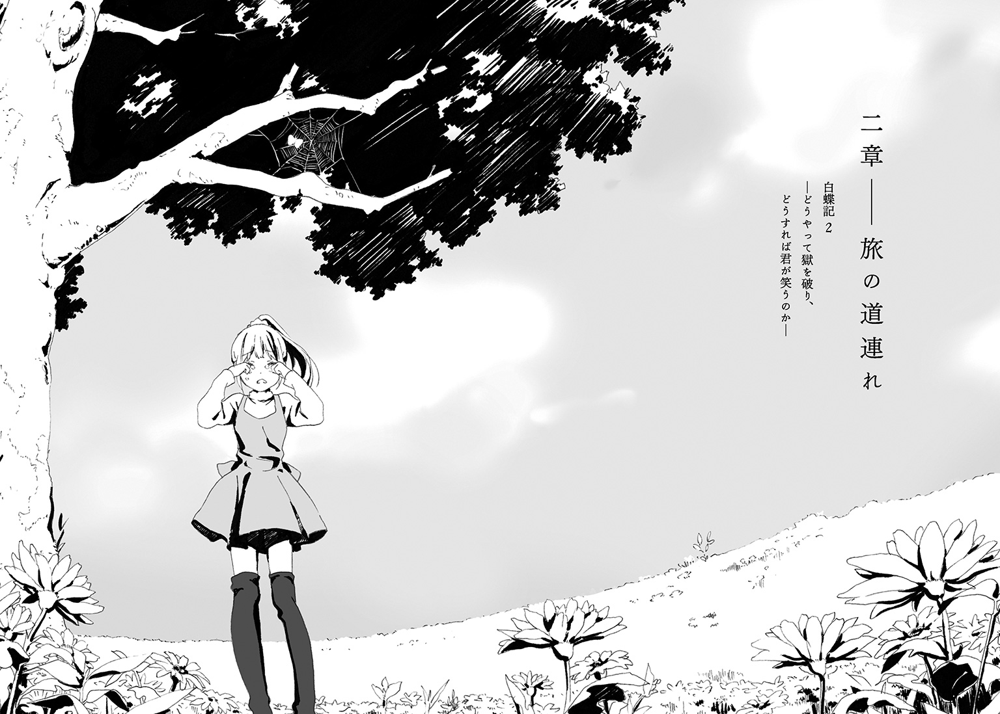

| 白蝶記 2 ―どうやって獄を破り、どうすれば君が笑うのか― | |
| るーすぼーい | |
この本は縦書きでレイアウトされています。
また、ご覧になる機種により、表示の差が認められることがあります。
 ダッシュエックス文庫DIGITAL
ダッシュエックス文庫DIGITAL
白蝶記 ２
―どうやって獄を破り、どうすれば君が笑うのか―
るーすぼーい
輸液ボトルを点滴スタンドから取り外しながら、看護師の遠山和美が話しかけてきた。
「すっかりよくなったね、樹くん。つらそうだった咳も治まったみたいだし、顔色もばっちり。もうすぐ退院できるからね」
遠山の声はいつも個室に明るく響く。ベッドに横たわる樹は、朝から続けていた重苦しい考え事をいったん打ち切った。遠山と何か話そうと、うつむいていた顔を上げる。
よく知らない人と目を合わせて話すのはまだ怖かった。樹の視線は泳いだ。遠山の後ろの、広々としたガラス窓は閉め切られていた。総合病院の五階から望める教団の外の世界。まず細い川があり、対岸から先は雪をまとった家屋やビルがひしめいている。〝懲罰小屋〟で高熱を出した樹は、人口百五十万人の川幌市に連れて来られていた。正午を回った市内の上空を、切れ目のない雲が蓋している。
「ありがとうございます、毎日、よくしてくださって......」
二呼吸分ほど間をあけて、やっとそれだけ言えた。それでも、口ごもらずにしゃべることができたので、樹はちょっと誇らしくなった。いつまでも旭の足を引っ張っていてはいけない。
「樹くんがここに来たのは正月だから、三週間くらいかな。よくがんばったね。やっとお友達に会えるね」
倦怠感と消毒液の匂いが立ち込める病院のなか、遠山は樹に優しく接してくれていた。年齢は二十代半ばか。スリムな体形で、白衣がよく似合っている。激務だろうに、笑顔を絶やさない姿勢が素敵だった。肺炎を患い、呼吸器までつけて苦しんだ樹に、遠山はずっと声をかけてくれていた。樹は遠山にもっと感謝の意を示したかった。だが、なかなか日記や小説のなかのようには表現できない。
「旭くんと、陽咲ちゃんだっけ？」
また浮かない顔をしていたせいか、遠山がベッド脇で微笑んでいる。
「きっと、樹くんのこと首を長くして待ってると思うよ。会うときまでに元気になっておかないとね。これからお昼ご飯用意するからね」
樹は遠山から、自分の年齢以上に子供扱いされているとたびたび感じ取っていた。施設で養育されている、親のない子供という目線もあるのかもしれない。
樹は掛け布団のなかで、拳を作ってみた。長い入院生活のせいか、まるで力が入らない。遠山に子供扱いされるのは、弱そうだからだろう。なよなよしたお前が、とあざ笑う施設の職員の顔が頭にちらついた。
その職員は、殺されたという。
「そういえば、あの女の子は？」
遠山が探るように言う。
「時任さんだっけ。女の子っていうには、ちょっと落ちつきすぎてるというか、変わった子だったけど、何度かお見舞いに来てたでしょう？」
「あれは......」
樹は病室を訪ねてきた時任を思い出し、ぞっとした。
「あの人は、違います。教団の人です」
「教団？」
世間一般の人は、教団と教団が囲う山間の村について、さしたる興味を持っていないように樹には見受けられた。
「教団は、施設を管理している人たちで......えっと、ひどいんです。ぼくや旭が小倉っていう職員にいじめられても、見て見ぬふりをしていたというか」
「いじめられて......」
遠山の口が半開きのまま固まった。触れてはいけない話題に触れたというような、気まずい沈黙が訪れる。樹はまた旭と陽咲が心配になった。施設でどんな理不尽で陰惨な出来事があっても、外の世界に彼らの悲鳴は届かないのではないか。
「すみません。突然言われても、困りますよね」
遠山がベッドの枕もとにかがみこんできた。
「ううん、大事なことだよ。樹くん、ここに来たときからひどく弱ってたし、身体にも殴られたようなあとがあったから。ご飯もあまり食べさせてもらえなかったんじゃないかなって、病院の先生方も言ってたの」
樹は遠山を見つめた。今度こそ遠山に深く感謝する機会を得た。
「ありがとうございます。そうなんです、遠山さん。施設ではいまも、ぼくの友達が苦しんでいるんです」
目に涙が滲んでしまう。旭と陽咲ではない他人が、初めて訴えを聞いてくれた。
「だいじょうぶ。ちゃんと話せば対処してくれる人たちがいるから」
遠山は相談所の存在を教えてくれた。電話一本で専門家が調査に動いてくれるのだという。極寒の施設に閉じ込められていた樹には夢のような話だった。
「樹くんは偉いよ。つらい目にあったのに、ずっとお友達のことばっかり考えてて。小説も書いてるんでしょう。ちょっと見ちゃったんだけど、かっこいいね。今度じっくり読ませてね」
そう言って、遠山は配膳の準備に病室を去った。
そして、翌日から、樹の前に現れなくなった。
代わりに看護にやってきたのは、木下という遠山と同い年くらいの男だった。遠山のように笑うこともなく、整然と樹の血圧を測り、冷たい声で身体の具合を聞いてくるだけだった。
「遠山さんは、忙しくしていてね」
恐る恐る遠山の所在を聞いた樹は、はぐらかされたと、思った。勇気を出して施設の職員の横暴について語ってみた。
「よくわからないけど、施設の悪い噂は聞いたことがないな。君にも、こんな大きな個室をあてがってくれてるじゃないか。けっこうお金、かかってるんだよ？」
教団と施設の名前を出したのが悪かったのか、嫌がらせが始まった。
定時にきっかり出されていた食事が、抜かれるようになった。空になった食器トレイをこれ見よがしに差し出されたこともある。入浴やトイレも監視がつくようになった。樹はいちいち木下に訴えでなければ、個室からでることも許されなかった。他の看護師や主治医にお願いしたが最後、シーツの交換がなくなった。木下の暴言が樹の胸を打った。
臭い、汚い。
読書家の樹はそれでも我慢していた。医療の崩壊によって、普通なら淘汰されるような人間を病院側も解雇できないという話を読んだことがある。悪いのは木下ではなく、もっと大きな制度とか社会的な仕組みなのではないか。樹はもともと心優しい男の子で、あくまで目の前の人を信じたかった。
「薬剤間違えるところだったわ。お前、名前なんだっけ」
日に日に高慢さが増していく木下は、樹の個室を支配していった。
横柄に来客用のパイプ椅子に腰かけ、仕事をさぼっているようだった。樹がなにか言うと、ベッドを蹴飛ばす。暇つぶしにか、施設での暮らしぶりを語らせられた。木下はとくに旭に興味を持ったようだ。
「馬鹿だな。〝われわれ〟に逆らおうだなんて」
まるっきり小物のセリフだと思ったが、樹はその小物にいいように見下されている。はじめはためらいがちに肩を殴られた。理由はわからなかった。だが樹が無抵抗な生き物だと知ってか、木下の暴力は加速した。腹、背中、顔。だんだん身体の目立つ場所にあざができてきた。誰もいない個室で、樹は四つん這いになり、木下の足置きにさせられた。
「旭くんも、お前なんか助けてもしょうがないだろ」
樹は白い病室を意識した。そこは、施設の園長と同じ苗字を冠した記念病院だった。
消灯の時間になって、樹は窓辺に立ち、街並みを見下ろした。道内随一の大都市の夜は、村と違って明るい。無数の光が連なっている。マンションやアパート、戸建の一つ一つに人が住んでいる。樹とはなんの関係もなく、日々を過ごしている。
まるで捕らわれのお姫様だ。
ふと思ったそれは、樹が書き連ねている小説の主人公の台詞だった。小倉に続いて木下に馬鹿にされるのも、当然だった。樹は窓ガラスに両手をついて、うめいた。旭にはずっと迷惑をかけていた。陽咲にも頼ってばかり。情けないと思う反面、無性に会いたくなった。旭が小倉を殺したというのなら、なおさらそばにいてやりたかった。
病弱な足手まといではなく、兄として。
樹は自らの細腕に、もう一度力を込めた。誠意や思いやりはもちろん、話すら通じない相手から、弟を守るために。
１
身じろぎしたその途端、襟もとから凍てついた雪の粒が入ってきて、首の裏から背中に溶け落ちていった。背筋を伝う冷たさに、身がすくむ。
頼れるのは、〝懲罰小屋〟を抜けだしてから湧き出る無鉄砲な熱意だけだった。
おれは手袋もせず、肩掛けのカバン一つで、氷点下の雪原にいた。道路脇に除雪されてできた雪山の斜面に背を預け、澄み切った星空に見下ろされ、いまさらのように、自分の立場を再確認していた。
背後の雪山を隔てた道路に車が停まっていた。おれはいきなり見つかったのだ。車から降りてきた誰かの焦れたような声が迫っている。
「ねえ、いるんでしょ、人殺しの旭くん。出てきなよ」
おれの名前と犯行を知っている女の子は、教団の関係者に違いない。捕まったら施設に逆戻りだ。外灯のある道路沿いに近づいたのが間違いだった。飛び出して、闇のなかを走り抜けるしかない。
身を起こそうとして、ふと新たな疑惑に息を詰めた。女の子と、車を運転していたと思われる男との間で、おかしなやりとりが始まったからだ。
「旭くんてば。もう、寒いでしょ、わたしが」
「おい、朱理。放っておけ」
「助けてあげるから出てきなよ」
「朱理」
朱理と呼ばれた女の子のことはこの際どうでもいい。気がかりなのは、男のほうだった。
「いいでしょ、金城さん」
聞き覚えのある声だと思ったら、名前まで一緒だった。施設でおれと母の手紙をやりとりしてくれた人。陽咲と母を乗せて、車でどこかに去っていった。おれは金城の顔を確かめようと、雪山を這い上った。
「あ、出てきた出てきた」
女の子がなぜか両手を振って、おれを歓待していた。巣をつついたらかわいいネズミが出てきたというような軽い調子。後ろで束ねたポニーテールがひょいと揺れている。首回りに毛皮のついたピーコート。短いスカートと膝上まである先の尖ったブーツ。遠目にもおれより背が高そうだった。アイドリングを続ける車のヘッドライトを背にしているが、笑っているようだ。
金城は女の子の後ろにいた。細身の長身。黒いコート姿。間違いない。母と引き合わせてくれたのと同じ人物、同じ格好だった。ボンネットのそばでなにやらうつむいて額に手を添えている。頭を抱えている、といったポーズだった。運転席のドアは開けっぱなしだ。
「金城......さん？」
寒さに口が強張った。藁にもすがる思いだった。敵なのか味方なのか。教団や施設との関係性はわからないが、金城は母とおれの願いを聞いて、陽咲を連れ出してくれた。その後の二人の行方も知っているかもしれない。おれが呼びかけると、金城は聞こえよがしに嘆息した。
「よう、ちょうど車のなかでこいつとお前の話をしてたんだがな」
「ねっ、すごい偶然だよね。きっと旭くんだよって言ったら、本当に旭くんでさ。すごいね、幹部の人に激詰めされてたって聞いてたのに、どうやってか脱走したんだ。ね、脱走したんでしょう？」
興奮する女の子をよそに、おれは金城に歩み寄った。二人とも施設を脱走したおれを前にしてのんびりと笑みを交わしているが、油断はできない。
「この前は、どうも」
おれは金城の顔色をうかがいながら軽く頭を下げた。金城も目を細めた。無精ひげの散見される彫りの深い顔立ちだった。
「おれのこと、覚えてるよな。ちょっと聞きたいことが......」
「よかったじゃねえか」
不意にどこか突き放すような口調で、遮ってきた。
「アサヒちゃんだったか。本当は陽咲っていうんだろ。お母さんと幸せにやってるといいな」
金城の引き締まったあごが、あさっての方角を向いた。傾げた首元に筋肉の筋が太く浮いている。
「金城さんね、イケメンでいい人なんだけど、ちょっと照れ屋さんなんだよ。キミのこともね、自分が逃げ出すチャンスを譲ったとかって、よくわからないけど褒めてた」
金城はまたため息をついて、コートのポケットからタバコを取りだした。ライターの火をつけたところで、女の子がその腕をつかんだ。
「ダメでしょ、子供の前でタバコ吸っちゃ」
女の子に見つめられ、金城は苦虫をつぶしたような顔で、口にくわえていたタバコを箱に戻した。女の子が、えらいえらい、と茶化すように言った。
「......まったく、なんて日だ。図々しいガキを乗せたと思ったら、またとびきりの問題児に出くわした」
陽咲と母はどうしているのか。なかなか質問を切り出せなかった。
少なくとも、いますぐおれを捕まえて教団に差し出すつもりはなさそうに思える。
「ねえ、寒いよ。さっさと逃げ出して、毛ガニ食べに行こうよ」
女の子が勝手に後部座席のドアを開ける。
「旭くん、お先にどうぞ」
と、座席の奥を促してきた。
逃がしてくれる？
おれが期待と不安に戸惑っていると、金城が少しだけ語気を強めた。
「朱理。こいつが、旭がなんなのか、本気でわかってるのか？」
女の子はさらりとしたものだった。
「わたしとおんなじ、かわいそうな殺人鬼ちゃんでしょ？」
だからほら、と言って道路を振り返る。
「捕まったら、いっぱい実験されちゃうよ。死んじゃう子もいるんだからね」
逃げ出してきた施設のほうから、ざわめくような人の声が幾重にも重なって響いてきた。
＊＊＊
深夜一時、時任美夜子は教団本部に戻っていた。旭の逃亡と、すでに追手の手配に人員を割いていることを、他の幹部に報告しなければならない。
小高い山の麓に、信徒の集会所や、祭典に使用する野外音楽堂が立ち並んでいる。山の斜面に伸びる石段が見えた。部下に車を走らせていた時任は、鳥居を模したコンクリートの門の前で一人降り立った。上着の内ポケットからペンダントを取り出し、首にかけた。普段はわずらわしくて身につけていないが、特別な催事もなく門をくぐり、山の上の聖地に足を踏み入れていいのは、幹部だけだ。
アゲハ蝶の形をした純銀製のペンダントは、やんごとなき幹部の証だ。時任が自嘲気味に笑うと、白い息が石段の両脇に聳える外灯に照らされ、闇に溶けていった。
雪を踏みしめ、五十五段の石段を登りきると、五階建てほどの高さの豪奢な建物が姿を現す。白樺の樹木に囲まれた木造作りの本堂は、教団内では〝喜びの堂〟と呼ばれ、村を見下ろして支配する教団の城だった。総面積五万坪の境内には、三代にわたる教祖の主導によって、本堂をはじめとして、四つの門と、東西の様々な様式を取り入れた塔や楼閣が造営され、各所に百点近くの彫像が置かれていた。
時任は、そうした建築物に美しさや威厳を感じなかった。ただ、美が人々を陶酔させ、陶酔が心の隙を作り、威厳が安心と信頼を生み、財産を投げ打つ信徒がいて、彼らは洗脳を信仰と呼ぶ。教団の教義にしても、世界平和のため、我欲を捨て、強く生きよ、という概要ではある。しかし、この狭い世界で正しさを他人に求めれば、お布施という名の献金を要求される。教団は人間の価値観を換金しているに過ぎない。生き方という難しい何かを教えるサービスを提供しているのだ。時任は幼いころから、自分や周りを取り巻く環境を俯瞰的に見るのが癖になっていた。そうしなければ生きてこられなかったし、これから見るであろう幹部たちの行為にも、無駄な反感を覚えてしまう。
本堂の脇を通り、人工池にかかった橋を渡れば、目的の白い建物だ。屋根も平らな正方形の武骨なビル。六階建てなのに窓もなく、きらびやかな周囲の情景から明らかに浮いている。金箔の玄関扉を備えた宝物殿の隣にあって、表向きには事務所ということになっているが、教団の上層部にとってはこちらが本物の宝物殿だった。
入口のインターホンで要件を告げ、暗証番号を押して玄関にあがった。薄暗いリノリウムの廊下を何度も曲がり、二十畳ほどの大部屋に通される。五人の幹部が長方形に並べられた長机に、それぞれ向かい合うように席を取っていた。時任が入室しても見向きもしない。彼らの濡れた視線は、机に囲われた真ん中にある宝物に注がれていた。
檻がある。
それは高さ二メートル、幅三メートルほどの四角い檻だった。金網の隙間から子供が一人、膝を抱えて座り込んでいるのが見えた。薄手のパジャマ姿の子供のすぐそばで、はっ、はっ、と獰猛な息づかいが聞こえる。犬だ。ドーベルマンか。短い体毛が黒光りしている。耳を逆立て、舌を突き出し、せわしなく狭い檻の中をうろついている。
「時任です」
悲鳴を上げるどころか、身じろぎひとつしない子供の背中を目にし、時任は心を抜けがらにすることにした。
檻の反対側からぶつぶつとぼやくような男の声がした。
「犬はしつけてある。子供を襲いはしない。一方で子供には三年ほど前に野良犬に足を嚙まれたトラウマがある。犬と子供を同じ檻に長らく入れておいた。はじめは抵抗していた。狭い檻の中を逃げ回り、泣き叫んで助けを求めた。救いがないことを知ると、子供は昨日からああなった。虚ろなまなざしと浅い呼吸。胆力のかけらも見当たらない。自ら生きることをあきらめているようだ」
部屋の奥にいた別の幹部が、男の言葉を拾ったように続ける。
「脳の扁桃体への刺激が強すぎると、動物はああなる。人間に限ったことではない。天敵から自己を守ろうと過剰に働きすぎた防衛機能が逆に心を蝕むのだ。この研究は〝われわれ〟の教育に有意義な実践をもたらすだろう」
時任も顔見知りの中年の男だった。もとは国立大の神経外科医だったというが、教団に入信した経緯は知らない。わかるのは、こうした実験に需要と供給が成り立っているということだった。教団の外の世界には、自らの手を汚したくないものの、真理の探求に熱心な学者が少なからずいるようだ。教団の資金源は、敬虔な信徒たちからの寄付だけではなかった。
時任は感情を殺し、声を張った。
「施設を脱走した旭を追っています。二十人態勢で臨みたいので、許可を」
「百人使え」
手前に腰かけていた男が時任を振り返った。旭が殺した職員よりも大柄なその男は、大手警備会社の実働部隊の主任だったという。立ち上がって時任を見下ろしてきた。白い制服の胸元が筋肉にはちきれんばかりだった。
「あの少年は、稀に見る逸材だ。〝われわれ〟が与えた餌をきちんと食べた。さあ、これから負荷をかけ、立派に教育しようというときに、お前はなにをやっている」
大男が口火を切ると、幹部たちの時任への非難が募った。
「旭くんか。彼を検査したのは〝われわれ〟のうち私だが、彼の脳にも腫瘍が見つかっていた。私は彼ならば、第二のチャールズ・ホイットマンになれると期待していたんだ」
「時任よ、お前を幹部に抜擢したのは、お前や旭のような子供が、いずれ邪欲にまみれた現世を救えると〝われわれ〟が信じているからだ。そう、革命を志す者は、若く貧しく無名であれと、毛沢東も言っている」
なにが面白いのか、男たちは笑っている。たとえ話を一つさせても、化石のような連中だと、時任は思った。ここは北海道の寒村にすぎず、邪欲にまみれた現世など、彼らの頭のなかにしかないものだ。時任は檻のなかに捕らわれた子供を眺めていた。同情できるような立場にはなかった。代わりに皮肉を込めて胸の内でつぶやいた。お前だけではない、と。幹部たちも、凝り固まった旧態依然とした思想に捕らわれているのだから。
「では、百人で。すぐに出発します」
時任は誰にでもなく目礼した。退室しようと振り返ったとき、また呼びとめられた。
「旭くんを時任くんに任せるのは、彼が君にとって最初のパートナーだからだよ」
教祖の付き人役である大幹部だ。会議ではいつも、最後に口を開く。時任は短く言った。
「有り難うございます」
教育を施した信徒がまた新たな信徒を勧誘する。あらゆる宗教団体がその規模を拡充するのに、必須な手順だった。さらにこの教団の幹部たちはその過程を重視する。施設の職員だった小倉と、虐待を受けていた旭たち。ついに殺害を実行に移した旭を、時任が追いこんでいく。そうした経緯を記した報告書を、彼らは満足げに眺めていたものだ。
「君のような少女でも、がんばれば幹部になれる。君には施設で寂しい思いをしている子供たちの希望になってほしいんだ」
「心得てます」
温厚そうな口ぶりの裏で、男が何をしたのか、時任は覚えている。覚えているが、自ら思い出すことはない。我ながら、男の遠まわしで粘着質な話し方の影響を受けていると、いまは素直に受け止めるだけだった。
「もし旭くんを捕まえて来られなかったら、君を再教育する。〝われわれ〟にとって彼は大変貴重なサンプルだが、教団が不滅である限り、また代わりの子供も見つかるだろう。この意味がわかるかね？」
「〝われわれ〟のうちわたしは、旭よりも愛されているということですね」
「期待を裏切らないでほしい。〝われわれ〟のうち僕は全面的に君を支援するが、集団としての愛は憎しみに変わりやすいものだ。〝喜びの日〟の前に〝われわれ〟の犠牲になってもらうかもしれない」
もったいつけた隠語の意味を時任は理解していた。にわかに浮上したテロ計画の実行日の前に、集団自殺を図る。その陣頭に立って死んでもらうということだ。本当に愚かな大人の集まりだ。すでに計画の一部は警察に漏れているというのに。
「旭を追います」
廊下に出た時任は、決意を新たにした。
まだ、教団を捨てられるような力はない。
いずれ、新しい組織を作らねばならない。陰惨な記憶しかない教団での日々にも、学びはあった。愚かな幹部たちとはいえ、教祖を中心にその結束は固い。彼らは〝われわれ〟などと呼称を統一したり、ペンダントや【徳師】などという尊称によって上下関係をはっきりさせたりと、人間の集団意識を操る術を追求していた。必要ならば暴力もためらわず、服従を強いる。個人が無能でも、集団になれば大きな力を発揮するのが人間というものだ。
＊＊＊
外灯の明かりの先、雪道の景色が切り取られたような闇のなか、交錯する無数の光がちらついている。おれを追う、教団の人間たちに違いない。
女の子がおれの真横で、早く早く、と手招きしている。
「乗れ」
金城も運転席についた。
「待ってくれ。お前ら、なんなんだ？」
「わたしたちも逃げてるんだよ」
それまでへらへらとしていた女の子の声に、初めて真剣な響きが混じった。けれど、おれより先に車に乗り込もうとはしない。逃げたいなら勝手に逃げればいい。二人の思惑がわからなくて、足を踏み出せなかった。金城が運転席のドアを閉めようと、腕を伸ばしながら言った。
「おい、少年。どこまで走るつもりだったんだ？」
「どこって......」
とっさに言い淀んだ。樹や陽咲と再会する。その明確な目的地は......。
「病院だよ。隣の市内の総合病院」
記憶をたどり、小倉に暴行された樹が連れて行かれた病院の名前を告げた。金城の顔が歪んだ。切れ長の眉がハの字になって、頰が盛り上がるほどに唇が横に広がっていく。皮肉たっぷりといった表情だ。
「なるほど、目的地は一緒だな。でもここから川幌市の市街までだいたい二百五十キロはある。山を降りるまで民家の一つもない。ついでにいえば、村を抜けるとき橋を通るんだが、そこにちょっとした検問がある。俺は教団の人間だからごまかしてパスできるが、それもお前や朱理と一緒にいるところを見られるまでだ」
現実を突きつけられて、おれは立ちつくした。靴やズボンのなかは雪でぐしょぐしょだった。両の手のひらはかじかんで、ぞっとするほど感覚がない。凍え死ぬのがオチだ。
「信用できないのもわかるよ。でも、自己紹介は車の中でしようよ。お菓子あげるから」
女の子の厚ぼったい手袋が、おれに差し伸べられた。もたもたしていると、どうやら二人にも迷惑をかけてしまうようだ。
「じゃあ、一つだけ。なんでおれを助けてくれる？」
「それは朱理に聞け」
「金城さんが、キミのお母さんが綺麗だったからだって」
「この朱理ってガキはな、友達が欲しいんだとよ」
ふざけたように言い合う二人に問い質すのを、いったんあきらめることにした。釈然としないながらも、悪いヤツらではなさそうだと、いまは思うしかない。
おれは座席に転がり込んだ。あとから女の子が、やったあ、と陽気にはしゃぎながら続いてきた。車はすぐに発進した。
２
金城から、隠れていろ、とあらかじめ言われていた。
女の子と二人、座席の下で丸まっていると、車はやがて停車し、運転席の窓がスライドする音がした。金城が車外の誰かに短く自分の名前を告げている。許可が下りたのか、車内に差し込んできた冷気は遮断され、再びゆっくりと車が動き出した。
「もういいぞ、ガキども」
どうやら検問をやり過ごしたようだ。
ひと息ついて、車窓から流れる星空を眺めていると、不意に、窓ガラスに自分の顔が映った。車内が明るい。女の子が断りなく車内灯をつけていた。運転席から非難の声があがる。
「おい朱理」
「暗いの苦手。お願い。もう村を抜けたんだから、追いかけられることもないでしょ？」
女の子は座席に深く腰かけ、長い足を投げ出した。
「わかった。わかりましたよ。安全運転を心がけるかねえ」
おれは身を乗り出し、前の送風口から吹き出ている温風に顔を近づけるようにして、運転席の金城を覗いた。
「教えてくれよ。あんたたちは、何者で、一体どこに向かってるんだ？」
車は夜の雪山のなかを進んでいた。左右を鬱蒼とした木々に挟まれた、雪の轍が二本走るだけの細い道だ。ハンドルを握る金城は前方の暗闇を見据えたまま軽い調子で答えた。
「お前と同じだよ、旭くん」
「うんうん、わたしもね、いまからパパに会わせてもらうんだ」
女の子も身を乗り出し、前の座席の肩をつかんでいた。
「金城さんはね、スパイなんだよ」
「どういうことだ？」
「こづかい稼ぎだよ」
金城がちらとおれに首を向けた。
「施設の外には、離れ離れになった我が子と対面したいと願う親がいる。旭のお母さんみたいにな。俺は金をもらって再会の橋渡しをする。もちろん、教団には内緒だ」
「もうバレそうなんだよね？」
「ああ、小倉みたいに骨も残さず殺されちまうな。とくにお前らみたいな重要人物を逃がしたと知れたら」
「重要人物だって？」
小倉の名前が出て、ちょっと声がうわずってしまった。
「旭が小倉を殺した話は本部で聞いている。お前がその後どう思ってるかは知らんが、幹部どもは喜んでたよ。連中は、お前の犯行をあらかじめ仕組んでいたつもりだったらしい」
気持ちが沈んだ。樹や陽咲を暴行する小倉を、園長をはじめとして施設は黙認していた。しかし、おれは小倉に酒瓶を渡し、極寒の小屋の掛金を閉めた自らの手の感触を覚えている。見ず知らずの二人に向かって、打ち明けたくなるほどに。
「あれは、おれがやったんだ......」
そのとたん、金城が吹き出した。
「見事に洗脳されてるな」
「え？」
「教団はそういう教育を施すのがうまい。殺人とか、強盗とか、どんなヤバいことをさせても、自分が悪かったと思わせるわけだ。まだすれてない子供は、自分が悪かったからひどい目にあうんだと勘違いしていく。そうして立派な幹部殿のできあがりだ」
金城は笑ったまま続ける。おれの塞ぎこみかけた気分も一緒に笑い飛ばすように。
「教団は施設に流れ着いた子供をまず検査する。体力やＩＱのテストから始まり、見込みがあれば医療用の器具を使ってさらに本格的に身体を調べる。覚えがないか？」
「いや、わからないけど......」
おれは物心ついたときから施設にいた。その前のことはまるで記憶にないし、母親の存在すら知らないほどだった。
「そうか。俺は教育担当じゃないからよく知らないが、マーキングしているって話だ。とにかくそうした子供に教団はいろいろとやる。負荷をかけるとか言ってたな。職員殺しも、観察されてたんじゃないかな。そうして、お前の罪を許してやれるのは〝われわれ〟だけだ、とかなんとか言って、さらに追い詰めるような実験を施す。なあ、朱理？」
おれの横で、さくっと、小気味のいい音がした。女の子が、いつの間にかもごもごと口を動かしている。
「いっぱい食べさせてはもらえるんだけどねえ」
と、上着のポケットから包装されたビスケットを一枚おれに差し出してきた。あげる、とどこか名残惜しそうに言った。施設ではめったにお菓子なんて振る舞われない。おれが受け取るまで、熱っぽい視線がビスケットに落ちていた。スレンダーな見た目だが、思ったよりも子供なのか。
「ありがと」
「ふー、今日もいいことしたなあ」
のんびりとした笑顔で空を仰いだ。狭い車内の天井があるだけだった。
朱理といったか。妙な女の子だが、おれに近しい境遇のようで、興味が湧いてきた。
「お前も、施設で育ったのか？」
話のとっかかりのつもりだった。
「お前じゃなくて朱理だよ。矢島朱理。それ食べないの？」
ビスケットのことだ。どうにもマイペースな女の子のようだ。朱理に監視されながら、からからに渇いている口の中にビスケットを放り込んだ。朱理は満足げにうなずいている。
「わたしはね、エリートコースだったんだよ」
「エリート？」
「そう、五、六歳くらいからかな。教団の本部があるところのお寺で育ったの。旭くんもこれから入門させられる予定だったらしいよ。よかったね。いっぱいいじめられるところだったよ。わたしなんか毎日読みたくもない本とか読まされてたから」
「どんな本？」
朱理は唇をむくれさせ、渋い顔になった。
「なんか、字がいっぱい？」
会ったときからずっと馴れ馴れしい感じがしていたが、このときも、わかってと、言いたげな哀願するような目で見つめてくる。
「怖い感じの小説とかね。出てくる人みんなが怖いの。みんなでかわいそうな人をいじめるんだけど、いじめられた人が健気だから気に入らなくてやっぱり殺すの。他にはゲームかな。画面のなかで毎日いっぱい人を殺すの。とんだエリートコースだよ。そのあとレポートもたくさん書かなきゃでさ。面白かったですって書かないと、怒られるんだよ」
また懐からビスケットを出して、両手で大事そうにかじりだした。小顔がリスみたいだ。
「それで、お前らは――」
「朱理ね」
にらまれた。ビスケットのカスが唇の端にくっついている。
「朱理の親に会いに、川幌市に向かってるってことでいいんだよな？」
「そうそう、金城さんが連れ出してくれたの。最初は手紙のやりとりから始まったんだよね」
おれのときと似たようなものか。金城はその口ぶりから教団に対して批判的なようだが、長らく子供を脱走させる手引きをしていたのだろうか。
金城は片手でハンドルを握りながら、送風口の真上にある液晶の画面を指で操作していた。あれがカーナビというものか。実物を見るのは初めてだった。目的地まで五時間と表示されている。
「旭のお母さん、立派な女性だったなあ」
ふと思い出したように言う。ミラー越しに、金城の顔がにやついていた。
「まだ言ってる」
朱理がくすくすと笑う。おれは陽咲と母の二人の安否が気になった。
「家まで送っていったんだが、またお金をためてあの少年を迎えに来ますって言われたよ。どうか力になってあげてください、ともな」
おれはうつむいた。母の温かさを思い出すと、息苦しくなる。
「お母さんに感謝しろよ。引き合わせたはいいものの、そのまま飯だけ食って帰っちまう親も多いんだ。他に家庭があるとか、法律上引き取れないとか、そんな理由でな。ガキのほうも急に怖がって逃げ出したりな。今夜たまたまお前を拾ったのも、あの人のお導きってやつかねえ」
「陽咲......、えと、あの女の子は？」
おれは知らず、声を強くしていた。
「さあな。ずっと眠ってたよ」
目を覚ました陽咲は、おれを恨んでいるだろうか。施設に戻りたいと言い出しているかもしれない。早く、会いに行きたかった。
「まあ、ここまで来たら仕方がない。家まで送って行ってやるよ」
「本当に？」
そういえば、と思い当たった。母の手紙の中に、隣の市内に住んでいるとの記載があった。おれは降ってわいたような幸運に心を震わせていた。
「朱理のあとでな」
「ありがとう」
どっと疲れが押し寄せてきた。〝懲罰小屋〟から必死に逃げてきて、ようやく息がつけた気分だった。
「礼ならお母さんと朱理に言え」
「ありがとう、えっと、朱理......？」
「どういたしまして。もっと怖い子かと思ったら素直なところあるんだね」
普段なら、言い返していたかもしれないが、もうそんな気力もない。こちらを覗き込むようにして笑う朱理を、惚けたように眺めていた。
＊＊＊
足跡が車道で途切れている。
時任は先に手配していた捜索隊と合流し、その報告を受けていた。
身を切られるような寒空の下、時任は地面にしゃがみ込み、旭が残した最後の痕跡を懐中電灯で照らしていた。〝懲罰小屋〟から施設の塀を越え、雪野原を延々と続いていた旭の足跡は、施設と村をつなぐ一本の道路で、不意に打ち切られていた。
旭の目的地は知れている。川幌市の総合病院だ。正月から唐突に樹が連れて行かれたとなれば、旭としてはその行方を職員に尋ねただろう。行く当てもなく脱走したとは考えにくい。〝懲罰小屋〟の床を抜け、雪を素手で掘り返すような壮絶な真似をした以上、固い決意が見受けられる。
あらゆる可能性を追求した。
旭は、道路脇に積まれた雪の山の裏に身を横たえていたようだ。雪の斜面に、ちょうど旭と同じくらいの体格の跡が残っている。しかし、その後はそこをよじ登り、車道に出ている。一度身体を休めて、今度は車道を歩き出したということか。車道の雪は固く凍りついていて、上手く歩けば靴の跡もほとんど残らない。対応策として、時任は道なりに車を四台ほど走らせ、旭の姿を捜させていた。
時任は、朝になって旭が凍死体となって発見されることを懸念した。車道を逸れて、明かりもない雪深い野道に入れば、逃げ場はいくらでもある。その場合は、じっくりと日数をかけて捜索範囲を絞っていくだけだ。他にできることは何もない。子供の足で、歩いて山を越えられるはずもないのだから。
素性を偽って、たまたま通りかかった車に乗り込んだとしたらどうか。旭は歳のわりには賢い少年だ。いまごろは村のどこかの民家で一夜を明かして――。
そこまで考えて、時任はいま最も憂慮しなければならない事態に気づいた。
何者かが旭の逃亡を手助けしたとしたら？
「深夜０時以降、検問を抜けていった人間はいたか？」
時任は立ち上がり、部下に電話で連絡をつけた。まもなく答えが返ってくる。
金城司。
三十四歳の男性幹部だ。もと警察官という異色の経歴を買われたというが、いまは連絡員として、教団の渉外を担当している。外出が多く、あまり会議にも顔を出さない。
時任は自らの直感を信じることにした。金城は近頃、用もなく児童養護施設に顔を出すなど、怪しげな行動が目立っていた。旭の友人である陽咲が施設から失踪したその日、金城の名で〝浮説小屋〟が貸し出されている。信徒に開放して説法を行うこともあるが、本来は教団が外部から招いた来賓を歓待するための小屋である。村民総出で旭を捕まえたのも、〝浮説小屋〟の周辺だった。
金城を呼び出させた。が、金城は携帯の主電源を落としているのか、はたまた電波の届かない山のなかにいるようだ。
時任は車を用意させた。
３
耳元に息がかかった。はっとして顔を上げる。朱理がおれの肩に頭をのせて、寝息を立てていた。
おれたちを乗せた車は暖房をつけっぱなしのまま、どこかに停まっていた。山道に揺られているうちに、二人して眠り込んでしまったようだ。夜は明けているようで、結露した窓の向こうから白い光が差し込んでいる。
「仲良く寝てたな。黙ってりゃ、子供って感じでかわいいんだが」
金城が振り返ってニヒルに口元を吊り上げていた。
おれは寄りかかって寝ている朱理をそっと押した。口を半開きにした朱理の寝顔は、夜中に会ったときの印象よりもずっと幼かった。
金城が水筒のコップを差し出してくる。湯気の立つそれは、香りからしてコーヒーだ。村の雑貨屋の自販機の前で、樹と飲んだことがある。
「もう着いたのか？」
コーヒーに口をつけて、訊いた。川幌市は大都会だというが、辺りは雪山の静寂に包まれていた。
「ちょうど山を降りるってところだ。もうすぐ夕別町って町に出る。のろのろと来たんで、ちょっと休憩しようと思ってな」
金城があくびをしながら、正面にあごをしゃくった。フロントガラス越しに、ロッジが見えた。入口に看板がかかっている。ＣＬＯＳＥと書かれた文字の両脇に、ナイフとフォークの絵が描かれていた。
「レストラン？」
と、いうのだろう。きっとそうだ。本のなかでしかその存在を知らなかった。
「なんだ、旭。入ったことないのか？」
「村にないから」
「それもそうか。もう少し正確にはドライブインっていうんだ」
金城はまたおれを振り返った。目が輝いている。
「ここはうまいぞ。外に用事があるとき、俺はたいていここに寄って、仕事をさぼってるんだ」
「でも、閉まってるんじゃ？」
「顔なじみだから開けてもらえるはずだ。その前にちょっと降りろよ」
金城がドアを開けたので、おれもコーヒーの入ったカップを持ったまま、車から降りた。
頭の芯が冷えるようなしんとした朝だった。初めて降り立った村の外の世界。なんだか大げさかもしれないが、ドライブインの敷地に面して道路が走っていて、そのガードレールの向こうには、見たこともない町並みが広がっていた。
「いい眺めだろ」
金城がおれの横に並んで言った。たしかに。靄に包まれた町は、乳白色の巨大な池に沈んでいるようだった。手前のほうの山間の谷に白い住宅地があって、そこだけ雲の切れ目のように橙色の太陽の光が差している。白とオレンジと森と建物の色が鮮やかに交じった、見たこともない朝だった。
「なんだお前、もっとこう、うわあすごーい、とか言わないのか」
「いや......なんだそれ？」
子供っぽくないとでも言いたいのか。金城は苦笑を顔に張りつけていた。拾われてからずっと唇が歪んでいるような男だった。眉毛のいかついカエル顔と言ったら怒るかもしれない。おれはコーヒーをすする。
「俺たちはあっちから来たんだぞ」
車のトランクに腰を預け、金城はタバコに火をつけた。口にくわえると、車道の向かって左側を指さす。車幅の狭い雪の坂道が、暗い山林へと続いている。
「このロッジの裏を降りていくとな、神社があるんだよ」
今度は少し歩いて、ロッジの奥を眺めていた。あとに続くと、斜面を下った先、雪をかぶった木立の間に、赤い鳥居がうっすらと見える。
金城はまた歩き出して、ガードレールのそばで再び町並みを見下ろしていた。鼻歌まで歌い出す。一人楽しげだが、なんだか落ち着きのない感じだった。タバコをくゆらせた子供。
「施設に籠もってると、頭が凝り固まっていかないか？」
金城が、車道を挟んで声をかけてきた。
「メシがうまいとか、景色が綺麗だとか、最近感じたか？」
おれはカップを両手で傾け、黙っていた。コーヒーは熱い。苦い。身体が温まるのはいい。そんな感想だ。
「いままで二十人くらいの子供をこっそり教団から引き離してきたが、お前と朱理はちょっと悲惨なほうだ」
「そうなのか」
「だからこれからは、普通に過ごせばいい。悪かったな。あのとき、お母さんと女の子と一緒に連れて行ってやれなくて。俺としてもあのとき時任に追われているお前を連れ出すのは、リスクが大きかったんだ。お前が自分の代わりに女の子を差し出してくれて、正直助かったよ」
うつむき加減に言って、タバコを吸いこんだ。
「いや、なんというか、あんたにも事情があるんだろうし、いまこうして助けてもらってるわけで」
金城がひきつったような笑い声とともに煙を吐き出した。
「お前、ホント、ガキっぽくないな」
「なにが？」
「いや、いいよ」
なにがおかしいのか。笑い声を収めた金城がタバコの火を靴の裏でもみ消し、携帯灰皿に入れていた。
「お前もお母さんと同じくらい立派だったよ。そして、施設のことはもう忘れろ。すべては教団が仕組んだことで、お前は悪くない」
おれが傷ついていると思っているらしい。どうなのだろう。悩んでいる暇はないと、自分をごまかしていくつもりだった。陽咲はきっと、おれ以上に小倉を殺したという実感を胸に抱いているはずだ。病院にいるはずの樹も、おれに心を砕いていると思う。立ち止まって罪の意識に怯えるのは、二人を幸せにしてからだ。
「気を遣ってもらってるみたいで、ありがとう。でも大丈夫だから」
「かっこいいねえ」
金城の閉じた唇がまた横に広がった。
そのとき、車のドアが勢いよく開け放たれた。
「お腹すいたー」
寝起きの間延びした朱理の声が、山に響いた。
金城が頼みこんで開けてもらったようで、店内に他に客はいなかった。入口から向かって正面にカウンターとキッチンがあり、窓辺にそっていくつかの座席がある。窓から差し込む朝陽が明るい。席について、金城が注文をした。
木造りの厚いテーブルに、肉が運ばれてきた。鉄板が香ばしい匂いを放ち、じゅうっと、鳴っている。
「ステーキだあっ」
おれの向かいに腰かける朱理が満面の笑顔を浮かべた。両手に握りしめたナイフとフォークの刃先を天井に向けて、どんどんと机を叩く。
「すまんが、朱理ご所望の毛ガニは、メニューになかった」
金城も朱理の横で微笑んでいた。そら、食え、とぶっきらぼうに言うが、さっそく肉をがっつきだした朱理を見つめるまなざしは優しい。
おれは半透明の黄色いスープにスプーンをつけた。表面に油の輪が浮いている。コンソメスープというらしい。施設でも飲んだことがあったような気がする風味だが、こちらは格段に温まっているし、味も濃いのか水っぽい感じがしない。
「うまいか、旭？」
「うん、あったかいし、そうだな......あったかいよ」
「笑わせるな。腹減ってるんだろ？」
〝懲罰小屋〟に入れられてから、ろくに食べていなかった。施設の食堂で、わけのわからないお祈りをしてから箸に手をつけていた日々が、なんだか懐かしく感じる。
「なに遠い目をしてるんだよ」
くっくと、金城が顔をそむけながら笑っている。とっとと食わないと、また笑われてしまいそうだ。
「ニンジン嫌いなんでしょ。食べてあげる」
あっ、と漏らす間もなく、朱理がおれの皿にフォークをつけていた。料理が届いてからちょっとの間に、朱理は平らでのっぺりとした肉を半分以上平らげていた。添えてあったニンジンやジャガイモも、もうなくなっている。
「朱理に全部食われちまうぞ」
金城が肉を切り分けてくれた。
肉にフォークを刺した。でかい肉だ。厚さも一センチくらいある。意気込んで嚙むと、思ったよりも柔らかかった。黒く焦げているのは肉の表面だけだったというのか。はじめは甘い。甘いと感じたのも束の間、肉汁の旨味が口のなかに広がって、なんともいえない幸福感に頭がしびれた。
「これは......」
「ははは、旨いか」
おれはわけがわからなくなっていた。とろけるような感じだった。舌か肉かは知らないが、たぶん、一緒になって、口のなかでとろけている。鼻から抜ける野生の生臭さも好みだった。たぶん、動物の血の味だ。
「いや、こういう肉を、小説で読んだことあるんだよ。ステーキをさ、こう、じゅわっとバターで焼いてさ、なんだろ、すごい旨そうなんだよ。精力がつくっていうかさ。そっから戦いに行くんだよ。拳銃持って」
「どうした、いきなり」
「急に元気になったね」
次々と肉片を口に運んだ。嚙みつぶしても、あまり嚙まなくても旨い。ステーキがあっという間になくなると、おれは胃袋に満ちる精力の塊を確かめるように、腹を叩いた。
「そうか、こういうのを男の料理っていうのか......」
朱理と金城がまたどうしてか、笑っている。
陽咲にも食べさせてあげたいと、不意に強く思った。きっと喜ぶだろう。自然と笑顔になって、つらいことも全部吹き飛ぶに違いない。
小食だった陽咲に比べて、朱理は大食いだった。ステーキに続いてラーメンを頼んでいた。黙々と麵をすすって、スープまで飲み干す。お次はデザートのパフェを注文した。レシートらしき紙がテーブルの上にどんどん重なっていく。
「お野菜も食べておけばよかったなー」
朱理のアヒル形の唇が脂でテカっていた。おれは水を飲み、ちょっと呆れながら訊いた。
「ちょっとは遠慮したらどうだ？」
「キミもお肉、ばくばく食べてたでしょ？」
「まあ、そうだけど」
「金城さんは気前よくおごってくれてるんだから、遠慮する子供とか、かわいくないと思うな」
金城はカウンター越しに店主の奥さんらしきおばさんと話し込んでいた。
「子供って、お前、いくつだよ？」
「十三だよ」
おれと同じだ。
「誕生日は？」
「一月十五日」
「おれは十日。てことは、おれのほうがお前より五日ほど年上だな？」
「たった五日じゃない。あと、お前じゃなくて朱理ね。キミってなんか、かっこつけーだよね」
「なんだって？」
「無駄にマッチョな男の人って感じがする。ちっちゃいのに」
ずけずけと物を言う。
「女の子はね、お前って言われると、なんか上から目線な感じがするんだよ？」
陽咲はそんなことなかった、と思う。陽咲より年下みたいだから、仕方がないか。本によれば、おれぐらいの年齢の女は男よりも無駄に背伸びしたがるというか、生意気らしい。助けてもらったわけだし、ここは仲良くしておこう。
「おまえ......」
言い直す。
「朱理は、大切な人とか、いるのか？」
「えっ、なに？」
朱理がその吊り目を丸くする。なぜだ。変なことを言った覚えはない。
「だから、友達とか。そういえば、おれを助けたのも、友達が欲しいからとか、金城が言ってなかったか？」
朱理は、う、うんと、半笑いのままだった。しばらくして、気を取り直したように言う。
「そだね。キミのことはちょっと担当の幹部の人から聞いてたんだよ。わたしと同じくらいの歳の男の子が、施設からお寺に移されるって。でまあ、気になってたんだよ。昨日の夜中もね、キミが噂の旭くんかあって、なんだかビビッと確信したんだよね。あんな時間に必死そうに走ってるわけだし。それで......」
「ああ、ちょっと待て」
引っかかるものを感じて、話を遮った。
「おれのこと、キミって言うのやめろよ」
「キミ？」
「そう、なんか馴れ馴れしい感じがする」
「え、ごめん。でもさ、別にいいじゃない？」
「ダメだ。おれぐらいの歳の男はな、そういう......無駄にフレンドリーな女というか、横から目線みたいなの、嫌いなんだ」
「横からって......」
おれの好きな小説の主人公も、女性にキミと呼ばれることなんてない。だからたぶん、そうなのだ。
「なんかヤダなあ。キミのことはキミって呼ぶよ」
「じゃあおれも、お前のことはお前って呼ぶ」
じっとりとした視線を互いにぶつけ合う。パフェが届いた。朱理はおれから目をそらさず、アイスの上にでかでかと渦を巻いている生クリームをスプーンで取って舐めた。
「あげないからね」
「頼んでない。男がそんな甘ったるいもん食うかよ」
興味がないといえば噓になる。施設でカップアイスが配られたこともあったが、陽咲にあげてしまった。陽咲は遠慮しながらも嬉しそうに食べていたが、目の前のこいつは見せつけるように食べている。
「んー、んまんま」
勝ち誇るような笑みを浮かべる朱理は、変な食べ方をしていた。パフェを彩るさくらんぼや桃をよけて、クリームとアイスだけを狙っている。
「おい、ちゃんと食えよ」
「アレルギーなんだもん」
チョコレートをほっぺたにこびりつけ、朱理は我がままいっぱいに胸を張った。
「キミが欲しいならフルーツだけはあげるよ？」
おれはふっと笑う。
「お前には感謝してる。お前には助けてもらった恩があるからな」
「そだよ。車で通りかかったとき、わたしが金城さんに頼んだんだからね。きっとキミだ。キミも連れてってよって」
「だからって、お前と友達になるかどうかは別の話だ」
「別にキミに頼んでません」
おれがお前といった数だけ、キミと返してくるつもりらしい。こんな小賢しいヤツと、果たして、樹や陽咲が友達になれるだろうか。
「なにケンカしてんだ、お前ら」
金城がタバコの匂いとともに、席に戻ってきた。
「それ、食わねえなら、俺がもらうぞ」
パフェを手元に引き寄せ、桃をフォークで刺した。器の底を撫でるようにして、クリームをたっぷりとつけている。
「男がそんな甘ったるいもん食うかよ」
朱理が言った。ししし、と白い歯をむき出しにしておれを上から眺めている。それは、さっきおれが投げ捨てた言葉だった。
「どした、男がなんだって？」
金城が桃を咀嚼しながら、きょろきょろしていた。
ロッジにはだいぶ長居をしているようだ。強い陽射しに店内が一層明るくなってきた。外はからっからに晴れている。
すでに食器は下げられていて、金城が真っ黒なコーヒーを飲んでいた。
「さて、ここからは道もいいし、夕別町のトンネルを抜ければ川幌まですぐだ。お前らちゃんと仲良くなったか？」
おれと朱理は、金城とテーブルを挟んで隣り合って座らされていた。なんだか先生みたいだ。教団を裏切ってまでおれたちによくしてくれる金城は、施設の先生よりもずっと先生らしく、頼りがいがある。
「金城さん、ご馳走さま。ありがとう」
朱理がぺこりと頭を下げた。仲良くなったかどうかの質問はお互いに受け流す。
「朱理も旭も川幌に住むことになるんだろ。なんかあったときには、連絡とったりしろよ？」
横目で朱理の顔を覗けば、ちらと舌を出された。金城が苦笑している。
「旭には軽く言ったが、施設や教団のことはもう忘れろ。ヤツらは狭い山奥に住んでいる。この町を含めて全国各地にちょっとした支部はあるんだが、川幌は人口百九十万人の大都市だ。想像してみろ。いずれ教団なんてとてもちっぽけなものだったと気づける」
やたら念を押すように言う。金城はこうして、何人もの子供を送り出してきたのだろうか。
「わたし、パパに会えるんだよね？」
「もちろん。向こうさんもバレンタインまでには会いたいって、楽しみにしてたぞ」
「バレンタイン。チョコだっ」
朱理の晴れやかな声が上がった。卵型のシャープな顔が、ほころんでいる。細めた目の先に、温かい親の姿を想像しているのか。わかる気がする。おれもあの母にまた会いたい。
「旭も――」
なにか言いかけたとたん、穏やかだった金城の目つきが一変した。
椅子から立ち上がって、窓際に寄る。なぜだと、小さくつぶやいた。どうしたんだ？ 金城は壁を背に、外の様子をうかがっていた。その横顔が険しい理由がにわかに察せられた。
ロッジの表の道路から、静寂を破るように、車のエンジン音が聞こえてくる。雪をすり潰すようなタイヤのきゅるきゅると鳴る音。ロッジの中まで連なって響いてきた。一台や二台ではなさそうだ。
「逃げろ」
疑問と焦燥の混じった表情で、金城が振り返った。すばやく何かを決断したようだ。その厳しい声に、おれと朱理は立ち上がった。
「マスター、トイレ借りるぞ」
カウンターの奥にある木戸に駆け寄り、開け放った。来い、と促す。朱理が先に動いていた。コートを羽織り、手袋をはめながら、トイレの中に入っていく。おれも朱理の背中を追った。金城も最後に入ってきて、後ろ手でドアを閉めた。
トイレの中は一畳ほどの広さで、三人でぎゅうぎゅう詰めになった。背の高い金城が、便器から伸びるパイプに足をかけ、奥の曇りガラスを横に開け放った。
「いいか、よく聞け。ここから裏手の神社を通って道なりに行けば夕別町の駅に出る。駅から川幌までは汽車で一本だ」
窓から逃げろと、金城は言っていた。
「川幌に着いたら、そのあとは？」
朱理が言った。顔にも状況にも似合わず、ひどく落ち着き払った声だった。
金城はズボンの尻から財布を抜いて、一万円札と何かのカードを突きつけてきた。戸惑っていると、金城は強引におれの首元から肌着のなかにそれをねじ込んできた。
「名刺にあるバーに行け。俺の仲間が、お父さんやお母さんのとこまで手引きしてくれる」
「わかった。早く行こ」
言うや否や、朱理は窓枠に手をかけ、すでに上半身を乗り出していた。スカートが翻る。鉄棒を前にした体操選手みたいにしなやかな動きだった。窓枠を越えるために折り曲げた足が青空に向けて伸びていき、次の瞬間には朱理の全身が個室から消えた。雪に着地した音だけが、朱理の所在を告げていた。
朱理の果断さに見とれていると、おれは両脇の下を背後から金城に抱えられていた。もがきながら、金城の顔を振り返った。
「ま、待ってくれ。金城、あんたは？」
「馬鹿だな。お前と朱理が見つからないことが、俺を安全にさせるんだ」
相変わらず、人を食ったような顔をしていた。
返す言葉もなく、おれは窓の向こう側へと押し込まれた。先に外に降り立った朱理が腕を伸ばして、おれを見上げていた。
「急ご」
ぞっとして、思わずおれを持ち上げる金城の腕を振り払いたくなった。追手の恐ろしさをよく理解しているとも解釈できた。しかし、それは、おれとのささいなケンカにむくれていた朱理の顔ではなかった。教団の人間。たとえば時任を思わせるような、冥く凍てついた無表情だった。
陽咲は見知らぬ女性と朝を迎えていた。
ちょうど、旭が〝懲罰小屋〟を抜けだす日のことだ。
「おはよう」
そこは、施設の天井ではなかった。和室の布団に、陽咲は横になっていた。声のしたほうを向くと、敷居の先に居間があり、女性が一人座っていた。白いセーターに黒いズボン。体つきは細いが、背筋はぴんと伸びている。年齢は三十歳くらいだろうか。上品な黒髪には艶があって、もっと若くも見える。施設の先生ではないと、すぐにわかった。陽咲を手招く表情が、優しく穏やかなのだ。二人分のトーストと目玉焼きが並んだテーブルを前に、微笑んでいる。
「お腹すいた？」
陽咲は惚けていた。つい、先ほどまで、夢見心地のまま手をつないでいたような気がしたからだ。ここは天国の類かと部屋じゅうに目を這わせ、次いで我が身に降りかかった地獄のような事件を思い返した。
「旭くん......」
口に出たとたん、布団から飛び起きた。
「旭くん、は？」
女性は微笑みを崩さず、言った。
「私は鶴見景子といいます。あなたは？」
陽咲はすぐには答えられなかった。景子という女性が、いたずらっぽく覗きこんでくる。陽咲が戸惑っていると、景子が一度深くうなずいた。
「きれいな子ね」
憂いを含んだ目がどこか遠い。陽咲を通して、誰かを想っているように感じた。
「あなたに聞きたいことがたくさんあるんだけど、あなたも聞いてもらいたいことがあるんでしょう？」
柔らかい声に吸い込まれそうになった。
「まずはご飯を食べましょう。そしたらお風呂に入りなさい」
食欲はまったくなかったので、小さく何度もかぶりを振った。景子は陽咲の首の動きに合わせるように、ゆっくりと言った。
「ダメよ。あなたは私の息子が、命がけで守ろうとした子なんだから。まずは元気になってもらわないとね」
万感の思いのこもった言葉に、陽咲はにわかに事態を察し始めた。
陽咲の目に涙が滲み、景子がまた微笑んだ。

１
午前八時十五分、夕別町の空は青く澄みきっていた。まぶしい陽射しに、ロッジの屋根から垂れ下がる太いつららが切っ先を鋭く輝かせている。
時任は夜通し車を走らせていた。教団の村を出て、川幌市に至るルートは、標高二千メートルの雪山を切りぬくように走る、一本の峠道しかない。
山間のドライブインに教団の公用車である灰色のセダンが停車していた。教団の事務局にナンバーを問い合わせると、借用しているのは金城司だった。
六人乗りのバンから降りた時任は、捜索部隊としてあてがわれた男たちを引き連れ、店のドアを押し開いた。
店主らしき夫婦がキッチンの奥で怪訝そうな目を向けてきた。踏みこんできた時任らに驚いている。客は一人もいないが、窓辺のテーブルに、コーヒーカップが残っていた。差し込む陽の光を受けて、うっすらと湯気を立てている。
逃げ出して間もない。と、思ったそのとき、キッチン脇の通路から長身の男が現れた。
「どうしたんだ。ぞろぞろと連れだって」
トイレで用を足していたのか、金城はズボンのベルトを掛け直しながら、のろのろと床板を踏み鳴らし、こちらに向かってくる。
時任はテーブル席の椅子に腰かけた。部下たちは立たせたままだ。
金城は時任の向かい側に座り、コーヒーを飲み始める。時任は金城が話しだすまでじっとその仕草や表情を見つめていた。なんの動揺も見当たらない、訓練されたような顔だ。
「時任美夜子。なにかあったのか？」
「お前は何をしている？」
「なにって、本部には報告しているがね」
「〝喜びの日〟に向けた、支部局との折衝というな。順調か？」
「さて、どうかな。年末からここのところ警察の取り締まりも厳しい。せめて市内はあきらめたほうがいいんじゃないか」
「同感だ」
時任が共感を示したのが意外だったのか、それまでぶれなかった金城の目がわずかに泳いだ。
「〝われわれ〟は、施設を脱走した旭という少年を追っている」
「旭くんか。話題にはなっていたな。早乙女や一条が小倉殺しの英雄だとか息をまいてた。時任の担当だったんだろ？」
時任はテーブルの端に一瞬目をやり、笑みを作った。
「脱走したのは、昨夜の０時ごろだ。困ったことに、いまだ行方もわからない」
「同情するよ。たかが十三歳の少年を大の大人が本気になって追いかける。その指揮を任されたのが十六歳の女の子ってことか。幹部たちは、何かあれば少年法やらに守られてるお前たちに罪を着せるつもりなんじゃないか」
金城に言われずとも、時任は自分の立場を理解していた。金城の認識は少し甘い。教団は法の正義など恐れてはいなかった。だから、大それたテロも計画できるし、意見が一致すれば村民たちとともに自殺も敢行する。時任がいかに旭を捕まえて戻ってくるか。その過程を、彼らはなにより愉しんでいるのだ。若く有望な子供たちがもがいて生きる様ほど、枯れきった悪人を喜ばせるものもない。
「それで、俺に捜索の協力をしろと？」
金城の弱点がうっすらと覗けた。子供だ。ため息交じりに微笑んでいる。声色が甘くなっていた。血管の浮いた目の奥に慈愛の色がある。金城はいつしか時任を、教団の幹部ではなく、少女として見ている。
「ぜひ、手伝ってほしい。これ以上失態を犯せば、後がなくてな」
金城はうなずいた。
「その前に、何か頼んだらどうだ。そこの立ちんぼどもも、座れよ。店に迷惑だ」
物言わぬ信徒たちは、時任の命令がなければ動かない。時任はおとなしく部下を席に着かせた。
「ここにはよく来るのか？」
時任は注文をしない。水だけだ。
「雪山のオアシスみたいなもんだよ」
「一人で、か？」
「幹部は孤独なもんだろ」
「そうだったな」
金城が両手を胸の前で広げる。ささくれの目立つ乾いた指だった。腕も張りがあるが、肩幅は狭い。余分な贅肉はまるでなさそうだった。少なくとも、大食漢とは考えにくい。
「協力するといったが、旭はまだ村のなかにいるんじゃないのか」
「どうしてそう思う？」
「どうって、逆にこっちが聞きたいね。たった一晩で、少年がなぜ村を出て、夕別町まで出て来られるんだ？」
「村に潜んでいる場合は、いずれ労なく見つかるだろう。生きているか、死んでいるかは保証できないがな。〝われわれ〟が急いでいるのは、何者かが、旭を車に乗せて、すでに山を降りている可能性があるからだ」
「可能性ね。根拠は？」
「それも薄いのだが、足跡がちょうど車道に差しかかるあたりで途切れていてな」
「なるほど。たまたま通りがかった誰かが、旭を拾ったと」
時任は水の注がれたコップを傾けた。金城はなかなか尻尾を出さない。
「五十嵐陽咲という少女を知っているか？」
「誰だって？」
「矢島朱理は？」
「幹部養成の宿舎に住んでいる子だったか。からっとしてて、かわいいよな」
「五十嵐陽咲は旭の友人だ。おとといの晩に施設から煙のように消えた。矢島朱理も今日の朝から担当に顔を見せていないそうだ」
「旭みたいに逃げたと？」
「逃がしたんだろう、お前が」
突きつけるように言ったが、金城の表情は崩れなかった。背後関係を探ろうと思っていたが、金城はなかなかに食わせ者のようだ。あまり時間がなかった。
「昨夜、村の検問を抜けたのはお前ただ一人だ」
「おいおい待ってくれよ、美夜子さん。それだけで疑われるんなら、俺も仕事にならないぜ」
「黙れ」
急におどけだした金城に、時任は確信を深めた。明らかに時間を稼ごうとしている。時任はテーブルのレシート立てに手を伸ばした。丸めて重ねられたレシートに、時任は最初から目をつけていた。
「ステーキ三枚にラーメンにパフェか。ずいぶん食べるんだな」
「育ち盛りなもんでね」
「そんなに食べたら、トイレに駆け込みたくもなるだろう。窓から胃のなかのものを戻したか？」
一気に動いた。時任は即座にロッジの裏手に部下を走らせた。複数の靴音が店内に慌ただしく響く。
続いて部下に金城から車の鍵を奪わせた。時任らの接近に気づいて、旭たちを慌てて逃がしたのであれば、車内に有力な手掛かりが残っているかもしれない。
くまなく調べさせたところ、座席の下から銀のモンシロチョウが見つかった。教団が宿舎に住む期待の子に授けるペンダントだ。矢島朱理のものと見て間違いない。
思わぬ収穫もあった。エンジンをつけたところ、カーナビも起動し、彼らのおおよその目的地が判明した。川幌市の歓楽街だ。
「動機は罪滅ぼしか、金城警部補」
金城は二人の男に両脇を抱えられ、バンに押し込まれるところだった。時任は道中に、金城の略歴を調べていた。教団に提出された履歴書は眉つばものだったが、付随された資料のなかにあった五年前の新聞記事と週刊誌が金城を断罪していた。
「川幌市の万引き少女グループを追走中、一人が路地から飛び出してきた車にはねられ、死亡した。交番勤務のときからお前がよく補導して、面倒を見ていた少女だったらしいな」
「こんなふうによく晴れた、休みの日だったんだがねえ」
金城は青空のもと、朗らかに笑っていた。
「面倒を見てたっていってもシモの面倒を見てたとか書きたてられちゃ、警察を辞めるしかなかった。こう見えてメンタルが弱いもんでね。その後は、聖君大教祖様のお力にすがるほかなかったんだ」
「どうかな。その少女の一家は教団の信徒だったというが？」
興味を引く男だった。はじめから教団を探る目的で潜り込んだのではないか。二十代のうちに警部補まで昇進していたというからには相当なキレ者のはずだ。組織の中でも一目置かれていただろうし、同じくらいやっかみも受けていただろう。いまだに警察との縁も残っているかもしれない。
「金城、お前にはまだ聞きたいことがある」
「いいね、俺も時任とはじっくりと話したかったんだ」
時任は携帯の画面に夕別町の地図を表示した。
駅か、バス停か。朱理と旭の二人は、どういうルートで川幌市に向かうのか。旭の目的地と思しき病院は教団のもので、先んじて樹を見張っておくよう指示を出していた。だが、追手の存在に気づいた旭がのこのこと病院に顔を出すだろうか。市内まで逃げられれば教団もそう目立った行動はとれない。一方、夕別町には五軒もの集会所があり、私立の高校やスキー場、物流所などにも、教団の息がかかっている。村の中のように隷属的とはいえないまでも、従順な信徒の数も多い。やはり、町を出られる前に捕まえておくべきだ。
先行して連れてきた人員は十六名。時任は旭たちが辿るであろう道筋を考え、部下を散らせた。
＊＊＊
気温はどんどん上がっているようだった。雪解けの水が滴り、足裏の感触が雪というより氷っぽくなった林のなかをおれたちは急いでいた。
朱理はまったく足を滑らせることなく、瘦せ細った木々の間を縫うようにして斜面を下っていく。いつだったか山で陽咲と見た小鹿みたいに敏捷な女だ。山を抜け、神社の階段に面した車道に出るまで、朱理は一度もおれを振り返らなかった。
きらきらと陽射しを照り返す白い歩道を朱理は黙って進んでいった。
「おい、朱理」
「おしゃべりしてる暇、ないでしょ」
首だけでおれを振り返った。ちらと覗けた横目が据わっている。歩みはなお止まらない。ぶつぶつとつぶやくような声が、前から流れてくる。
「捕まったら、またいじめられる。わたしはパパに会うんだ」
おれは朱理の手を後ろからつかんだ。
「馬鹿、待て。そっちは逆だ」
朱理はようやく立ち止まった。やっぱりおれより三十センチは背が高い。えっ、と疑問符が点灯したような顔でおれを覗きこんできた。
「噓、なんで。あってるよ」
「あれ見ろって」
振り返っておれが指さしたのは、頭上高く掲げられた、道路標識だ。青い看板にはおれたちの進路とは真逆の方向に夕別町の矢印があり、それは朱理の間違いを指摘していた。
「こ、こっちであってるよ」
「なんでだよ」
「あってるんじゃないかなあって......」
ごまかすように首を振る。ポニーテールがしらじらしく揺れた。目を泳がせて、さりげなく踵を返した。おれは朱理の手を放して、隣を歩いた。
「あと、この道は危険だと思う」
「またまたなんで？」
「二車線の大きな道だし、道路標識の看板には数字もついてる。国道っていうんだと思う」
「歩きやすくていいじゃない」
「見つかりやすいってことだよ。あいつらは車で来てるんだ」
歩道の右手沿いに急勾配の坂があり、その先は広々とした河川敷になっている。坂を降りた辺りを歩いたほうが車道からはちょうど死角になり安全そうだった。
「キミ、ひょっとして賢いの？」
「お前がアホなだけだろ。ずんずん歩いていったかと思えば......」
朱理はからからと笑った。
「キミについてこっと」
川沿いの白銀の堤をおれたちは歩いていた。坂の上を走る道路から車が行き交う音が聞こえる。川向こうに見えていたまばらだった民家の間隔が狭くなり、町のなかに入ってきているのだと実感できた。
「こっちでいいんだよね？」
ついていこうとか言ったくせに、朱理は先を歩いていた。青空を背に、おれを手招きしている。いまにも駆けだしそうだ。落ち着いていられない性格らしい。身ぶりも大仰で、声もでかかった。
「あのさ、お前、もうちょっと静かにしろよ。まずその長い手足を振ったりするの禁止な」
「はいはい、ごめんごめん。天気いいなあってね。でも、そんなに長いかなあ？」
両手を広げ、かかしみたいに立ちつくす。胴体から手足がすらりと伸びているが、全身は小さい印象だった。顔が小さいのだろう。と、ちょっとまぶしいものでも見るように、目を細めてしげしげと眺めてしまった。
「だからそういう目立つようなポーズなしな」
言いながら、ロッジでの出来事を思い返した。朱理のその細身が機敏にトイレの窓を抜けたときのことを。
「金城は、無事かな」
朱理に追いついて、ぼやいた。
「そだね。わたしたちだけ、逃げちゃったね」
「お前めちゃくちゃ早かったけどな」
朱理がおれの横でむっと息を詰めた。
「キミはまだ教団の人たちにいじめられたことないから、そんな余裕なんだよ」
さっきまで笑顔だったのに、口をすぼめてにらんできた。
「や、悪い。別にお前を責めるつもりはなかった。おれだって、逃げたわけだし」
根に持たれたのか、朱理は足を止め、おれの前に立ちはだかった。
「緊急避難っていうんだよ」
「なんだって？」
「知らないの？」
にっと笑う。ふふんと、意地悪げに鼻を鳴らした。
「ああいう本当にピンチのときは、自分だけ助かっても赦してもらえるんだよ」
「ああ、カルネアデスの板の話か」
「クリオネ？」
お互いに、んっ？ とあごを突き出す。おれは朱理がなぜ、唐突にそんな話をしたのか気になったし、朱理も朱理でおれのたとえ話についていけないようだった。
「クリオネはかわいくて好きだよ。テレビで見たことある」
「そっか」
朱理は脇を締めて両手をぱたぱたと震わせた。空にでも舞い上がろうと、つま先立ちになった。クリオネの真似をしていると思われる。おれは見たことがないので、突っ込みようもなかった。しかし、騒がしいヤツだ。
「いいか朱理、金城の厚意に報いるためにも、おれたちはなんとしても川幌市まで逃げなきゃならん」
「キミ、なんか、話し方までマッチョだよね」
「うるさいなあ」
たしかに、おれは村から出たこともなく、考え方の大半は本から学んだ。ちょっと極端だったり、固かったりするところはあるのかもしれない。
「ほら、そうやってむっつり考え込むの禁止」
禁止、に、やたらアクセントを置いて朱理が笑いかけてきた。先ほど、目立つようなポーズを禁止したお返しらしい。
「金城さんのためにも早く駅まで行って、逃げなきゃでしょ？」
言いたいことは伝わっているようだが、結論を持っていかれたようでなんだか釈然としない。しばし、会話の主導権を取り合うような言い争いをしながら町中を目指した。
２
一時間ほど歩いて橋を渡った。途中、何度も見かけていた三角屋根の住宅が途切れると、今度は四角いビルや街路樹が目立ってきた。人や車の通りが多いのか、ところどころアスファルトの路面がむき出しになっている交差点にまでやってくると、教団の村にはなかった風景が次々と飛び込んでくる。学校の体育館くらいの大きさのスーパーと駐車場。店先を通るだけで香しく匂い立つパン屋。ガラス戸を四枚くらいつなげた広い入口を構える本屋は、村の雑貨店とは比べ物にならないほど大きい。おれはつい浮かれていた。あれはなんだろう。けばけばしい彩色の看板が、まるでムカデの足みたいな無数の電球をまとって、昼間からうねうねと光っている。その看板のある店の前を横切ると、窓ガラス越しにじゃらじゃらと音がした。きっとパチンコ屋だ。
たまに車道を走る車があるだけで、町を歩く人影はあまりなかった。駅までの道順は途中で朱理がコンビニに立ち入って聞いた。おれはといえば、コンビニに入るのも初めてだったので、きょろきょろと陳列棚を回り、なんでもそろうな、などとぼんやり思っていた。
「お前は、村から出たことあるんだな」
コンビニを出て、道すがらふと尋ねてみた。
「ないよ」
「ないの？」
物怖じせず、コンビニの店員に話しかけていたので、ちょっとびっくりした。
駅前に着いた。小さなロータリーに二台のタクシーが連なって停まっている。タクシーの向こうに改札らしき柵も見えた。柵の囲いのなかに、制帽をかぶった男の人が立っている。切符を扱う駅員さんだろう。
太い支柱に支えられた庇のなかに入り、切符売り場を探した。
「ねえ、ジュース買って」
施設を飛び出したおれの現金は、金城から渡された一万円札と、財布の中にあった六百円ほどの小銭だった。
「あっちにお弁当も売ってたよ。わたし、シュウマイ弁当。キミは幕の内弁当にしなよ」
汽車に乗ったことがないので、川幌市までいくらかかるかわからない。券売機の真上にある路線の案内図が描かれた壁を眺めながら、二人分の金額を計算した。
「二人で二千円だよ」
朱理が横から言った。
「それ弁当代だろ。川幌市まで二人で四千円だ」
「子供料金で半額って書いてあるでしょ」
たしかに。だが、十三歳のおれは子供料金ではないはずだ。駅員に確認してみるとなぜか褒められたが、思った通りだった。
「しっかりしてるんだね、キミ」
「本によれば、殺人の動機はたいていお金だからな。きっちりしていきたいんだよ。金を惜しんで誰かに恨まれたらもっと損をするだろ？」
「なんかスケール大きいけど、それ、金城さんのお金だよね？」
「まあ、うん......だから、ほら、シュウマイ弁当じゃなくて、あっちのパンにしろよ。これから何があるかわからないんだし」
「えー」
わかりやすく肩を落とした。朝いっぱい食っただろ、という視線をぶつけるが、朱理は寂しげに眉根を寄せる。
「じゃあ、あの九百円の焼き肉弁当にしようよ。二人で食べよ。そしたら、一人四百五十円なんだよ。キミ、お肉好きでしょ？」
「わかったよ」
じめじめと言われ、おれは天を仰いだ。売店に足を運んだ。シュウマイ弁当を一つ頼む。朱理の顔に花が咲いた。
「いいのっ？」
おれは黙ってうなずいた。お釣りを受け取って、朱理に弁当を突きつける。ありがとー、と歯を見せて笑う朱理はガキっぽくって、ちょっと陽咲を思い出させた。
「旭くんには借りができたね」
「金城の金だけどな。汽車に乗ってから食えよ」
弁当のビニール袋のなかに顔を近づけていた朱理に釘を刺した。しかし、キミから旭くんに昇格したあたり、餌を与えれば扱いやすい女みたいだ。
切符を買って、改札をくぐった。二十分後の汽車に乗れば、一時間ほどで川幌市に着くようだ。ベンチに朱理と並んで腰かけ、列車の到着を待った。
「電話、ないかな」
金城から受け取った名刺にあるバーに連絡を入れておきたかった。金城の安否も気になるし、前もって事情を説明しておけば、力になってもらえるかもしれない。
「あるよ」
朱理が上着のなかから、携帯を差し出してきた。
「お前、なんでこんなもん」
「エリートコースの子は持たされるんだよ。朝寝坊したりすると、それで呼び出し受けてたの。使い方わかる？」
「わかるよ、スマートフォンっていうんだろ？」
「違うよ、それガラケーっていうんだよ」
「なんでだよ、ピシッと縦型でスマートじゃないか。ボタンも小さいし」
「キミ、常識ないの？」
朱理は譲る気はなさそうだった。どうやら、おれが間違っていたらしい。携帯は全部スマートフォンだと思っていた。施設で時任や小倉が見せつけてきた携帯も、ガラケーというのか。小説なんかでもよくただの携帯とかスマホとか略されてるから、知らなかった。
しかし、電源は落ちているようで画面は真っ暗だった。電池切れのようだ。
「誰かに借りようよ」
と、朱理が大事に抱えていた弁当をおれに預け、立ち上がった。
平日の午前中だからか、あるいは小さな駅だからか、ホームにはおれたちの他に、親子連れがひと組と、中年の男の人が一人いるだけだった。あれがサラリーマン風というのか、男は襟の立ったビシッとしたコートを着込んでいて、黒いカバンを手に提げている。もう片方の手で、ちょうど携帯を使用中だった。朱理はコンビニで道を尋ねたときのように、無遠慮に男に近づいていった。
ふと、男が朱理からおれに目を投げた。かと思えば、顔を伏せる。電話の内容を聞かれたくないのか、そばに行きかけていた朱理からも身体を背ける。
「朱理」
思わず、声を張ってしまった。
驚いて振り返った朱理に確かめたいことがあった。おれは男に注意を払いながら、朱理に向かって声を潜めた。
「常識のないおれに教えてほしいんだが、この世にはたくさんの会社があるわけで、携帯っていうのは、いろんな種類というか、形があったりするんだよな？」
「たぶんそうだけど、どしたの？」
首を傾げた朱理の向こうにいる男の様子をもう一度うかがった。緊張が腹の底からこみ上げてくる。
――いちおう本部からの支給品だからな。困るってことはないが、なくしたってのはまずい。
おれが殺した男の言葉が頭をよぎった。それはほとんど確信に近かった。コートの男が手に持っている携帯は、小倉と朱理が見せつけてきたものと、形や色まで同じだった。たまたま、偶然？ こんなところで同じ携帯を持っていたと考えるほど、呑気にしてられない。
「逃げるぞ」
「え、どして？」
「いいから」
いまごろ仲間を呼んでいるに違いない。悠長に汽車を待っていられるわけがなかった。逃げ場のない列車に乗りこんだが最後、袋のねずみというやつだ。有無を言わさず、朱理の手を引いた。
ゆっくりと歩き、通ってきた改札に近づいた。朱理がベンチに置いたままのお弁当を名残惜しそうに振り返ったそのときだった。
待て、と大声がホームに響いた。
案の定、男はカバンを放りだし、血相を変えて駆けだしてきた。
「走れ」
地面を蹴った。朱理も猛然と足を踏みだした。改札を走り抜ける。駅員の驚く声が後ろで尾を引いた。駅の庇の影から晴天のタクシー乗り場のほうに踏み入ると、白い雪の照り返しが目に痛かった。
男は駅員を振り払い、なおも追ってくる。角でも生えてそうな怒りくるった形相で、突進してくるような勢いだ。朱理がおれの前を行きたくなる気持ちもわかる。歩道が赤信号でも止まらない。
駅前の道路を渡り、二階建てくらいのビルが立ち並ぶ路地に出た。どこをどう逃げればいいのか。迷っている暇もなく、朱理のあとを追った。朱理は長い足のバネを利かせ、マフラーをなびかせ、風を切って走っている。体力には自信があるほうだったが、朱理との距離はまったく縮まらない。どんどん引き離されていく。不意に朱理の背中が建物の角に消えた。どうやら三人のなかでチビのおれが最も足が遅いらしい。背後から男の荒い息づかいが聞こえてきた。おれの肺も悲鳴を上げ出した。道を直角に曲がったとき、足が雪に滑った。青空が斜めに揺れ、次いで右肩に鈍痛が走る。教団の男の靴がすぐそこまで迫っていた。瞬間、おれと男の間を割って誰かが飛び出してきた。
朱理だ。腰をかがめている。男の懐に体当たりするように勢いよく潜り込んだ。目を見張った。気合いの声が響き渡ったかと思うと、男が空中で一回転していた。朱理は膝を突き上げるようにして伸ばし、男の一本の腕だけを引いている。一瞬の出来事に啞然としていると、朱理はすっくと立って姿勢を正し、胸を張った。
地面に背中から叩きつけられた男は、白目を剝いて悶絶していた。
＊＊＊
「知恵の回る子供だから、用心しろと言っただろう」
電話連絡を受け、駅まで車を走らせているところだった。旭たちを見失った。時任は座席のシートをやや後ろに倒し、背後の金城をバックミラー越しに仰ぎ見た。
金城はバンのなか、おとなしく座っていた。最後部の座席で二人の男に挟まれた形だ。金城が口の端を歪めた。
「まんまと逃げられたと？」
時任も微笑みで返した。
「豪快に投げ飛ばされたらしい」
「教団の教育のたまものだな。まだ警棒の振るい方とか教えてるのか？」
「らしいな。矢島朱理は要人警護班にあてがわれる予定だった」
「親衛隊でも作る気か？」
金城がちらと、左右の男に目を這わせた。二人とも薄いグレーのスーツを着込み、似たようなごつい体格をしているが、年齢は二十歳そこそこのはずだった。いまは黙って前を向いているが、金城がおかしな動きをしたらすぐにでも腕をひねりあげるだろう。
「タバコ、吸わせてもらえませんかね？」
「お前がお仲間や身の上についてしゃべってくれればな」
「時任は旭たちを追うのが仕事だろう。なのに、俺を本部に引き渡さないってことは、お前はお前でなにかたくらんでるんじゃないのか」
時任は押し黙った。
「少なくとも、俺に利用価値があると思ってる」
めざとい男だ。往生際が悪いともいえる。拘束された身でありながら、どうにかして状況を打開しようとしているようだ。時任は道路地図を眺めながら、淡々と言った。
「そうだな、お前に頼めば、もしかしたらわたしも教団の外に連れ出してくれるのではないかと思ってな」
これには金城も閉口した。しばし、お互いに腹を探り合うような沈黙が車内に流れた。
「いい冗談だ」
「だろう？」
「参ったな。じゃあ白状するが、俺ができるのは、子供を親に引き合わせることだけさ」
「なんのために？」
「金だよ。親子の感動の再会を演出して、ちょっとした手間賃をもらう。村の外にそういう仲間がいるんだ。もとは教団の被害者家族の会のメンバーだ。何年か前に教団を相手に裁判を起こそうとして、潰された」
「筋の通った話ではあるが、それがすべてではないと期待している。本当に知られたくないことがあって、一つだけ手の内をさらけだしたのだと」
「かわいくないねえ」
時任は次の一手を考えていた。
村のなかに残していた人員は続々と町に集結させている。もう一度戻ってくる可能性は薄いが、駅には見張りを立たせていた。川幌市に向かう長距離バスは駅に一つだけだったので、そのバス乗り場も押さえてある。旭たちは汽車を利用しようとしたことから、タクシーを使えるような現金は持っていないとも考えられるが、車は厄介だった。幼い二人を道すがら川幌市まで乗せていく車があってもおかしくはない。金城が時任の心中を察したように煽ってくる。
「で、どうすんだ。緊急配備でもかけるか？」
「〝われわれ〟としても警察は困る。だから、二人が駆けこめないように、町の五つの交番と駐在所には人を送っている」
「もし現れたら、保護者として名乗り出て、穏便に連れて帰るってか。まあ二人は施設を脱走したわけだから、噓でもないな」
「地元の信徒たちにも協力を仰いでいる。悪さを働いて脱走した子供たちとして、見かけ次第、通報が入る」
金城はふっと笑って軽くかぶりを振った。
「でも、いまごろは、気のいい親子連れと楽しくヒッチハイクの旅をしているかもな」
「平日なのにか？」
「じゃあ、気のいいトラックの親父だ」
「トラックか......」
時任は地図にじっと目を落としている。川幌市に至る、主要な国道は二本だった。線路沿いを走る道と、別の町をいったん経由して向かうルート。碁盤の目状に張り巡らされた夕別町のどんな道も、川幌市に向かおうとすれば一度は国道に出て、道内有数の大きな河川を渡らなければならない。
時任の決断は早い。
「気のいい親子連れやトラックの運転手が、まさか、見ず知らずのかわいい子供たちをトランクに隠すような真似はしないと思うんだが、どうだろう？」
金城の顔から笑みが引いた。
時任は教団の力を存分に振るってやろうと、心に冷たい風を吹かせた。
「〝われわれ〟も警察は困ると言ったが、その真似事くらいはやってのける」
３
二台目の車も駄目だった。車が走り抜けていくたびに冷たい風が頰を撫でる。駅を離れて歩くこと三十分。手を上げても素通りされてしまう。おれたちは、行く当てもなくふらふらと、駅までたどってきた道のりを引き返していた。
「しかし、お前、強いんだな。あれって柔道か何か？」
声をかけたものの、隣を歩く朱理の表情は暗い。
「まあね」
「助けてくれて、ありがとう」
「キミを見捨てたら、お金ないし......、キミは賢いし......」
教団の男を撃退してからというもの、ちょっと口数も減っている。
「お腹すいた......」
腹が減って、ご機嫌ななめらしい。
「だからダメだって。汽車もバスも使えないんだから、なるべくお金は節約していかないと。もしかしたら、町で一泊していくことになるかもしれないんだ」
「キミは本当にしっかりしてるねえ。うらやましいよ......」
そのとき背後から車の音がしたので、振り返って手を上げた。車はこちらに気づいたようだが、速度を落とす気配はなかった。
「ねえ、さっきから、なんで道路に向かって手を振ってるの。目立つポーズ禁止って言ったでしょ？」
「だからヒッチハイクだよ」
「川幌市までタダ乗りってこと？」
「ずうずうしいけど、しょうがないだろ。他になにかいい手立てあるか？」
役場らしき建物の公衆電話から、金城が指定したバーに電話をかけてみたが、つながらなかった。バーというのは、きっと夜から店を開けるものだ。二時を回って気温はさらに上がっているようで、喉が渇いてきた。顔や手は冷たいのに、服の中は火照って、背中は汗ばんでいる。
「おかしいなあ......」
またしても車に逃げられ、おれはつい愚痴っぽくぼやいた。
「なにが？」
朱理が空腹に虚ろな目でおれを上から覗きこんできた。
「いや、こういうとき、陽気なおじさんが乗せてくれるはずなんだよ。よう、ボーイ。乗ってくかいって、むしろ向こうから声をかけてくるんだ」
町中だからだろうか。そういえば、小説でも田舎道で、それも夜のシチュエーションが多かったような......。
「キミ、ぜったい、なにかこじらせてるよね」
朱理の目に呆れと非難の色が募った。そのとたん、表情が一転する。おあっ、と口を縦に広げて、指を真上に立てた。
「思いついた。矢島朱理、ここにきて思いつきました」
「なんだよ、うるさいな」
「ついてきて」
爽やかに駆け出した。小鹿みたいなステップで雪道を踏んでいく。急に元気を取り戻した朱理のあとを追うしかなかった。
野菜や果物が壁の棚に青々しく陳列されている。買い物かごを提げたおばさんやお婆さんが食品に目をやり、背を丸めながら通路を歩いている。店内には小気味いい音楽が鳴り響いていて、朱理の足取りもさらに軽くなった。
はじめてスーパーに入ったので、おれはその色とりどりの品々に圧倒されていた。肉も魚もいろんな種類があって、扉のない冷蔵庫にパックされて並んでいる。通路の左右を挟む棚は高く、手を伸ばしても届きそうにないところまで、調味料や油の容器がひしめている。まるで巨大な食の倉庫だ。昔よく施設の倉庫からくすねてきた缶詰もあった。樹がベッドのなかで、うまそうに食っていたのを思い出す。缶詰というものはでかいフルーツ缶だけだと思っていて、サバや焼き鳥を収めた小さな缶もあるのだと、今日まで知らなかった。
うろうろとしはじめた朱理に、なんでここに来たのか聞くのも忘れていた。
「あった、あれが試食コーナーだ。テレビで見たことあるんだよ。タダでご飯食べさせてもらえるんだ」
朱理は宝物でも発見したように声を弾ませている。
「くださーい」
エプロン姿のおばさんに一目散に駆け寄った。
パーマ頭のおばさんは朱理の勢いに驚いたのか、手元のつまようじに突き刺さったウインナーを落としそうになる。が、すぐに人のよさそうな笑顔を向けた。異様に目を輝かせている朱理に、おばさんはウインナーを差し出した。
「もっとください。あの子にも」
口をもぐもぐさせながらおれを手招きした。おれは啞然としていた。なにを思いついたのかと思えば......。
おばさんは嫌な顔ひとつせず、朱理に話しかける。
「かわいいお嬢ちゃん、どんどん食べて。今日は人が少なくってねえ」
「ありがとうございます」
朱理はおばさんがくれるのを待たず、鉄板プレートのウインナーにまで手を伸ばした。なるほど、無料で試食させることで、商品を買ってもらおうという一種の宣伝のようだ。客としても目の前で食べてしまった以上、お買い上げしないのも気が引けるという心理も働くのかもしれない。......などと、勉強させてもらっている場合ではなかった。
「おい、こんなところを見つかったらどうする」
「あの人たちもまさかわたしたちがスーパーでご飯食べてるなんて思わないでしょ」
返す言葉に詰まった。たしかにどこかのお店に入ったり、路上をうろついていたりするよりは、安全かもしれない。おれが追手なら、獲物が悠長にスーパーの試食コーナーにいるなんて思いつかない。朱理は至福の表情で、ばくばく食べていた。
「それでもちょっとは遠慮しろよ」
「じゃ、キミは食べなきゃいいでしょ」
おばさんがくすりと笑みをこぼした。
「君たち、学校の帰り？」
「違います」
朱理が即答した。嫌な予感がしたので、おれが口を挟んだ。
「実は、事情があって学校を休んでるんです」
今日は平日だった。小学校ならとっくに下校時刻ではあるが、おれたちは私服で、学校の指定カバンも持っていなければランドセルも背負っていない。頭の中で状況を整理して、続けた。
「川幌市に、病気の兄貴がいまして、どうしても会いたくなって二人で向かってるんです。そしたらこいつが腹が減ったとか言いだして。買い食いしたら汽車賃も足りなくなるなあと」
「この子、ボクの妹さん？」
おばさんの視線がおれと朱理の間を移ろう。おれの低い身長と薄汚い格好から、関係性がわからなくて聞いたのだろう。
「友達です」
「友達じゃないでしょ」
おれは腹のなかで一人ごちた。お前、そこは合わせろよ。
「相互依存関係の旅の道連れです」
ウインナーに頰を膨らませながら得意げに胸を張る。緊急避難がどうのと言ったときも感じたが、どうもこいつは小難しい言葉を使うときちょっと偉ぶりたがるようだ。
「すみません、見ての通り変なヤツなんです。許してあげてください」
おばさんもわけがわからないことだろう。しかし、大人の優しさなのか、おれにもウインナーを焼いてくれた。朱理が喉が渇いたと言い出すと、店の奥から紙コップの水まで持ってきてくれた。
およそ一袋近く食べて満足したのか、朱理はトイレを訴え、店員に案内してもらっていた。おばさんが苦笑している。
「元気なお友達ね」
おれはひきつったように笑って、頭を下げた。
「本当にありがとうございます。こんなに食べていいものじゃないと思うので、一つ買っていきますね」
「いいのよ、お金ないんでしょ。それに、一度この袋を開けたら、どれだけ食べられてもおんなじなのよ。たしかにもうちょっと売れないといけないんだけどね。不景気かしらね」
長話が始まった。川幌市に娘夫婦がいて、最近になって孫が生まれたという。娘さんは昔は朱理みたいな女の子で、スキーが得意だった。あまり共感を持てない話でちょっと申し訳なく感じながらも、お話につきあうのがタダ飯への礼儀だと思った。
「ご馳走さまでした」
朱理が戻ってきた。おれも店を出る前にトイレに寄ろうと、おばさんのそばを離れた。
「ちょっとどこ行くの？」
朱理がおれの二の腕をつかんでいた。なぜか、ちょっと怒ったように口を尖らせている。
「ちゃんとお礼しなきゃでしょ」
「したよ」
朱理はため息をついた。
「スーパーはね、夕方から混んでくるんだよ。タイムセールっていうのが始まって、おばさんはこれから大変なの。だから、手伝ってあげるの」
説教顔の朱理が常識の二文字を引っ下げて、おれの容疑かなにかを追及するような勢いだった。頭が痛くなった。いまそんなことをしている場合じゃないだろうとか、おばさんもそこまで望んでないだろうとか、あらゆる考えが巡ったが、その前にトイレに行かせてほしいし、断ったら投げ飛ばされそうだという結論に落着した。
「さあさあ、見て見て、すっごくおいしいウインナーですよー」
屈託のない大声が響いた。
おばさんも目を丸くして、勝手を得ずに隣に立った朱理を眺めていた。
スーパーを出ると、辺りはほとんど暗くなっていた。東の空の濃紺が西の赤い空を呑みこんでいる。少し風も出てきたようだ。
教団の追手は影も見せなかったが、時間を無駄にしたともいえる。朱理にそう言ってやろうと思ったが、今回ばかりは感謝せざるを得なかった。朱理の謎の行動力が、町からの脱出に困っていたおれたちに光明をもたらしたのだ。
「よかったら川幌まで、送っていってあげる」
早番というらしく、おばさんの仕事は五時に終わった。試食の手伝いの最中、誰かれ構わず声をかけ、笑顔を振りまく朱理を見ているうちに、娘さんに会いたくなったという。着替えて駐車場にやってきたおばさんは、すでに娘さん夫婦と連絡をつけていた。断る理由はなかった。おれたちは軽自動車の後ろの席に二人して乗り込んだ。
「そっか、朱理ちゃんは、パパに会いに行くんだね」
車は暮れていく町中をゆっくりと進みだした。朱理はすっかり気に入られていて、おばさんからもらった飴をなめていた。
「パパは、社長さんなんだ。おいしいものいっぱい食べさせてくれるって言ってた」
「すごいわねえ」
朱理について、おばさんは込み入った事情を聞いてこなかった。パパに初めて会う子供を前にして、大人が取る態度なのかもしれない。おばさんも一人暮らしのようだった。おれの母と同じで、毎日一人で夕飯を食べているのだろうか。
教団の村ほどではないが、夜の町はやはり暗いものだった。道路の脇には除雪された雪が壁を作っていて、それが、歩道沿いの商店から漏れるガラス越しの明かりを遮っている。車のヘッドライトがつるつるの路面を照らす。何度か交差点を曲がっても、どこにでもある雪が闇を際立たせるように淡く光っていた。
車は長い直線に入っていた。一車線の道路が左手の雪山に押されてなお狭くなっている。前の車の赤いランプが何度も目についた。後ろの車からの明かりもときおりまぶしい。スムーズに流れている対向車線に比べて、こちらは何台もの車が列を連ねていた。
「やだ、渋滞みたいね」
おばさんの渋顔が、バックミラーに映った。
不意に、肩をつつかれた。朱理だ。ひとしきり騒いで眠り込んだのかと思っていた。見れば朱理は何かを指し示すようにあごをくいっと前に振っている。横顔に緊張が走っていた。なんのことかわからずにいると、しびれを切らしたように言った。
「おばさん、そのネックレス......」
バックミラーの支柱に、きらきらした鎖がかけられていた。輪の下のほうに、妙な形をした銀細工が垂れ下がっている。
「ああ、これ、お守りなのよ。交通安全とか、安産祈願とかの。どうしたの？」
「や、高そうだなあって」
朱理がぎこちなく言うと、おばさんはふっと笑った。
「そうなのよ。去年の暮れにね、お隣さんに頼まれて買っちゃったの。二万円もしたのよ。なんでも山奥の宗教団体のもので、御利益があるんですって」
おれと朱理はどちらからともなく、顔を見合わせた。
「宗教っていっても怪しい感じじゃないのよ。一度、集会に出たんだけどね、十代のかっこいい男の子が面白い話をしてくれるのよ。もう、すごいイケメンなのよ。そうね、旭くんみたいに眉と口がシュッとしててね」
一気に居心地が悪くなってしまった。教団はこの町まで根を下ろしているということだ。歌うような調子で話すおばさんにおれたちの素性を打ち明けても、とうてい受け入れられそうになかった。山奥の施設で虐待同然の仕打ちを受け、殺人を犯して、逃げ出しているところなんです――。
「おばさん」
朱理が強い口調で言った。こいつ、まさか、しゃべる気か。このおばさんが、もしかしたら教団の追手かもしれないというのに......。
「そういうの、娘さんと相談してからにしなよ」
「え、そう？」
「そだよ。ぜったい心配するよ」
浮かれていたおばさんも、落ち込んだように息を潜めた。朱理の目は澄んでいて、車内の暗がりのなか、大きく見開かれていた。
「そうね、朱理ちゃんの言うとおりね」
「約束だよ」
正論を鞭のように振りかざしておきながら、朱理はにへらと笑った。飴を口の中で転がしたままの、だらしなくて甘い笑みだ。ちょっと尊敬してしまう。おれは、教団に取り込まれつつあるおばさんを気づかうでもなく、自分の逃げ道のことばかり考えていた。金城と逃げていればよかったはずの朱理が、なぜおれを助けてくれたのか。その片鱗を垣間見た気がしていた。
「なに、キミ」
顔に何かついているのか、というじと目でにらまれた。
「キミはイケメンではないと思うな」
「そうかい」
「なんか暗いもの。また何かよからぬことを考え込んでたでしょ。禁止って言ったでしょ」
「その禁止とかキミとか、ずっと根に持ってるお前のほうがよっぽど暗いと思うぞ」
「また、お前って言った。馴れ馴れしいなあ」
「お前に馴れ馴れしいとか言われたら、おばさんも笑うしかないですよね？」
運転席から乾いた笑い声が返ってきた。
しかし、車はのろのろとして、おばさんもほとんどアクセルを踏んでいないようだった。歩いたほうが早いくらいだ。ラジオの交通情報で、渋滞の原因がわかった。今日の二時ごろ、二キロほど先の橋でトレーラーから大型の資材が散乱する事故があった。いまは片側一車線での通行になっているらしい。
「これじゃ川幌に着いたら夜中になっちゃうわ」
明日は一時から仕事なのだと、おばさんは困り顔だった。なんの偶然か、川幌市に繫がる別の橋付近でも同じような事故があり、大渋滞を引き起こしているそうだ。
「朱理ちゃんたち、急いでるんだっけ？」
なんとも答えづらかった。早く町を抜けたいものだが、おばさんに迷惑がかかっている。朱理もおれの意見を待っていた。娘さんに電話をかけ始めたおばさんを尻目に、どうするべきか考えながら窓の外を眺めた。
歩道の先にちらちらと複数のライトの小さな光が揺れていた。懐中電灯らしき光はとくに、車道に詰まった車に向けられている。事故現場を調べている警察の人だろうか。三、四人で歩いて、隣を低速で走る車のなかに無遠慮な視線を投げている。かっちりとしたコートを着込んだ、変な集団だ。すでに五台ほど先の車まで覗きこんでいて、こちらに向かって歩みを進めてきた。
「今日はうちに泊まって......」
と、おばさんが言いかけたときだった。おれはとっさにドアノブに手をかけていた。
「すみません、おばさん。Ｕターンできますか？」
おばさんはおれを振り返った。どうして、なんで、とぼやき、答えを求めるように辺りを見回した。
「こんなぎゅうぎゅう詰めじゃ......」
「降ります。ありがとうございました」
朱理にも急ぐよう促した。こういうとき、ぐずぐずしないのは、朱理のいいところだ。ドアを閉める前に、もう一度お礼を言った。おばさんはほとんど悲鳴のような声で、朱理の名を呼んでいた。その声が届いたのか、あるいは急に歩道に降り立ったおれたちが目を引いたのか、怪しげな連中が声を上げ、ライトを向けてきた。
＊＊＊
網にかかった旭たちを追走しているとの報告が入った。
二人は再び町中に向けて国道を走っている。時任は、町中の喫茶店やレストランなどに散らせていた人間に順次連絡をかけた。逃走ルートと思われる道筋に、先回りさせるのだ。
「大それたことをしたもんだな」
金城が露骨に舌打ちした。
「〝われわれ〟も怪我人が出なくて安心している。もっとも、いま計画しているテロに比べれば、かわいいものではないか」
「でも、逃げられたんだろ？」
「ああ、すんでのところで車から飛び出してきたそうだ」
勘の働く子供たちだ。
時任はまた指示を出した。無理をして捕まえなくともよい。いまはじわじわと追い詰めて、二人の潜伏範囲を絞っていくことだ。
真冬に野宿はできないのだから。
＊＊＊
渋滞していた道を途中で逸れて、家屋の立ち並ぶ夜道を駆けられるだけ駆けた。
二十台分ほどの駐車場に入り、停まっていた車の陰に二人して滑り込んだ。タイヤを背に、朱理が荒い息を整えていた。
「キミ、よくわかったね。あの人たちが教団の人たちだって。わたしは警察の人だと思ったよ」
おれは酸欠にくらくらする頭で車体の向こうの通りを覗き込んだ。物音一つしない、雪に沈んだようなしんとした住宅地だった。
「いや、やつらが追ってこなかったら、車に戻ろうと思っていた」
「なにそれ」
「あのまま黙って車の中にいるのと、まだ連中が遠くにいるうちに逃げるのとどっちがいいか比べてみた。逃げ場のない車内にいるのはナシだと思ったんだ。取り囲まれたらおしまいだろ。おばさんにだって余計な迷惑がかかる。お前が座っていた側のドア......つまり、対向車線側のほうから逃げようかとちょっと迷ったんだけどな。そうすれば渋滞している車に紛れて、結果としてやつらに気づかれずにすんだかも」
ふうん、と朱理の息が首筋にかかった。
「とっさにそんなに考えられるんだ。さすが噂の旭くんだねえ」
「なんだよ、また腹が減ったのか？」
ちょっと不機嫌そうに声を落とした朱理を、からかうような気持ちだった。
「ううん、ごめん。そうやって人を殺したのかなって」
けろっと言った。その微笑みが気になった。暗がりでよく見えないからよけいに。
「ごめんね、また助けてもらったね。ごめん、わたしもおんなじだから」
もう落ち着いたのか、朱理は立ち上がって手を差し伸べてくる。おれはまだ休んでいきたいところだった。ずいぶん遠くまで来たが、〝懲罰小屋〟を飛び出してから丸一日たった程度だ。嫌なことを思い出している余裕も、寂しげに笑う朱理の境遇を尋ねている暇もなかった。なのに、また雪を踏み分けるような足音が通り沿いから響いてきた。
４
通りの角を曲がると、また人影が見えた。住宅地を抜けて広めの交差点に出ると、道路を挟んだ向かい側から二人組の男の声が上がった。背後から車に照らされると、なりふりかまわず一目散に走った。疲れもあってか、徐々に追い詰められているような気がしてくる。
窓明かりの消えたビルの間を、おれたちはちょっと距離を取って歩いていた。おれが先頭に立って、朱理が後をついてくる。無言だった。遠くで救急車のサイレンの音が流れていく。行く当てもなかったので、つい明かりの多い町中へと引き寄せられていった。
いつしかおれたちは、背の低い看板がぽつぽつと間を空けて灯る狭い路地に出ていた。
「ねえ、晩ご飯どうしよっか？」
「お前さすがだな」
振り返ると、朱理はサクっと雪を踏み鳴らして駆け寄ってきた。にこやかに語りかけてくる。
「キミもお腹すいたでしょ。とりあえず今日を乗り切ることを考えようよ」
「いまホテルを探してるんだ」
「おお、さすが」
どこかで休まないと身が持ちそうにない。陽が落ちてからぐんと寒くなっている。しかし、手持ちの五千円ほどで泊まれるのか。
「あるいは、バーだな」
おれは通り沿いの緑やピンクの看板に目をやった。「弥生」とか「鈴蘭」と書いてあって、入口の戸の向こうから、ずんとした重低音に交じって、騒がしい声が聞こえる。なんとなくバーってのは静かなイメージだったが、お店によっていろいろあるのかもしれない。
「バーってお酒飲むとこでしょ？」
「どうにかなるだろ。ミルク一杯で朝まで過ごすとか」
えーっ、と朱理がむくれた。
「キミ、そういうのに憧れてるだけでしょ。夜といえばバーだろ、みたいな」
「そうだよ。いいじゃないか」
「いいじゃないかって......」
朱理を黙らせて、重厚な扉を押し開いてみた。鈴の音が鳴る。店内の熱気がむわっと押し寄せてきた。が、挨拶もそこそこに追い出された。太った男性客とその横に座る派手な格好の女性が、ばいばいと陽気に手を振っていた。閉まった扉の向こうから、音楽に乗せて歌が聞こえてくる。
「やっぱり、子供はお断りなんだよ」
「いや、入る店を間違えた。いまのはスナックっていうんだと思う」
「もういいよ。早いとこホテル探そうよ。まったく、子供のくせに大人ぶるんだから」
しばらく道なりに歩いた。寒空の下、大人たちは通り沿いのお店に早々と逃げ込んでいるようで、誰にも出くわさなかった。路地の角にホテルの青白い看板を見つけた。電柱の陰に隠れていて危うく見過ごすところだった。
五階建てくらいのホテルだった。自動ドアをくぐると、こぢんまりとした板張りのフロアに出た。暖房の風が壁際にある観葉植物の葉を揺らしている。正面のカウンターの向こうに、受付らしき男の人が立っていた。おれたちを認めて軽く会釈してくる。
「泊めてください」
朱理がずかずかと受付に迫った。相変わらず声がでかい。受付の人はひと呼吸置いて、ご予約ですか、と聞いてきた。当然、首を横に振る。
「おひとり様、ご一泊、六千円になりますが？」
二人で一万二千円。朱理は笑顔のままだ。不審に思われたのか、続いて唐突に年齢を聞かれた。
「矢島朱理、十八歳です」
子供のくせに大人ぶった朱理だったが、保護者の連絡先か、身分証を求められては退散するしかなかった。
「うーん、二十歳って言えばよかったのかなあ」
すごすごとホテルを出て、朱理が夜空に向けてつぶやいた。まいったねえと、おれにすがるような目をちらちらと向けてくる。失敗を詫びたいのかなんなのか。いちおう、頼りにされていると解釈しておいたが、夜を乗り越えるための妙案は浮かばない。どこかに朝までやっているようなお店はないだろうか。
とぼとぼと路地を歩きだすと、やたら目を引く建物に出くわした。西洋のお城のような外観が、淡い紫色の照明に下からライトアップされている。でも、城の窓や塔はよく見れば立体的な起伏がなく、建物の壁に張りつけられた一枚の板か何かに絵が描かれているだけだった。張りぼてというのか、安っぽい感じだ。お化け屋敷だと言われたら信じるかもしれない。入口のドアは見当たらなかったが、城を囲うコンクリートの塀に切れ目があり、その奥に１メートルくらいの間を空けてまた壁がある。壁に向かって左右が通路になっていて、建物の中へと続いているようではあった。塀の、これまた派手な色づかいをした掲示板が笠つきの電球に照らされていた。リバーサイドホテルという名前らしいが、近くに川もないし、先ほど門前払いされたホテルとはまったく装いが違う。怪しいと思いながらも「ご宿泊・二千九百円～」、とあって思わず足を止めてしまった。
「入ってみようよ、泊まれるみたいだし」
なりふりかまっていられる身でもなかった。壁と塀に挟まれた、まるで隠し通路みたいな薄暗いところを進んで、横開きの曇ったガラス戸の狭い玄関をおれたちは上がった。
突然、ピンポン、と場違いに軽いピアノのチャイムが鳴っておれまでびくついた。城の中は、外の通りよりも暗く感じた。足もともおぼつかない。後ろから朱理が、怖い、と身をすり寄せてくる。
入ってすぐの壁に写真のパネルが飾ってあった。ベッドや座椅子が見える。301、201、といった数字は部屋の番号なのか。ぼんやりとした白い光が客室と思しき風景を浮かび上がらせていた。
「ボタン押してね」
女性の声が上がった。写真パネルから左手に伸びた短い通路。その突き当たりにある小窓のカーテンの隙間から、蛍光灯の明かりが漏れていた。おれは恐る恐る声をかけた。
「すみません、ここは、泊まれますか？」
「全部空いてるよ」
「一番安い部屋がいいんですが」
「だからボタン押して。鍵渡すから」
不機嫌そうに言われ、パネルの下にあった赤く灯ったボタンを押した。入口の提示額と違って、四千円の部屋しかなかった。でも、二人で四千円で済むのか。赤いランプが消えて、女の急かすような声がおれたちを小窓に招いた。
白髪の目立つ老婆だった。カーテンの隙間からちらと顔を覗かせ、その濁った瞳と目が合う。変なシステムだった。年齢や住所を聞かれることもなく、お金さえ払えば泊めてくれるようだった。朝、十時までだから、ときっぱり言われ、鍵を受け取った。
がたついたエレベーターで三階に上がって、302号室のドアを開けた。暖房の風がどことなくカビ臭い。八畳くらいの部屋を二つつなげた、緑のカーペットが広がる部屋だった。カーペットにはところどころ焦げたような黒い穴があいていて、見回せば花柄の壁紙もちらほらとめくれていた。手前の部屋に一つだけの窓のそばに、背もたれつきの椅子が二脚、テーブルを挟んで向かい合っている。テレビと小さな冷蔵庫もあった。
「まったくお城っぽくないね」
先んじて靴を脱いでいた朱理が、奥の部屋のベッドに身を投げた。シーツや布団が床まで垂れ下がっているベッドは、大人が三人くらい寝られるほどに大きい。
「いまさらだけど、同じ部屋でよかったか？」
「なんで？」
「や、施設じゃ女子と男子は別の部屋に分けられてるわけで」
ベッドに寝そべっていた朱理が、ああ、と首を傾げた。
「いまさらだよね。お金なかったわけだし」
「おれはそこの椅子で寝るから。ベッドは好きに使えよ」
「別にいいけど......しょうがないでしょ。一つしかないんだし」
「いいから」
空気がこもっている感じがしたので、何気なく窓を開けた。隣のビルの白い壁がすぐそこに見えて圧迫感があった。景色を見られるでもなく、寒くなってきたので、すぐに窓を閉じた。
「キミはなになに、好きな子いるの？」
朱理がベッド脇に立って、コートをハンガーにかけていた。おれの上着もよこせと、手を伸ばしてくる。前触れもなく当たり前のように訊かれて、おれはちょっと口ごもった。
「別に......、なんだよ、いきなり？」
朱理の顔に悪戯な笑みが広がる。
「キミがいきなり窓辺に立ったからだよ。ホント、いきなり物想いにふける気かと思った。なんでそんなに考えることあるの？」
「知るかよ」
「まあ、おかげで助かってるわけだけど」
上着を渡すと、朱理はハンガーにかけて奥のクローゼットに入れた。
「エリートコースと施設とじゃ違うのかな。お寺ではね、毎日やることが決まってて、何も考えることなんてなかったよ。朝は勉強。ご飯。お昼から柔道とか剣道。ご飯。そして勉強。ずっと先生が横についててさ、間違ったり立ち止まったりすると、怒られるの」
「刑務所みたいだな」
「そうなのかな」
何かのプログラムのように聞こえた。教団はおれが思った以上に大きくて恐ろしい組織だった。まだ空っぽの子供の心に、自分たちにとって都合のいいことを吹きこんでいるようだ。
「でも、考えてるとたまに怖くならない？」
朱理は椅子に腰かけた。おれも向かい合って座る。
「これからどうなるんだろうとか？」
「それはキミといれば、どうにかなりそうだと思ってる」
朱理が楽しげに目を細める。旅行にでも来ているような感じだ。考えてみれば、二人で初めて訪れた町を駆け回って、夜は宿に泊まっている。純粋に見つめられていると、なんだか恥ずかしくなって、おれは顔を伏せた。こいつが陽咲だったら、もっと楽しかったかも......。
「また考えてる。今度はなんかやらしい感じがした」
「うるさいなあ」
声をあげて笑い、朱理は腰を浮かせて大きく伸びをした。頭の後ろに回した手で、ポニーテールの根っこをいじっている。髪留めの黒い輪ゴムを外すと、長い髪がふわりと背中に落ちた。
「いいじゃない。暴露大会しようよ。でも、その前に、ご飯ないかな」
しょうがないやつだ。おれはため息をついて、立ち上がった。
「風呂入っとけよ。ちょっと外で何か買ってくるよ」
「おお、ありがとう。シュウマイがいいな」
かけてもらったばかりの上着を羽織って、部屋をあとにした。
「バーに行ったらダメだよ」
廊下に出たとたん、後ろのドアが開いた。ドアチェーン越しに、髪を下ろした朱理がにらんでいる。はいはいと、手を振って廊下を渡った。エレベーターに乗り込む前に、早く戻ってきてね、と念を押された。
コンビニはホテルのすぐ裏手にあった。女の風呂は長そうなので、雑誌を立ち読みして時間をつぶした。なけなしの金をはたいて、お弁当とおにぎり、パックのお茶を買った。手持ちのお金は千円も残っていなかった。
夜十時。施設なら、とっくに消灯時刻だ。樹が机に向かって、かりかりと小説を書いていたこともある。小倉が現れて、殴られたことも。朱理の言う通り、おれには考えすぎる癖があるようだが、どうしたって暗闇からこみ上げてくる記憶がある。白い芋虫。振り払うように唇を嚙んで、いますべきことに頭を使う。
明日になったらまたヒッチハイクだ。スーパーのおばさんをもう一度頼れないものか。いや、突然車を降りたおれたちだ。教団の人間がおばさんを尋問して、明日も見張っているかもしれない。
部屋に戻った。シャワーの音がする。朱理は玄関横の、風呂とトイレがくっついた個室のなかにいるようだ。ベッドに無造作に服が投げ捨てられていた。
ベッド脇の棚に、電話を見つけた。買ってきたお弁当の袋をテーブルにおいて、受話器を取る。金城の仲間がやっているというバーに連絡してみた。六回目のコールのあと、もしもし、とくぐもった男の声が聞こえてきた。
「あの、金城さんに教えてもらったんですが」
電話の向こうで、男の人が息を詰めるのがわかった。
「誰ですって？」
おれが言葉に詰まると、さらに尋ねてくる。
「あなたは？」
もしかしたら、こっちの出方をうかがっているのかもしれない。おれは緊張しながら言った。
「おれは旭っていいます。朱理っていう女の子と金城さんの三人で教団から逃げていたんですが、途中で、おれたちだけで逃げることになりまして」
反応はなかった。相手の無言が怖くなって話を続けた。
「それで、金城さんがこのバーを頼れって。すみません、あなたは金城さんの仲間だと聞いていますが？」
受話器に耳を押しつけて、声を待った。
「聞いてるよ」
男の声が柔らかくなった。
「旭くんっていったね。今日中に朱理ちゃんが来るっていう話で、親御さんもさっきまで店に来ていたんだ。金城はどうしたんだい？」
「わかりません。たぶん、教団の連中に捕まったんだと思います。おれたちを逃がしてくれました」
考え込むような間があった。そして優しい声で告げる。
「なるほど。僕は工藤といいます。金城とは長いつき合いだから信用してください」
「ありがとうございます」
「それで、君たちは、いまどこに？」
「夕別町のホテルからかけています」
ホテルの名前を言うと、工藤さんは住所を調べてくれた。
「素敵なホテルに女の子と二人か。いいじゃないか」
「はい？」
なんとなく、電話の向こうで金城と似たような顔をした大人が、タバコをふかしながらにやついているような気がした。
「明日の朝には迎えに行くよ。詳しい話はそのときでいいかい？」
「はい、助かります」
「いま困ってることは？」
「とくに、だいじょうぶですが......」
苦笑するような吐息が聞こえてきた。
「困ってることだらけか。なるべく急いで行くから。僕の携帯の番号も教えておく」
てきぱきとしている人だった。電話番号をバーの名刺の裏にメモして、通話を切った。
ちょうど背後で物音がした。浴室のドアが開いて、朱理が出てきた。思わず目を見張ってしまった。一枚の白いバスタオルから朱理の長い手足が伸びている。
「キミもお風呂入りなよ」
「おう」
朱理の身体から目を背け、浴室に向かう。
「わたし、スタイルいいでしょ。パパがね、写真送ったら、子役モデルみたいだって手紙に書いてくれたんだ。子役モデルってなに？」
「女優さんだろ。まあいいや、そこに飯あるから、食っとけ」
「一緒に食べようよ。待ってるから」
うなずいて、湯気の立ち込める浴室に入った。服を脱いで熱い風呂に身体を浸すと、やたらほっとする。つい二十四時間ほど前に〝懲罰小屋〟の雪をかきだしていた指先が、じんとうずく。長いため息が知らず口をついて出た。浴槽に丸まっていると、ぼんやりと陽咲のことを思い浮かべてしまう。笑顔、というよりもどういうわけか、身体の線を。顔をごしごしとこすり、気持ちを切り替えた。しかし、もし、知らない女の子とホテルに泊まったと知ったら、陽咲はやきもちを焼いてくれるのだろうか。
「早くしてね」
不意に腹をすかせた朱理がドアを叩いてきた。
「キミ、お風呂長そうだもんなあ」
長風呂していると、何を言われるかわからない。朱理といると考える時間も与えられない。おれは早々に身体を洗って、浴室を出た。
朱理は濡れた髪をタオルで包んでいた。ちゃんと着替え終わっていて、靴下だけ脱いでいる。
テーブルに弁当を広げ、すでに箸を構えていた。
「で、旭くんは、好きな子いるの？」
ぺろりと完食して満足したのか、朱理は上機嫌だった。頰も風呂上がりでつやつやしている。
「だから、別に......って。なんでそんなこと聞いてくる？」
朱理は椅子の上で足を組んだ。両脇を広げて肘かけに手を置いており、偉そうに見える。
「話のとっかかりだよ。これでもね、ずっと聞きたかったこと、我慢してたんだ」
おれは言った。
「おれの人殺しの話か？」
ちょっと声を尖らせ過ぎたのか、朱理がたじろぐ。組んでいた足を元に戻し、背中を丸めた。
「えと、聞いちゃだめなのかな」
「ごめん、怒ってるわけじゃないけど、あんまり気持ちのいい話じゃないだろ」
「なんで？」
「なんでって......」
「お寺の先生がね、よく言ってたんだ。お前らは人殺しだから、そういう誰にも言えない話を友達に打ち明けて、仲良くなれって。わかってもらえるのは、先生と教団の友達だけだって」
時任も似たようなことを言っていた。殺人を犯したという絶望的な孤独を分かち合う。たしかに心惹かれるものを感じてしまうのだ。
「でも、やだよね。わたしも考えちゃうから。考えてると怖いし。お寺の子はけっきょく話したがらなかったしね。なんなんだろ......」
朱理の様子がおかしかったので、とりなすように言った。
「おれには二人の友達がいてさ。一人は樹っていって、いま向かってる川幌市の病院にいるんだ。もう一人は陽咲っていって、こいつもおれの母親と一緒に市内にいる」
「金城さんに聞いたんだけど、その陽咲って子なのかな。キミが逃げ出すチャンスを譲ったっていうのは」
おれはうなずいた。朱理の目が光った。
「好きなんだ？」
「会って、おれの殺人を打ち明けても、二人は友達でいてくれる。だから、会いに行くんだよ」
またマッチョだのなんだのとからかわれるかと思ったが、朱理は口をすぼめてうつむいた。
「朱理は？」
「わたし？」
「なんで逃げてる？」
「パパが会いたいって。あと、教団の人にいじめられるの、もう嫌だったから」
「パパとは初めて会うんだよな？」
「うん、ずっと村にいたから」
それから朱理についていくつか尋ねた。朱理は眠くなってきたのか、従順に答えていった。
生まれはほとんどおれと同じ境遇だった。親の顔どころか名前も知らず、気づいたら村のなかで育っていた。違うのは、朱理は小学校に上がる前に、施設から教団本部の宿舎に移されたということだった。朱理が寺と呼んでいる場所は一つの学校のようで、教室があり、体育館もあったという。木造の風格ある建物で、たまたま屋根が瓦ぶきの寺みたいな形をしていただけらしい。数十人の子供たちが、施設以上に厳粛で、自由時間などほとんどない毎日を過ごしていた。
「柔道とか算数の勉強はまあよかったんだけど......」
朱理の話はだんだん恐ろしいものになっていった。成績が悪ければ食事を抜かれたり、体罰を受けるのは当たり前だった。雨の日に外に放り出されたまま、夜を明かした。野山に置き去りにされたこともある。クラスメートの関係もまた異常で、言うことを聞かない子供がいれば、みんなで取り囲み悪口を言わなければならなかった。
「一番嫌だったのはね、変なテスト。脳にストレスをかけて超能力を目覚めさせるとかいわれて......」
たとえば、高い所が苦手な子供を宿舎の屋根に登らせる。
虫を怖がる子供は、車に紛れこんだ蜂と一緒に閉じ込めて放置する。
朱理は、白樺の木が苦手だった。物心つく前から花粉症に悩まされていたらしい。よく晴れた春の日に強制的に連れ出され、白樺の森の中で花粉に曝された。目や鼻がぐずぐずになって死ぬほど息苦しかったという。
意味不明なテストは前触れなく唐突に始まり、終わった日には決まって体や心の検査をされたと語った。
「もう、無理って思ったのはね、先輩がいたんだけどさ......」
エリートコースとやらで育つ子供たちは、だんだんおかしくなっていく。一日中壁を見つめていたり、廊下を行ったり来たりする。鬼のような先生たちは、不思議とそうした子供を怒るでもなく、どこかに連れていくのだった。道徳的な正しさや常識の境目もわからない世界で、朱理が最近までどうにかやってこれたのは、ある男のおかげだったらしい。
「わたしの六つ上の人でね。キミみたいに、よくむっつり考え込む人だったんだよね。でも頭良くてね。村の外のご飯とか、海の名前とか、海外のご飯とかに詳しいの。いろんなこと教えてくれた。隠れてたくさん本を読んでたみたい。二人でこっそり先生方が使ってるパソコンでインターネットしたこともあるよ」
その人は長らく施設で育ちながらも教団の悪事を見抜き、年少の朱理をよく暴力から守ってくれた。
「でも、去年の夏かな。急にいなくなったと思ったら、頭に包帯まいて戻ってきてね。そしたらぜんぜん人が変わっちゃってたんだよ」
朱理の声が震え出した。
「怒らなくなったし、笑わなくなったんだ。教団を潰してやるって言ってたのにね。怖かったよ。ずっと窓の外見てるし。なにかしゃべったかと思ったら難しい言葉ばかりでさ。〝喜びの箱〟をつけてもらったとか、教団は〝魂の局在〟を教えてくれる、とか......」
たまに雷にでも打たれたかのように機敏に動きだし、それまで憎んでいた教団の人間たちにすり寄って、手まで取りだす。教団に恐れをなして媚びているというより、恋でもしているように朱理には見えたという。
「わたしも十五歳になったら、同じようにしてもらえるって。もう、まずいでしょ。まずいって思えるだけましなほうなんだろうけど、とにかく逃げたかったんだよ」
おれは青ざめていた。風呂上がりの身体の熱が、どんどん引いていった。他人事ではなかった。小倉を殺して、時任の誘いに乗って教団に取り込まれていたら、樹や陽咲に会うどころではなかったようだ。
「旭くん？」
見つめられていた。軽い調子で話していた朱理の顔に影が差していく。朝方にも見た瞑い無表情に近づいていく。首だけ傾げた様子が、美しい人形みたいだ。もしかしたら、おれも同じように顔を凍りつかせているのかもしれない。
朱理にまだ聞いてみたいことがあった。それを尋ねる前に、まず自分から話すことにした。陽咲を巻き込み、樹に会ったら語ろうと思っていた、白い芋虫の話を。
５
五十名以上の人間を使い、逃走が予想される道路にそれぞれ配置して包囲の輪を絞った。旭たちを町中に追い込んでいるのは確実だった。
時任はバンのなかで、随時報告を受けていた。旭が脱走した昨夜から一睡もせず、水だけを飲んでいる。
日づけは変わっていた。車内灯をつけていても、窓越しに見える辺りの町並みはほんのりと明るい。通り沿いに、飲み屋の看板を灯した雑居ビルが建ち並んでいる。夕別町でも唯一夜に賑わう一帯だった。
幹部の一人から苦情が入った。夕別町の運輸会社の顧問弁護士をしていて、これまで渋滞を招いた事故の警察対応に追われていたようだ。時任は上の幹部の名前を出し、慇懃に感謝の言葉を伝えるだけだった。
何件かの定期連絡をまたいで、吉報が届いた。
付近で営業中の店に聞きこみをさせていたところ、背の低い少年とポニーテールの少女が二人連れでスナックを訪れたという。なりふりかまわず一夜を明かそうと考えたのか。
続いてそのスナックのある通りの角沿いのホテルからも目撃情報が入った。かわいい男の子と女の子の顔を、ホテルの従業員はよく覚えていた。
「ちょっとは休んだらどうなんだ？」
背後の座席で金城があくびをしていた。
「ずっと水しか飲んでないじゃないか。教義に断食はなかったはずだぞ。つーか、こいつらにも何か食わせてやれよ」
金城の両脇の男たちは、命じられるまでは何も食べない。たまに脳への電気的な刺激を求めてか、甲高い声で笑うだけだ。食を求めないのは、自制心が強いから我慢しているとか、教団の巧みな心理誘導によって催眠状態に陥っているからとかでもなかった。彼らは外科的な手段よって心を切り取られたのだ。
教団の原型は、旧日本軍の情報機関に在籍していた一人の男によって作られた。男が死後に聖君と呼ばれ、現在では日本全国で実働五十万人の信徒を従えるに至る最初の一歩は、一つの私設の情報機関から始まった。戦後の国家体制確立のために、多くの旧日本軍人たちが奔走したように、男もまた、軍と情報機関なくして独立国家の再建はありえないと考えていた。まもなくその私設の情報機関は、対共産圏を標榜する米国の情報機関に併呑されていったが、男はしたたかに立ち回った。
初代教祖は情報機関の運営資金と政治的な影響力を得る代わりに、米国情報機関に対して人体資源を提供せよという要請に応えなければならなかった。当時のテーマは、いかにして人間の心と体を支配するかだった。信徒の大半は高度経済成長期に農村から都会に出たものの、大企業中心の社会からはじかれた若者が中心だった。教祖は行き場のない彼らを結びつけ、世俗から隔離するなかで、非人道的な臨床実験を含むあらゆる研究を行っていった。不眠不休で最高のパフォーマンスを発揮する兵士を生みだし、敵国のスパイから正確な情報を引き出す方法論を求めて、情報機関は正式に宗教法人となったうえで、さらにその規模を拡大していった。
とりわけ教祖とその周辺の大幹部たちが関心を持ったのは、人間の頭蓋の中にメスを入れることだった。脳のどの部分がどういった働きを担っているのか。人間の運動機能や、考える力を司る分野はどこにあるのか。十九世紀なかごろから二十世紀の初頭に注目されていた心のありか、〝魂の局在〟について、教団もまたのめりこんでいったのである。初代教祖は自ら率先して、ロボトミーとして知られる白質切断術を信徒に行っていた。
脳に電極を埋め込み、快楽や苦痛の領域を探る実験も進んだ。人間の感情を、針につながった装置のボタン一つで遠隔操作できれば、信徒たちのマインドコントロールや行動修正にも役立つと考えられたのだ。とくに快感を刺激する装置は〝喜びの箱〟と呼ばれ、一度刺激を受けた信徒たちは、快楽のため麻薬を求める人のように、何度も実験室へと足を運んだ。この〝喜びの箱〟は流行したのか、現在に至るまでも、教団が秘匿性の高い活動を行う際に講じる、こうした類の処置全般を指す隠語としてよく用いられている。
だが、時任の知るいまの教団はなんら新しい研究成果を上げていないようだ。教団が運営する大学や研究機関から、いまだに人体を使った臨床実験の要望はきていて、それが非合法な利益を生み出しているものの、実際のところ、俗世間で負け犬となり、誇大妄想に取りつかれた人間たちが幹部の大半を占めているのだ。彼らは古びた禁忌の実験を繰り返すことで、かりそめの栄華を演出しているように時任には見えた。一部の幹部などは、近年、海外で昆虫や鳩が脳に埋め込まれたマイクロチップによって遠隔操作されている映像を見て、それが自分たちの遺産によるものだと本気で信じている。
一般社会でも神経工学の研究者が、脳への電気的な刺激によって、歩いたり話したりといった、複雑な行動の制御を実現しようとはしている。だが、彼らには、人間を機械的に操るなどとうていできなかった。せいぜい壊すだけだ。被検体に不安やストレスといった過度の負荷を与えることによって、自発的な感情を誘発し、教団に従うよう仕向けるのが関の山だった。
時任は、金城の脇で虚ろなまなざしを投げる青年を盗み見た。記録によれば、教団の幹部養成宿舎で育ち、矢島朱理と親しくしていた男の子だったらしい。気骨のある少年少女が必ずそうするように、彼もまた教団に対して牙を剝いて壊された。そうはなるまい、と思いながら時任はペットボトルの水を飲み干した。
「時任は、だいじょうぶなのか？」
食事もとらず、よくしゃべる男だった。
「いやなに、トレーラーの横転事故なんて引き起こしたりして、ちょっと心配なんだ。幹部どもは目立つのを嫌う。無抵抗な子供は好きだが、大人は大嫌い。計画を練るのは好きでも、世間の目は気にしている」
「旭たちを連れ戻せば、大目に見てもらえるさ」
「連れ戻せなかったら？」
時任は薄い唇を歪めた。
「そうだな、なんのためにお前を拘束しているのか考えてみればいい。万が一わたしが失敗したとき、わたしはきっと、教団の裏切り者を捕まえた功績を主張するだろう」
「そこは〝われわれ〟のうち〝わたし〟って言わないとな。ヤツらは連帯感を大事にする。忠誠心を疑われるぞ？」
あげ足を取るように言って、金城は不意に声を潜めた。
「なあ、時任。俺と一緒に逃げないか？」
その瞬間、身を乗り出した金城の肩を、脇の男がつかんだ。金城はかまわず続ける。
「時任も旭と同じだろう。生まれてから身寄りもなく、施設で壮絶な虐待を受けて、どうしようもなくなって人を殺した。そこから幹部コースが始まって、俺なんかは、お前はよくやっていると思っていたよ」
声にも目にも、熱意がこもっていた。
「同じだよ、朱理もお前も」
時任の無感動な心が、わずかに反応した。しかしそれは、大海原に落ちるコップ一杯の水のようなもので、動揺の波紋を広げるには至らなかった。
時任は自分と同じと並べられた矢島朱理について調べることにした。
＊＊＊
話しながら、おれは震えていた。
氷点下の小屋に閉じ込め、凍死を狙うという計画。鍵を閉めたときの感触や、翌日に死体を確認しに行ったときの恐怖。小倉のようなクズと一緒になって深い穴の底へ落ちていくような感覚だった。陽咲の関わりについては黙っていた。それだけは、絶対の秘密だった。手が震え、動悸が激しい。
「そんなわけだよ。まんまと時任って女に見破られてさ、まいったよ」
笑ってみたものの、朱理にはそれが強がりだと伝わってしまったようだ。対面の朱理はおれに合わせたように空笑いを浮かべた。
「聞かなきゃよかった。でも、ありがと」
よそよそしく椅子を引き、ベッドに寝転がった。
「それはでも、陽咲ちゃんと、樹くんのためじゃない？」
陽咲と似たようなことを言う。陽咲もソファに丸まって、こちらを見上げていた。いまの朱理も穏やかで、普段の勝ち気な一面はなりを潜めている。目を伏せ、ベッドに頭を沈ませた。いじけたように布団の端を上に引っ張っている。
「わたしとは、違うな」
おれは椅子に座ったまま朱理が語りだすのを待っていた。続きを聞きたいが、怖くもなって言った。
「電気消して寝るか？」
うん、と冷たく即答されてしまった。
「キミも、人殺しだと、思ったんだけどなあ」
どこか残念そうに聞こえた。
部屋の電気を消した。一緒にベッドで寝ればと誘われた。断ると、陽咲ちゃんがいるもんね、と、ベッドからシーツをひっぺがして、枕とセットでよこしてきた。追加で毛布も。おれはシーツを床に広げて寝転って、毛布にくるまった。ベッドから布団に潜り込むような音と、スカートのジッパーを下ろす音がした。
「ねえ、起きてるよね？」
疲れ過ぎているからか、妙に頭だけが冴えていた。返事をすると、朱理は細々としゃべった。
「あのね、わたしはさ、キミと違って、自分だけ助かりたかったんだよ」
黙っていると、ひき笑いとともに声が降ってきた。
「聞きたくない？」
「いや」
「六歳だったか、七歳だったか、そんぐらいのときにね、わたし、友達見捨てたんだよ」
「どういうこと？」
「だから、説明するの苦手なんだけど、えと......、あんまり覚えてないし」
朱理は苛々し始めた。性格的に説明が苦手というよりも、もっと胸の内に深くつっかえているものがありそうだ。
「施設......、だったと思うんだけど、相部屋にね、仲のよかった女の子がいたんだよ」
「施設？」
「そう、たぶん、最初はわたしもキミと同じ施設だったんだよ。キミたちのことは知らなかったけどね。人を殺して、エリートコースに昇格したの」
納得して、ああ、と返した。
「その子ね、名前、エミっていうんだけどね。漢字忘れたんだけど、エミっていってさ、ふとっちょでかわいかったんだ。ただちょっとキミの話に聞く樹くんみたいに、よく咳き込む感じでね。外で遊んでてもすぐばてちゃうんだよ。それもまたかわいくてね。お絵かきも好きだったのか、誕生日に似顔絵くれたの覚えてる」
「なにがあったんだ？」
朱理が話しながら息切れし始めたので、声をかけた。きっと、おれが小倉を殺した話をしたときのように、髪の毛の奥も背筋や腰回りも汗ばんでいるのだ。
「キミとおんなじだよ。閉じ込められたの、二人で」
「どこに？」
「施設の隣の倉庫。灯油のタンクとか置かれてた。この部屋くらいの広さで、蛍光灯が一つだけ。がちがちに寒かったよ」
「冬だったのか？」
「そう。誕生日近かった。似顔絵もらったし」
「あ、ちょっと待て。おれもぼんやりと覚えてるな。たしか、変な日があったよな。夜中に施設のみんなして、移動したよな？」
朱理とおれの誕生日が近いからか、おぼろけに情景が思い浮かぶ。施設で何か問題があったのか。急に先生たちが来て、施設を追い出された。ぞろぞろと雪道を歩かされて、四、五日の間、村の小学校の体育館で寝泊まりしたのだ。
「そのどさくさで、迷子になって紛れこんじゃったのか？」
朱理も焦ったように同意した。同意して、すぐ否定した。早く、すべてを吐き出してしまいたいようだ。
「小学校に泊まったの覚えてる。閉じ込められたのは、それからまたみんなで施設に戻ってすぐ、次の日くらいだよ。キミの言ってた〝懲罰小屋〟みたいに、外にしか鍵がなかったんだと思う。日が暮れるまで先生方に内緒で遊んでてさ、そしたら、鍵をかけられちゃってね」
「そっか」
「窓もない暗い部屋でね、三日も閉じ込められてたんだよ」
「三日も？」
「閉まったドアの前で泣いても叫んでも誰も来ないし。お風呂もトイレもないから臭いし。藁の束と、青っぽいビニールシートがあってね、エミと二人でくるまって震えてたんだ」
「暖房もなかったのか？」
「天井にエアコンついてたけど、よわっちい風が吹いたり消えたりで、死にそうだったよ。壁が薄かったのか、なんか足から寒かったし。実際、エミは助けが来てすぐ病院に連れて行かれたんだけど、し――」
ぐ、うっと、しゃっくりを押し殺すようにうめいてから、どうにか言った。
「死んじゃったんだ」
残酷かもしれないが、おれは重ねて聞くことにした。いまの話だけで、朱理が罪の意識に苦しむ理由がわからなかった。
「......なんというか、お前のせいじゃないだろ」
「だってわたしが遅くまでエミを誘って遊んでたんだもん」
「でも、事故だよ」
「だから違うんだよ」
朱理は叫んで、布団を跳ねのけた。おれは何事かと身を起こし、立ち上がった。突然オレンジ色の淡い光が室内に広がる。朱理が電話の隣にあったスタンドの明かりをつけたようだ。
「見てほしいんだけど、この傷......」
朱理はいま自分が下着姿であることも忘れているようだった。シャツを両手でまくり、腹を見せつけながら、また息巻いた。
「あるでしょ、ミミズみたいな傷」
ちょうど胸の下のあたりだった。強引に引き寄せられてしまう。白く柔らかそうな肌に、たしかに赤く腫れあがったミミズみたいな線が引かれている。確認して、目をあさっての方向に向けた。
「わかったから、電気消せよ」
いきなり裸を見せつけられて、ちょっと混乱していた。明かりが消えないので、朱理に背を向けた。なんの話をしていたんだっけ。すごすごと床の毛布に戻って頭を枕に乗せる。直後、朱理のつららみたいな声がおれの胸を突き刺した。
「わたしが自分だけ助かったっていうのはね、ご飯、隠してたからなんだよ」
「......ご飯？」
「缶詰。地下室に一つだけあったんだ。エミが寝てるときに、わたしが見つけたの。エミはふとっちょだから、食べられちゃうと思ったんだろうね。こうやって、シャツのなかで押しつけるようにして抱えて隠してたの。これだけは痛いぐらいに覚えてるよ。胸の下からお腹の下まで本当に焼けるくらい痛かった」
缶詰を隠していた？
おれが状況を想像している間にも、朱理は興奮して話し続ける。
「エミはどんどんぐったりしてくのに、わたしはくいしんぼだから、隠してたんだ。最低だよね。バカだから隠し過ぎて先に助けが来ちゃったんだけど」
頭がぼうっとしてきた。朱理の顔を見たくなかった。自分を見ることになるからだ。小倉を殺しておいて、あんなクズを殺して何が悪いと勝ち誇っていたような調子が、いまの朱理にも感じられたからだ。
「でもね、旭くん。あとで教団の先生が教えてくれたんだけど、そういうのは緊急避難っていって、法律でも許してもらえるんだよ。どうしようもないピンチのときには、自分だけ助かったって許してもらえるの」
緊急避難か。それは朱理が胸の内で必死にしがみついてきた言葉なのだろう。朱理は怒っている。やり場のない怒りが、夕方おばさんの車から見たような、ぎゅうぎゅう詰めの渋滞を起こしている。怒っているはずなのに、声に涙が滲み始める。
「だから、わたしは許して......、許して、えと......」
ふと、顔でも洗った直後のようにすっきりとした口調になった。
「誰に？」
しばらく暖房と冷蔵庫の無機質な音しか聞こえなくなった。虚ろな声が続く。
「......パパに？」
やがて、答えなどこの世のどこにもないことを悟ったのか、朱理はベッドに戻っていった。おれはかろうじて笑ってみせた。
「聞かなきゃよかったよ。でもありがと」
教団は罪の意識を共有させることで、信徒の結束を図ろうとしているようだが、それはいろいろな意味で間違っている。布団のなかの朱理は身じろぎひとつしなかった。友達になれるわけがない。同じ境遇に親近感を抱くというには、おれたちの傷は深すぎるのだ。
目をつむりながら眠りに落ちるまで、陽咲を想った。白い芋虫はいつだって襲ってくる。誰かの幸せでも考えていないと、やってられない。
だが、ぐっすりとは眠らせてもらえなかったのは、思い悩んでいたからではない。
窓から朝の光が差し込んできたころ、部屋のドアが強く叩かれた。
＊＊＊
老朽化した、町からも忘れられたようなラブホテルだった。
金城をバンに残したまま、時任は自ら五人の信徒を引き連れてホテルに踏みこんだ。
フロントの老婆から、旭たちが三階の部屋に泊っていることは確認している。信徒たちの体つきから、警察関係者か暴力団の人間だとにらまれたようだ。明らかに十八歳未満と思われる子供たちを泊めたことを追及されると思ったらしい。老婆は知らんぷりを決め込んで、無愛想に小窓の奥に引っ込んだ。
旭たちの他に宿泊客はいないようだった。
ホテルとしても教団としても荒事は困るだろうが、部屋の鍵を受け取れなかった以上、知ったことではない。
部下の一人がドアノブの前でかがみこみ、ピッキングに必要な工具を手に取った。
＊＊＊
「朱理、起きろ」
「起きてるよ」
お互いに眠りが浅かったようだ。
朱理が服を着こんでいる間、おれはがりがりと激しい音を立てて震えているドアに近づいた。覗き窓から廊下の様子をうかがう。
背が高く肩幅の広いがっしりとした男たち。駅や町中で追いかけられた連中と同じような黒いコートを着込んでいる。ドアが破られたら、殴り合いではとてもかないそうにない。
「どうするの？」
朱理がすでに上着をまとって、手袋までしていた。あとは靴を履けば逃げる準備は万端といったところだが、逃げ場がない。
玄関から部屋を見渡す。
クローゼットの隣にベッド。布団の乱れたベッドの下に、おれが寝床にしていたシーツがくしゃくしゃになって丸まっている。
「朱理、窓だ」
「窓から逃げるんだね？」
靴を放り投げて渡した。朱理が窓を開ける。シーツに駆け寄って、支柱になりそうなものを探した。
「冷蔵庫の足にこいつをくくりつけてくれ」
三階の窓から伸ばしたシーツをロープ代わりにして降りる。朱理は意を察してくれたようで、てきぱきと動いた。
おれは上着を羽織って、靴を履いた。ドアノブはいまにも回りそうだ。ふと、金城の仲間だという工藤さんの到来を期待してか、ベッド脇の電話に目が泳いだ。閃くものがあり、電話に手を伸ばす。
「こんなんでいいのかな？」
朱理が冷蔵庫の足に結びつけたシーツを、細くまとめていた。
＊＊＊
鍵が外れ、ドアチェーンごとドアを打ち破った。
土足のまま室内になだれ込む。
いない。
開け放たれた窓の向こうに、シーツが投げ出されている。
旭たちの姿はすでになかった。だが、室内から物音や話し声が聞こえていたことから、つい先ほどまで二人が中にいたのは間違いない。ベッドは乱れ、テーブルの上には空になった弁当ケースがある。暖房や明かりもつけっぱなしだ。
窓の下を覗きこめば、マフラーらしきものが地面に落ちていた。矢島朱理のものか。
玄関横のユニットバスを確認したのち、時任はすぐさま部下たちを外に向かわせた。ホテルの付近で待機させている人間にも連絡を飛ばす。
慌ただしい靴音が鳴り響き、時任は一番最後に部屋から出た。
＊＊＊
追手に指示を出しているのは、時任だった。
あの冷徹な声を聞くと、息が詰まる。恐怖に身も縮こまったが、朱理と二人すし詰め状態になっているいまは、かえってそれがよかったとも思った。
朱理がおれの耳元でささやくように言った。
「もういいかな？」
室内から物音が消えて、なお五分ほどじっとしていた。
戸を押して、おれたちはクローゼットの暗がりから抜けだした。
「まんまと騙せたね。さすが」
朱理の声は明るく、表情からも昨夜の重苦しいものが消えていた。
おれは窓際に寄って、シーツを回収した。隣のビルとホテルの間の空は狭かったが、今日も透き通るように青い。
朱理は早くもくつろいだように、昨夜コンビニで買ったお茶を飲んでいた。
「まったく、お前、逃げ足速いな。一人でさっさと降りようとするんだから」
「そこはね、ブレないよ。わたしのキャラだから」
にっと笑って、ベッドに座りこんだ。
「わたしはパパに会うの。キミには感謝してるけど、キミとわたしはどうも違うみたいだからね」
「違う？」
「キミは偉い。わたしは悪い」
ちょっと寂しいものを感じた。
「それが昨日わかったんだよ。寝たらすっきりしたんだ。キミには友達がいるみたいだけど、わたしにはパパしかいないからね」
元気を取り戻した様子なのはよかった。でも、なにが違うんだろうか。朱理は友達を見捨てたと自分を責め続けていて、おれは陽咲を自分の殺人に巻き込んだのだ。それとも朱理は、おれが自分勝手な人殺しであってほしかったのだろうか。自分と同じ卑怯者。そんな暗い期待を抱いて、はじめ金城の車に乗せてくれたのか。朱理のいう暴露大会なんてするもんじゃなかった。
「なに、またお悩み事？」
「うるさいな」
あまり長居している場合ではなかった。
「出るぞ。もうお金ないから、たらふく水でも飲んどけ」
はいはーい、と朱理は、間延びした声で言って、お茶のパックをぐいっと傾けた。
廊下に出た。
騒ぎがあったのに、ホテルは静かなものだった。エレベーターを降りて、相変わらず薄暗いフロントに出る。受付の小窓のカーテンは閉まりきっていた。
「早く行こ、金城さんのお友達が迎えに来てくれるんでしょ？」
と、意気込んでホテルの入口を隠すような通路を抜ける。
そして朱理は突然立ち止まった。
おれも戦慄した。
ホテルの前にずらりと立ち並ぶ、教団の人間たち。二、三十人はいるだろうか。青空のもと、休めの姿勢をして、おれたちを待ち構えていた。列の中央から、白い女がこちらに歩みを進めてきた。
「あまりホテルに迷惑をかけるものではないと思ってな。ずいぶんと振り回してくれた礼をこめて、〝われわれ〟も総出で、外で待たせてもらっていたんだ」
やれやれといった調子で、長い前髪をかき分け、後ろに流す。
「わざとマフラーを窓から落としたのが、ちょっとあざとかったな」
冷たい微笑みに、朱理がおれの横で一歩あとずさった。
「すぐにわかった。シーツを伝い、二人して慌てて窓から逃げたにしては、支えにしていたはずの冷蔵庫の足が、床のカーペットをひきずったようなあとがまるでなかったものでな」
〝懲罰小屋〟でのやりとりが、いやがおうにも頭をよぎる。
何をしても、どう言い逃れしても、時任は先回りするようにおれを捕まえにくる。
景子の家は、川幌市の川沿いにある安アパートだった。
寝室と居間だけの質素な部屋で、陽咲は景子とふた晩を過ごしていた。
景子は陽咲を問い詰めるようなことはしなかった。温かい食事を出し、清潔な着替えを出してくれた。陽咲が心を開くまで、辛抱強く待っているように見受けられた。
「お手伝いさせてください」
朝食を片づけて、掃除機を走らせる景子に言った。景子は喜んで陽咲の手を取った。旭の母の手は柔らかかった。陽咲は胸が痛くなった。旭はこの手を振り払ってまで、助けてくれたのか。
それから食卓を挟んでいろいろな話をした。施設での暮らしぶり。旭や樹と遊んだ日々。景子の仕事と、旭が生まれた経緯。旭はいまだに教団に捕らわれているようだが、必ず取り戻すと強く言った。陽咲のこれからについても景子は考えていた。養育のため、景子は福祉施設に相談を持ちかけているという。優良な里親が見つかるまでは、面倒を見るつもりだと。
「これから幸せになるのよ。いままでつらかったぶん、幸せになれるから」
景子に感謝しながらも、陽咲は幸せが怖かった。せめて、旭と一緒に分かち合いたいと思った。黙りこんだ陽咲の心中を察してか、景子は優しく言い添える。
「よかったら、うちの子と一緒にね。陽咲ちゃんのこと、気になってるみたいだから」
妙な男が現れたのは、昼下がりの、景子が夕食の買い物に出かける直前だった。
「よう、ショウコ......、いや、美知子だっか？」
玄関先で腰を抜かした景子を見て、陽咲は立ちすくんだ。一見してとらえどころのない男だった。身長は景子よりも低く、陽咲よりは高い。紺のジャケットに穴のあいたジーンズ。靴は黒光りしているが、腕時計の文字盤にはファンシーなキャラクターの絵が描かれていた。ああ、景子だったか、とつぶやいて、勝手知ったる我が家のように上がりこんできた。
景子は青ざめていた。陽咲に駆け寄って、男の歩みを阻んだ。
「なにを、あなた、いったい......？」
訴えたいことがありすぎて、言葉にならない様子だった。
男は平然と腰をかがめ、陽咲を覗き込んできた。陽咲は息が詰まった。男の眼が尋常ではない。鋭利な刃物を背筋に押しつけられたようだ。男はいい顔だと、微笑んで、景子に視線を移した。
「用事は三つだ。一つ、お前の淹れたコーヒーを飲む。二つ、今夜、ここのベランダを借りる。もう一つは、そうだな......、コーヒーが来てからにしよう」
また陽咲を一瞥した。
「アサヒちゃんか、かわいいな」
いつの間にか、玄関に、黒いスーツを着込んだがっしりとした男が二人、出入口をふさぐように立っていた。
１
取り囲まれてしまった。
教団の人間たちが、おれたちを中心に円を作っている。右も左も後ろも人の壁ができていて、背の低いおれには、路上の景色はおろか、陽の光すら遮られている。
「さて、〝われわれ〟としては、お前たちにあくまで自発的に教団に従ってほしいのだ」
語りかける時任がまた小屋で何度も見かけた、ぶれない無表情になった。
「矢島朱理は知っているだろうが、お前たちは〝われわれ〟にとって、大事な存在なのだ。お前たちは若くして人殺しという途方もない経験をした。常人にはなかなかできないことだ。才能があるのだよ」
朱理が、状況に耐えきれずにか、叫ぶように言った。
「やだよ。才能とかずっと言われてたけど、またいじめるんでしょ。なんか殺させて検査したり、レポート書かせたり」
「ああ、福原江美を見捨てたりな」
朱理は絶句していた。
エミ、というのはきっと昨夜話に出た、朱理の友達の女の子だろう。時任は瞬き一つせず、口だけをロボットみたいに動かし続ける。
「六年前の一月十六日。当時、施設でやんちゃをしていたお前は、夕食を終えて、嫌がる友達を無理やり外に連れ出し、倉庫に閉じ込めた」
「と、閉じ込めたんじゃないよ......、嫌がってもなかった、と、思うし......」
「同じことだ。立ち入り禁止の倉庫で、施設の消灯時刻が過ぎるまでかくれんぼか。不幸な事故というには、あまりに身勝手じゃないか。三日後にお前たちを助け出した職員はこう証言しているぞ。矢島朱理は缶詰を腹に抱えていた。まるで友達にばれないよう、必死に食料を隠しているようだったと」
朱理はうなだれるようにうつむいた。顔の下半分を手で覆い、肩を震わせ、つぶやいている。
やめて、やめて......。
おれは言った。
「それもお前らが仕組んだんじゃないのか？」
「元気そうだな、旭。たった一日ぶりだが、だいぶ会っていなかったような気がするぞ」
時任のペースにつきあっていたら、頭がおかしくなってしまう。
「なんで勝手に鍵がかかったんだよ。お前ら中に誰かいないか確認しなかったのか。事故だっていうんなら、それこそ教団と施設の責任だろうが」
おれはむやみにいきり立った。朱理は七歳だろ。このくそったれどもが......。
「まるで自分のことのように怒るのは、お前も小倉の死を誰かのせいにしたいからか？」
おれは目を見開いた。勢いが止まる。理屈のすりかえが上手いというのか、とにかく黙らされてしまう。
「仮に、矢島朱理が倉庫に閉じ込められ、たまたま食べ物が一つしかなかったとして、それがなんなのだ。たまたま傍若無人な先生をあてがわれたから、殺してもいいというのか？」
「うるさい。おれはお前らだって悪いって――」
「〝われわれ〟のうち〝わたし〟は、矢島朱理に言っているんだ」
意気消沈している朱理をあごで示した。こちらが感情的になると、矛先を逸らす。やはり、時任と言葉のやりとりをしても、やりこめそうにない。
いまはとにかく時間を稼ぐことだ。来てもらえるかも、間に合うかもわからないが......。
「なあ、矢島。旭と違って、お前は反省しているようだ。だから一つ提案したい」
時任の提案とやらは、悪意に満ち満ちていた。
「ここで旭を差し出せば、お前だけは逃がしてやろう」
朱理が顔を上げる。
「......なに、言ってるの？」
「親に会いに行くらしいな？」
捕まった金城から聞いたのだろうか。時任は朱理を見据えた。
「わたしは暴力が嫌いでな。ここでお前に暴れられて、殴られる様を見たくないんだ。それに、実は、矢島朱理を追うのがわたしの仕事ではなくてな。二人して逃げていたようだが、目標は旭一人だったんだ」
「騙されるな、朱理」
遮るように言ったが、時任は止まらない。
「親ならお前の罪を許してくれるかもしれない、だろ？」
「そんなこと、できるわけ......」
「できるさ。親友ですら裏切ったんだから。ちょっとの間、一緒に逃げた友達なんて気にする必要はない」
朱理は黙りこんだ。目に涙を溜め、茫然自失といった表情になっている。
「それとも、一緒に戻ってくるか？」
時任の狙いは、けっきょくそういうことなのだ。抵抗する意志を奪われた朱理は、いまにも地面にくずおれてしまいそうだ。
そのとき、おれたちを囲む人だかりの向こうから、声が上がった。
「なにをされているんですか？」
時任が声のほうを振り向くと、教団の人間たちも一斉に振り返った。
「警察です」
待望の声。
「こちらのホテルから通報がありまして」
「......お前の仕業か、旭」
たくらみに気づいたのか、時任が鋭い眼光を向けてきた。瞬間、おれも叫んだ。
「こいつらです。こいつらが強盗です」
あのまま室内のクローゼットに隠れ、時任たちをやり過ごせるかどうかわからなかった。だからドアが破られる前に、おれは警察に110番していたのだ。叫びながら、朱理の腰のあたりを叩いた。
「逃げるぞ」
朱理の反応は鈍い。
「パパなら許してくれるって」
もう一度、今度は、ケツに平手を打った。朱理の目に力が戻ったのを認めると、警察の声がしたほうとは逆側に足を踏み出した。数人の男が壁を作っていたが、かまわず突っ込んだ。喉を絞り、声を後ろに飛ばした。
「助けて、誘拐される」
状況に戸惑ってか棒立ちだった男を突き飛ばし、囲みを抜けた。場が一気に沸騰する。朱理も、頭や身体をもみくちゃにされながら、どうにか群れから飛び出してきた。背後で、時任や警察の人の鋭い声が飛び交っている。ここは追うな。静かにしなさい。振り向きざま、おれは怒りを込めて一度だけ叫んだ。
「時任、あんた話が長すぎるんだよ！」
一心不乱に走り続け、町の役場までたどり着いた。
時任たちは警察に足止めを食らっているようで、誰かがあとをつけて来る気配もない。これからはなるべく、公共の場を選んで逃げればいい。
天井が吹き抜けの広いロビーの片隅に、公衆電話があった。工藤さんの携帯に連絡をつけると、彼もちょうど車で町に入ってきたところだった。そのまま待っていろと言われ、役場で待ち合わせることになった。
朱理は冷水機の水をごくごくと飲んでいた。声をかけると、ようやく人心地がついたと、小さく笑った。
「なんで、警察の人からも逃げたの？」
おれはちょっと言い淀んだ。
「助けに来てもらっておいて悪いけれど、なんというか、おれたちって、考えてみれば親もいないわけでさ」
「怪しいもんね......」
「逆に施設に戻されるかもって思ったんだ。だって、いちおう、あいつらがおれたちの保護者っていうんだろうし......」
それに、と口ごもりながらつけ加えた。
「教団のやつらとの関係も説明しなきゃいけないし、その......」
「ああ、うん。わかるよ」
小倉を殺した話に触れなければならない。が、時任が言うには、死体もない事件は事件にならないらしい。だからといって、おれの罪が許されるわけでもないのだが。
「なんにしても、またまたありがとね」
「あいつが時任だよ。話してると、吸いこまれそうになるだろ？」
朱理は苦笑して、うなずいた。
「あのね、わたし、実はちょっと考えちゃったんだ。キミを差し出せって言われたとき」
「知ってるよ」
冗談めかして言ったが、朱理は真に受けてしまったようだ。ピンクの唇がきゅっと結ばれる。陽咲に対してもそうだが、おれはどうにもとんがってしまうところがある。
「いや、まあ、お前、正直だな......言わなくてもいいじゃん。そんなこと」
じっと見つめてくる。
「もうしないから、許してくれる？」
「なんだよ、たとえちょっと迷ったとしても、気にしないよ」
「次はわたしがちゃんと助けるから」
「いいってば。お前のキャラだろ？」
視線を逸らすと、朱理もようやく気が済んだようだ。
「優しいんだね、キミは。やっぱり偉いんだなあ」
朗らかに言って、なぜか手袋を片方だけ外した。
「貸してあげる」
「なにこれ？」
「キミだけ素手でかわいそうだなあって、ちょっと思ってたの」
いまさらかよ、と思ったが、朱理なりの好意の証らしい。素直に受け取っておいた。朱理の上気した頰が満足げに膨らむ。なんだかテレくさい。
「女くさい手袋だな」
「キミ、陽咲ちゃんにもそんなこと言ってたのかな。そんなんじゃ無理だと思うよ。よかったら相談乗ってあげるけど？」
しばらくロビーで待っていると、中年のおじさんが声をかけてきた。工藤さんだ。グレーのスーツに薄手のコート。胸元に、ピンのついた赤いネクタイが覗けている。彫りの深い顔立ちで、目だけが渋く細い。髪形もオールバックで、いかにもおれの憧れる夜のバーの人という感じだった。
おれたちは挨拶もそこそこに、工藤さんの車に乗り込んだ。
女くさい赤い花柄の手袋は、こっそりと上着のポケットに突っ込んだ。
２
通報した当事者である旭たちがその場から逃げたことで、警察の聴取は曖昧なものとなった。
時任は旭たちが児童養護施設を脱走した身であると説明し、教団の名前も出した。ホテルの廊下には監視カメラの類がなかっため、部屋に踏み入ったことはシラを切りとおした。強盗に襲われて錯乱していた旭たちを、自分たちも保護するところだったのだと。
バンに戻ると、無精ひげの濃くなった金城がさっそく声をかけてきた。
「大変だったみたいだな」
「うまく切り抜けたさ。あとの対応は渉外の人間に任せる」
金城は旭たちが追手をかわしきっていることに、機嫌がいいようだった。
「次はどうするのか、お手並み拝見だな。まさか、また道を封鎖するわけにもいかないだろ？」
時任は運転席の人間に車を出すよう命じた。
「お前が運転していた車のナビから察するに、お前たちの行き先は川幌市の歓楽街だった。そこに、旭たちを手引きする、お前の仲間とやらがいるのだろう？」
「まあそうだとして、歓楽街のどこなんだろうな。ファミレス、クラブ、飲み屋。百軒じゃきかないぞ。公園や警察交番の前で待ち合わせる予定だったのかも。手当たり次第探るには、ちょっと目立ち過ぎるし、人も足りないんじゃないか？」
「まったくその通りだ。夕別町のようには動けまい。のろのろと捜しているうちに、逃げられてしまうだろう」
時任は憮然として、ため息をついた。
「どうしたんだよ、美夜子。泣きたくなってきたのか？」
言って、金城は脇の男たちが制止するのもかまわず、前に座る時任に身を乗り出してきた。
「特別に教えておいてやる。教団はもう終わる。お前も薄々わかってるだろう？」
「どうして終わると、お前は知っているんだ？」
金城はそこで間を取った。時任にとって会話の主導権を握られるような、嫌な間だった。
「タバコを吸いたいのだったな？」
「ありがたいね」
金城の所持品は押収してビニールのパックに詰めていた。ライターとセットでタバコのケースを差し出す。時任が窓を開けると、金城はうまそうにタバコをふかし始めた。
「いまはバックについてる政治家を切り崩すのに、お偉方も慎重になってる。これにかなりの時間がかかっているが、それ以外は、ほとんど最終局面だと思っていい」
「なるほど、ここはひとつ信じよう。お前のようなネズミが紛れ込み、食料を食い散らかすまで、教団は気づかなかったというわけか」
「旭たちを追ってもなんの意味もないとわかってほしいんだ」
「しかし、教団が潰れる前に、わたしとお前の命がなくなっては、なんの意味もあるまい」
時任は内心では、教団を抜ける決意を固めつつあった。同時に、教団側のなりふりかまわぬ報復を懸念してもいた。幹部になるまでに受けた暴行の数々を身体が覚えている。たとえ教団が形としては崩壊したとしても、邪悪な人間たちがまとめて死刑になるわけではない。
「すぐにとは言わんさ。でも、これだけ騒ぎを起こしておいて、子供二人を捕まえられなかったらどうなるんだ？」
時任は心を閉ざした。
短い間に、もう一本吸い終わったのか、金城がまた新しいタバコに火をつけていた。
「ヘビースモーカーなのだな。まったく我慢できないと見える」
「最近じゃ、肩身が狭いよ」
おどけたように肩をすくめる。
気を抜くのを待っていた。
「......ところで、いいライターだな？」
金城の気配が変わったのを、時任は見逃さなかった。
「使い捨てライターというものは、処分に困るらしいが？」
金城は目を逸らさない。タバコの紫煙が窓からの風に巻かれて消える。手掛かりを一つ一つ吟味していくつもりだったが、最初から当たりを引いたようだ。
「お前のカバンのなかに、三つも同じライターがあった。『バー・ＫＢＡ』か。行きつけの店なのか？」
時任は旭たちにそうしてきたように、冷酷に口だけを動かした。
「行く当ての見当もつかなくて困っているから、まずそこを当たろうと思っている。かまわんだろう？」
＊＊＊
たっぷりと車内で寝かせてもらった。
目覚めると、車は昼過ぎに川幌市に到着していた。
一歩外に出れば、そこは大都会だった。十階建て以上のビルが空を覆いそうな勢いで聳えている。通り沿いに街路樹が植え込まれているくらいで、緑なんてまるで見当たらない。地面も建物も、ほとんどがコンクリートだ。車の音が、そこらじゅうで響いている。通りを歩く人々も村の人よりも、どこか足早で急いでいる様子だった。着ている服も、あかぬけているというのか色とりどりで、真冬だというのに薄着の人も多い。
「こっちだよ、旭くん」
工藤さんに導かれ、マンションや雑居ビルがぎゅうぎゅう詰めの密度で立ち並ぶ通りに入った。狭い道なのに、歩いているおれたちのすぐそばを、車がスピードを上げて横切っていく。落書きの目立つ壁や、傾いて倒れそうな電柱を見ながら、茶色くて四角いビルに通された。
階段を上がって二階が、工藤さんのお店だった。
ドアノブが丸くて金色の、重厚な扉をぐっと押し開く。先に入った工藤さんが電気をつけると、きらびやかなバーの店内の様子が目に飛び込んできた。思わず興奮して息を呑んだ。
足もとの赤いふかふかの絨毯がまず素敵だった。全体として昨晩泊まったホテルよりも狭そうだが、天井はやけに高い。かっこいい。壁は樹齢を感じさせる板張りで、これもまたかっこいい。一枚板――これが一枚板というのか――のカウンターは十席ほどで、奥にボトルが静かに、それでいて存在を主張するように整然と陳列されている。英語か何かで書かれたラベルも意味がわからないけど、意味がわからないくらいかっこいい。
「キミ、なんか、ぶつぶつと、かっこいい、って言ってない？」
朱理はカウンターの中央に、ぶしつけに座っていた。
おれも隣に腰かける。足が床に届かないのがちょっとかっこ悪い気がした。
工藤さんがカウンター横のカーテンの奥から戻ってきた。道中に、お腹がすいた、を連呼していた朱理に、小皿に盛ったナッツとビーフジャーキーを差し出す。
「パパはどこですか？」
朱理が、飯に手をつけずに聞いた。
「さっき連絡をつけたところだよ。昨日もうちに見えられてたんだが、忙しそうな方でね。今朝早く東京に行かれたらしいんだ。でも、安心していいよ。朱理ちゃんのことは、とっても心配してた。予定をすべてキャンセルして、急いで飛行機に乗って、夜にはまたここに戻ってくるって」
「ホントですか？」
朱理の声色が一段と明るくなった。
「朱理ちゃんにお手紙を残していかれてね。預かってるんだ」
またカーテンの奥に消え、一通の封筒を携えて戻ってきた。手渡すと、朱理は夢中で開封した。
どうやら朱理は親が来るまで待つしかないようだった。
工藤さんにとっておれはイレギュラーだったようなので、車の中でこれまでの経緯をある程度説明していた。
「旭くんは、樹くんがいる病院に向かってるんだったね？」
「はい」
「でもあそこはね、教団の病院なんだ。医者や患者のみんながみんな教団の人間というわけじゃないけど、素直に飛び込んで、樹くんを引き渡してくれるかどうか......」
「なるほど。おれの行く当ては、連中もわかってるでしょうから、待ち伏せされてるかも」
工藤さんは微笑んだ。
「賢いんだね。それでお母さんの住所だけど、こっちは金城にしかわからないんだ」
おれの顔に失意の色を認めてか、工藤さんがとりなすように続ける。
「ごめんね。僕たちも危ない橋を渡ってるから、情報は各自最低限のことしか知らないんだ。金城が君のお母さんとやりとりしてたっていうのも、いま初めて聞いたよ」
「あなた方は、どういう？」
「簡単に言えば、教団を潰そうとしている組織だよ。仲間はだいたい、教団に家族を取られた人とか、君たちみたいに教団を抜けた人だね」
「金城さんも？」
「金城はまたちょっと特殊でね。彼はうちの団体によく手を貸してくれる人間でもあるけど、もともと警察官なんだ。本人は辞めたと言ってたけど、正義感が強い男だからね。いまも警察とつながっているのかも。ああ、これは秘密だよ」
念を押すように言われたが、おれは首を傾げる。
「あの教団はずいぶん前から警察に目をつけられてたんだよ。金城は教団に潜り込んで、一人で捜査していたんじゃないかな。五年くらいかけて幹部になって、最近だいたいの証拠が固まったとも言ってた。遠くないうちに警察の一斉検挙が始まると思う」
おれは心底ほっとした。村の外の世界は本当に広かった。つい先日までおれたちを縛りつけていた教団が、ちっぽけなものに見えてきた。そうだ、それが当たり前だと、胸が沸いた。あんな異常な連中が、この世に野放しになっていていいはずがない。陽咲と樹がぐっと近くなった気がする。
あまり眠っていなかったので、二時間ほど休ませてもらった。工藤さんがパスタを作ってくれた。窓がないお店なので、外がどうなっているかわからないが、そろそろ陽が暮れかける時間だ。バーの開店は夜九時かららしい。
朱理が何度も親からの手紙を読み返していた。
「ねえ、これ見てよ。見せてあげるから」
晴れやかな顔で、目の前に手紙を広げてきた。
自慢げに突きつけられては、読まざるを得なかった。
――朱理ちゃんへ
何度かお手紙をやりとりさせてもらってたけど、会えなくて残念です。
でもパパは、いつまでも朱理ちゃんを待っています。
何度もしつこいかもしれないけれど、いままでごめんなさい。
朱理ちゃんが三歳のときに、施設に預けてしまったパパをどうか許してください。
当時のパパは教団の信徒で、ママにも見捨てられるようなダメな人間だったのです。
ですが、いまは違います。
ママも、戻ってきてくれました。
許されるのならば、朱理ちゃんには、これから先、そんなパパとママをずっと見ていてほしいのです。
どうか、償わせてほしいのです。
朱理ちゃんをひどい目にあわせていた教団は許しません。
仲介をしてくれた金城さんにもよろしくお伝えください。
最後に、工藤さんに朱理ちゃんの好きな、チョコレートを預けておきました。
そろそろバレンタインですから――
読み終えると、朱理が満面の笑顔でおれを覗きこんできた。
「いいでしょ、わたしのパパ」
「だな」
「パパもね、許してほしいみたい。だから、わたしもきっと許してもらえるね」
おう、と返したところで、工藤さんが何かの箱をテーブルに置いた。すっと慣れた手つきで差し出されたそれはリボンがついていて、聞けば手紙にあったチョコレートらしい。おれが工藤さんのタイミングに粋な感じを受けていたとき、朱理がはしゃぎだした。チョコだ。高そうだ。おいしそうだ......！
喜び勇んでチョコの箱を開けた朱理とは対照的に、おれは寂しさを感じてきた。
「よかったな、朱理」
「えへへ、キミにも何個かあげようじゃないか」
包みをほどいて、朱理は一口サイズのチョコをぺろりと舐めた。
「ありがと、でもこの辺でお別れだな」
えっと、朱理が目を丸くした。出会ったときはビスケットだったか。相変わらず、口元にだらしなくチョコがこびりついている。おれはカウンター越しに工藤さんに話しかけた。
「病院に行ってみようと思います」
「やめなさい」
ぴしりと言われたが、逆に意を固めた。
「樹は病院でいまも苦しめられてるかもしれないし、もたもたしてたら、退院させられて、また施設に逆戻りかも。いま樹が病院にいるかどうかも怪しいので、それだけでも早く確かめに行きたいんです」
「待てば、教団はなくなる」
おれは工藤さんを見据えた。工藤さんが先に根負けしてくれた。
「しょうがないな。僕もついていく。朱理ちゃんをお父さんと引き会わせてからだよ。それぐらいは待ってもらおう」
「そうだよ。焦ることないよ」
朱理も横から口を挟んできた。
「パパに会ってからにしなよ。紹介してあげる。一緒にご飯食べよ？」
朱理が目尻を下げ、どこか媚びるように小首を傾げたそのときだった。
入口のほうから足音がした。
床を踏みつけ、誰かが扉を勢いよく押し開けてきた。
「工藤、俺だ。すまん」
金城だった。荒い息で、右の肩を手で押さえながら苦しげに言った。唇は切れていて、額からもうっすらと血が垂れている。おれと朱理を一瞥し、叫んだ。
「逃げろ。ヤツらが下に......！」
金城のすぐ後ろで、階段を踏み鳴らす激しい音が響いてきた。
３
目的のバーのあるビルに到着したとたん、金城が暴れ出した。
殺気だった声がして背後を振り返ると、すでに時任から見て左側の男が白目を剝いて、口から泡を吹いていた。
右の男の両手が金城の喉を潰さんばかりに絞めていた。そのまま座席から腰を浮かし、壺でも叩き割る勢いで、金城の頭や肩を車内の壁に何度も打ちつける。
金城は男の両腕をつかみ、引きはがそうと必死だった。歯ぎしりを交えたうめき声が漏れ、金城の裂けた額の皮膚から血が覗けた。
嵐のような暴力の応酬に、時任は吐き気を覚えていた。揺れる車内のなか、しかし、旭たちがバーにいるという確信を深めた。他の車両にも緊急事態の連絡を飛ばす。
金城がふらふらと首を揺らし、自らの喉を押さえる腕から手を放した。抵抗する力が抜けたのか。金城はぐったりとしている。張り詰めた空気が一瞬だけ緩んだ。直後、下から上にスイングの利いた拳が男の顎にぶつかった。男を打ちのめした金城は獣のような目を時任に向ける。とっさに運転席から手が伸びて、時任の肩を抱いた。人質とされることを恐れてか、車を運転していた男が時任をかばうように、運転席のほうに引き寄せたのだ。
「残念だよ、時任。なにかあったら頼って来い」
かすれ声で言って、金城はドアを開けた。ぐったりした男たちを乗り越えて外に飛び出して行った。
時任が踏み入ったとき、店内は真っ暗だった。
＊＊＊
間一髪、金城が閉めようとしたドアの隙間に教団の男が身体をねじ込ませてきた。
ドアを背中で押さえつける金城の姿が、ふっと闇に紛れる。奥に引っ込んだ工藤さんが、店の明かりを落としたようだ。
ブレーカーのスイッチが落ちる音に、おれはこんなときだというのに、なにか引っかかるものを感じた。停電？ そんな単語に思い至る。呆然と、席から立ち上がった朱理の暗闇に光る目を見つめてしまった。
「なにやっての、旭くん」
慌てて朱理のあとに続いた。カウンターを乗り越えて、工藤さんのいるカーテンの奥を目指した。足もとでグラスが割れた。ドアの近くからは、金城のうめき声と、複数の荒い息づかいと、人が揉み合うような音が忙しなく響いていた。
不意に、進路の先が明るくなった。カーテンの奥は一畳間くらいの、簡易的なキッチンだったみたいだ。工藤さんが、突き当たりにあったドアを開けながら叫んでいた。
「金城、この子たちを」
かがんで歩いていた朱理とおれの脇を抜けて、工藤さんが店のなかに戻っていく。ガラス瓶が激しく割れる音がして、金城がおれの背後から駆けつけてきた。二人はすれ違いざまにか、言葉を交わしていた。悪いな、工藤。僕の店だからな。
「早く行きなさい」
工藤さんの声に背中を押された。
ドアの向こうは、非常階段だった。夕暮れの空が見える。朱理が一段飛ばしで駆け降りていくのを追った。
外階段を降りた先は、ビルの裏手にあたる駐車場のようだった。あそこだ。追え。ビルの正面側から、細い路地を伝って複数の声が迫ってきた。
最後の一段を飛び降りたときに、右の足首に嫌な痛みが走った。無理やり踏み出すと、足がもつれ、前のめりに地面の雪に突っ伏してしまった。頭がふらつき、目の前が白黒に明滅する。とっさに突き出した手や肘がひりひりとうずいた。どれくらいの間、倒れてしまっていたのか。女の声が聞こえた。
――......じゃないと、......いいかわかんないから。
痛みに朦朧としていたせいか、頭上を這うような朱理の叫び声の意味がわからなかった。
金城がおれの両脇を背後から抱え上げ、立たせてくれた。
「走れるか？」
どうにか、と言ったつもりだった。耳鳴りが残っていて、うまく自分の言葉が伝えられたかどうかわからなかった。
正面を向いて、一瞬、状況が吞み込めなかった。
さっきまで、おれと朱理の距離は車一台分くらいだった。野ウサギみたいな速さでおれの前を行っていた朱理の背中がない。五十メートルほど先にある駐車場の敷地に隣接した民家の角を、もう曲がったのだろうか。
「行くぞ旭」
金城が真上から声をかけてきた。
「時任の狙いと役目はまずお前だ。俺よりも、朱理よりもな」
金城が強引におれの手首をつかんできた。引きずられるような勢いがあった。切迫しながらも諭すような声に違和感を覚えながらも、とにかく駆け出した。
民家を折れると、車が行き交う広い通りに出た。
朱理はいない。
いないのに、金城がおもむろに道路側に手を上げる。黄色いタクシーだ。歩道側に寄ってきて、目の前で停車する。ドアが開き、また金城に強く腕を引かれた。
座席に滑り込んだ。断続的に息をつきながら金城が前に向かって言う。
「出してくれ。まっすぐだ」
おれは金城が靴下のなかから一万円札を出すのを、ぼうっと眺めていた。車が無慈悲に走り出したような気がした。胸騒ぎに耐えきれず、訊いた。
「朱理は？」
「なに？」
「朱理だよ」
格闘の末か、金城の目尻の切れた瞳が遠くを見ていた。
「見てなかったのか......、駐車場の車の陰から飛び出してきたヤツに取り押さえられた......」
「噓つかないでくれよ。だったら、前を走ってるうちに見かけただろ？」
鋭く言うと、金城の舌打ちと、続いて短いため息が返ってきた。
「悪かったよ。あっちに逃げるって言って、俺たちとは逆の方向に走っていったんだ」
「逆って......」
金城が語気を強めて言った。
「連中に捕まったのを見た」
「自分から捕まりに行ったってことか。だから、おれを気づかっていま噓をついた」
「落ち着け。いいか、お前のせいじゃないぞ。歳の割には賢い小僧なんだから、それは理解しろよ？」
朧な記憶が蘇る。つい先ほど朱理が何を叫んでいたのかが。
――キミと一緒じゃないと、どう逃げていいかわかんないから。
鼻筋の横の肉が、自分への怒りにぴくぴくと痙攣していた。あのバカ。なんで逃げなかった。土壇場でブレてるじゃないか、キャラが。許してもらえるだのと、しつこいくらいパパに会いたがっていたのに......。
「旭、これからのことを話す」
朱理に伝えなければならないことがあった。
「まずお前を、お母さんのもとに送り届ける」
朱理には、考え込むのを禁止されていた。だから、おれはいま、朱理に身を挺して助けられたと、後悔を募らせている場合ではなかった。
停電、缶詰......。あの胸の下の傷......。
間違いない。誰がなんと言おうと、人殺しのおれにしか伝えられないことがある。
「朱理のことは心配するな。教団はもうおしまいだ。あとは俺たちに任せて、お母さんと陽咲ちゃんと、ゆっくりしろ」
おれの上着のポケットには、朱理から借りて、はめる機会もなかった手袋がある。このままこれを返すこともできず、黙っていられるわけがない。
「おしまいって、どれくらいの時間が？」
金城が眉をひそめた。
「先に謝っておくけど、110番して逃げたんだ。それでも警察の人が見えるまで十五分以上かかったよ。村だけじゃなくて夕別町や川幌市にまで根を下ろしているような教団が、明日には潰れてくれるのかな？」
その間、朱理はまた地獄のような毎日を送るのだ。
「お前は陽咲に会いに行くんだろう？」
「ただでさえおれの殺人に巻き込んでおいて、さらに合わす顔がなくなるような真似はぜったいにできない」
樹にもだ。樹なら、いまのおれの気持ちをわかってくれる。ここで自分だけ逃げたら、あいつの小説の主人公のモデルとやらから、降板させられるだろう。
タクシーは走り続けている。車窓に流れる都会の街並みも、いまはまったく興味を持てない。金城が下唇を突き出して長いため息をついた。
「わかった、わかったよ。まず話だけ聞こう。お前はどうしたいんだ？」
おれは言った。
「できるならこっちから時任に連絡してほしい。朱理を返せって」
ヤツらはおれを追ってきたのだ。考えてみれば、朱理は巻き込まれたに過ぎない。
＊＊＊
わめきにわめいていた矢島朱理を拘束し、バンに押し込んだ。
夜が訪れていた。時任はネオンや広告看板で賑やかな歓楽街のなか、路上に停めたバンに寄りかかっていた。
手ぶらで教団に戻るわけにはいかない。殴られて表情を失った朱理に、時任はまた心の電源を落とした。朱理を人質にして、旭たちをおびき出す。携帯が鳴ったのは、そう決断した矢先だった。
「朱理はどこだよ」
本部からの転送電話だと思えば、相手はさらに意外だった。金城の手を借りたのか、旭のほうからかけてくるとは......。
「時任、あんたはおれを捕まえに来たんだろ。だったら、このまま帰るわけにはいかないよな？」
「代わりに身を差し出してくれるというのかな？」
笑って言った旭の声は、以前〝懲罰小屋〟で詰めたときよりも、より大人びて聞こえた。
「どこに行けばいいんだ？」
なんらかの覚悟がうかがえる。時任は警戒して、言った。
「急いだほうがいいぞ。そうだな、警察は事件があってから動くものだ。〝われわれ〟はまがりなりにも社会的に矢島朱理を養育する義務と権利を与えられている。誘拐だのと騒いでいたら間に合わないかもな。ちょうどいま、矢島朱理を村に護送しようかと考えていたのだ。もちろん、尋常ではないお仕置きが待っているだろう」
「どこに行けばいいかと、訊いてるんだ」
時任は笑みを取り下げた。
市内の端に教団の支部がある。ゴミ処理場と焼却施設に挟まれたビルの中ならば、人目につかず、ことを処理できる。一緒にいるはずの金城にも場所はわかっているはずだ。
指定しようとしたとき、ふと気づいて、時任は電話口を手で押さえた。いつの間にか、隣に坊主頭の男が控えていた。訴えがあるようだった。
「本部からです。いまから一時間以内に神堂記念総合病院まで出向くようにと」
教団の基金で設立された総合病院だった。当初は旭の目的地と思われていて、樹も入院している。時任はにわかには命令の意図がわからなかった。
「〝われわれ〟のうち〝わたし〟は、逃げた少年を追っている最中なのだが？」
しかし、男は頑迷だった。おとといの晩に時任をけしかけた教祖づきの大幹部が、持病の定期検診のついでに、時任の報告を求めているらしい。それまでに結果を出せていなければ更迭するとまで言われた。時任が警察をも巻き込み、派手に立ち回ったことに、最上層部はようやく自分たちへの被害を計算し始めたようだ。腹立たしさを堪えながらも、時任はつい口を尖らせた。
「すぐにそちらにうかがうと、伝えろ。報告の前に、旭たちを捕まえてみせると。ただし、病院内にて騒動を起こした場合の責任は取っていただくとな」
男はすぐに去っていった。その背格好に、わずかな疑念が湧いた。男は他の車両に戻るでもなく、人の波に紛れていった。幹部の側近ではあった。だが、裏切り者の金城の例もある。呼び出されたタイミングも気にかかってきた。
時任は携帯を持ち直し、旭に待ち合わせの場所として病院の名前を告げた。
その後に、本部に連絡をとった。教祖づきの大幹部は、たしかに病院で検査を受けている最中だった。が、男が金城の差し金である可能性も捨てきれない。幹部の行動予定が外部にどこまで漏れているのか、時任には判断できなかった。
＊＊＊
大きな電気屋の入口にあった公衆電話からかけていた。
「病院だと？」
「地下の駐車場だって」
指示された所を話すと、金城が考え込むように腕を組んだ。
「なぜだ......、なんで、あんな人目につく場所に？」
何かあれば、樹も人質にとるつもりか。二人とも助けられれば、かえって好都合だ。おれは電話台にぶら下がっていた電話帳から病院の住所と電話番号を探した。
金城が電話帳のページを開く手を止めてくる。
「待て、やはりダメだ。いまから昔の警察のツテをあたるから」
「一時間以内に来ないと、朱理を村に連れて帰るってさ」
「それは罠だ」
金城はかがみこみ、おれの肩に両手を置いて、目線を合わせてきた。周りを人が行き交い、電気屋の店内の音楽が、ドアが開くたびにボリュームを上げたように大きく聞こえてくる。おれは金城に対して、いまどんな顔をしているのか。時間がないと、それだけ思っていた。
「朱理に、助けてもらったんだ。父親に、会わせてやりたい」
金城の血管の浮いた瞳におれが映っていた。金城はおれの言葉を聞くでもなく、まるでおれの心の奥底を推し量るように微動だにしない。やがて強い視線はそのままに、切れた唇だけが動いた。
「ずるいガキだ。あのときも追われていて時間がなかった。そうやって美人のお母さんを困らせたんだな？」
膝を伸ばし、腹に力の入った声で言った。
「いいだろう。一人で行かれちゃかなわんから手を貸してやる」
「ありがとう」
おれたちは店を離れ、雑多な感じの通りに出た。
金城が言うには、病院は駅から歩いて三十分ほどだという。外灯が等間隔に並んだ明るい大通りを、並んで歩いた。
「友達想いの旭くんに聞きたいんだが、まさか無策で突っ込む気だったのか？」
おれは車道を走る車のヘッドライトから目をそむけながら、考えていた。
「まず、ヤツらだって警察は怖いみたいだし、これ以上人目につく騒ぎを起こしたくないと思うんだけど、どうかな？」
「いいぞ。俺もそこは引っかかってた。時任にとって、他にもっと都合のいい場所はあったはずなんだ。あの病院は教団幹部御用達の医者がいて、いくつかの専用の個室の病室があるってくらいで、医療行為や運営そのものはまっとうなんだ」
「地下の駐車場は広いのかな？」
「八階建てのでかい病院だからな。駐車してる車も多いだろうし、この時間だと一般の患者さんやその家族もそれなりに出入りしているだろうな」
「騒ぎが起きれば、病院のお医者さんとかがやってくるかな？」
「警備員が駆けつけるだろうな。だが、やりすぎると朱理を連れてさっさと逃げられるかもしれんぞ。そしたら仕切り直しだ。次は刑事ドラマに出てくるような人気のない廃ビルとか港の倉庫に呼び出されるかもしれん」
歩きながら、金城はずっとにやついていた。学校の先生が教え子でも見ているような調子だ。どこかおれとのやりとりを楽しんでいる。
「でも、向こうもおれを捕まえるまでは逃げたくないよな？」
「たしかにな。お互いにその辺はぎりぎりの駆け引きになる」
騒ぎに乗じて逃げるにせよ、まず朱理を助け出さないことには始まらないようだ。
「もし、首尾よく朱理を助けたとして、その後、おれたちが警察とかに駆け込んだら、どうなるかな？」
「それはだいじょうぶだ。俺もいるしな。川幌警察署には元同期もいる」
「じゃあ隙をついて時任を捕まえられないかな。あのロボットみたいな取り巻きたちは、時任の命令には絶対に従うんだろ？」
「俺もけっこう説得したんだが、時任を取り押さえたとして、素直に朱理を引き渡してくれるとは思えない」
「でも、指示がなければ動きは鈍ると思う。夕別町のホテルから逃げたときもそうだった」
「じゃあ、時任をどうにかした隙に朱理を救いだすか？」
どう動くかは状況が見えてからではある。時任はいったい何人の人間を引き連れているのか。うまく助け出せたとして、朱理は走れる状態なのか。いま知りうることは金城に問いただしておきたかった。
「金城は捕まってたみたいだけど、どんな車に乗ってたんだ？」
「白いバンだな。時任と一緒に長旅をさせてもらったんだが......、ああ、バンってわかるか？」
形と覚えてる限りのナンバーを教えてもらった。教団が使い古しているらしく、ボディやボンネットに傷やへこみがたくさんあるらしい。
通り沿いに敷地の広いコンビニがあり、さらに奥に広大な駐車場と、日用品から家具・家電まで取り揃えた上、スーパーや薬局などが併設された華やかな商業施設があった。
「元刑事って聞いたけど、拳銃とか持ってないの？」
「笑わせるな」
「あれは、ホームセンターっていうんだろ？」
地上から高々と伸びる看板を指さした。
「時任を捕まえるにしても武器が欲しい」
「剣や爆弾は売ってないぞ」
「まだ時間あるよな？」
おれは考えをまとめて話してみた。金城にも腹案があるようだった。お互いに手順を確認して、最後に金城が歩みを止めて言った。
「旭、俺はもうお前をガキとは思わないことにした。だから、もし俺に何かあっても、朱理を助けるためなら迷うなよ？」
「......それは」
「さっき店に残ったダチの工藤は迷わなかった。俺もあいつを置いていった。それが俺たちの考える男の友情だ。見捨てるってのとは違う。お互いにあいつならどうにか切り抜けるっていう信頼があるんだ。樹っていうお前の兄貴分だったかも、きっとそうなんじゃないか？」
金城は微笑んだ。胸がじんとする。
「お前こういうの好きだろ？」
「う、うん......」
「はは、ようやく子供っぽいとこ見せてくれたな」
うつむいた顔が赤くなっているのを自覚する。
「よし、店に寄る前に、簡単に人質の扱い方を教えておいてやろう」
後ろを向いて腕を出せと、金城は言った。
４
バンのなかの時計を見れば、時刻は五時五十分だった。六時半には、上の幹部にくだらない報告をしなければならない。
旭が〝懲罰小屋〟を抜けだしてから、四十時間ほどだ。短い間だったが、思わぬ逃亡劇を演じられたものだ。
一睡もしていないせいか、時任はいつも閉じ込めているはずの感情が、道中にもたびたび胸のうちに沸きたつのを感じていた。金城をバンに同行させたのは、結果的に失策となったようだ。あるいは、自分は本当に、教団の外の世界に連れ出してほしいとでも思ったのか。旭や朱理たちのように。
水を飲み、気持ちを胃の中に押し流す。時任はここ二十日間ほど、不食を実行していた。この世のすべては水のように味気ない。金城も、旭もただの男だ。つき従ってきた教団の部下たちにもそれぞれ個性はあるが、男か女でしかない。男は殴る。女は殴られる。時任は、後部座席に沈黙する女をバックミラー越しに見た。何も感じない。
運転席に座っていた男が何か言った。
金城が来たらしい。
病院の地下駐車場は混雑していた。多種多様な車がびっしりと並んでいて、壁際はほぼ埋まっていた。時任たちは中央の縁石を挟んで車が二台ずつ並ぶ駐車スペースに、まばらに停車していた。
バンを降りて、時任たちはバンの後ろに背中合わせに停めてあった一般車の脇を抜ける。
駐車場の入口から大型の四駆が、通路を走ってきた。その横を、金城が歩いてやってくるのが見えた。
時任が進み出ると、他の部下たちも一斉にそれぞれの車から降り立った。夕別町界隈では、百人近くの人間を交代で使っていたが、いまこちらの手勢は十人ほどに抑えた。それでも、往来する一般人からすれば荒事の気配のする、異様な光景だろう。
通路を挟んで金城と対峙した。旭の姿がなかった。
「まさか一人だと？」
金城はうなずいた。
「ガキを連れてくるわけにはいかないだろう」
「あれだけケンカ腰な電話をよこしておいてそれはひどいな」
「血気盛んな少年を連れてきて、また110番されたら困るだろう？」
「思わず退散してしまうな。矢島朱理もかわいそうに」
金城があごを引いて、目つきを変えた。
「ところで俺は警察官だ。現役のな。お前たちはもうすぐ包囲される」
時任は笑みを自作した。
「まるで子供の入れ知恵を感じさせるようなセリフだが、何がしたいんだ？」
「言葉のとおりさ。俺は公安だ。警察を辞めたことにされているが、ちゃんと階級も部署もある。お前らみたいなテロ集団を取り締まるのが仕事でな」
「公安は秘匿性の高い組織だというが、この四十時間の間にもその力を隠していた理由がわからないな」
「それは、お前だけは助けてやろうと、私情が動いたのさ」
はったりだ。独断専行の潜入捜査官が、たった一人でやってきたとでもいうのか。少なくとも現職ではないと、時任は読んでいた。
時任は横目で周囲を見渡した。白衣姿の医師らしき男と親子連れがそそくさと車に乗り込んでいく。首だけ振り返って、背後のバンにも目を向ける。
暴力をふるうことなく、なるべく穏便に済ませたいものだった。立場的にも、個人的にも。
＊＊＊
隠れていた。
むき出しのコンクリートの地面をかがみながら、少しずつ近づいていく。
チビでよかったと思うべきか。通路を車が往来するたびに、その音に紛れて、車体の後ろや、駐車場の柱の陰へと移動した。
金城が口からでまかせの数々を投げていた。
時任もさすがに動揺する気配を微塵も見せなかった。おれの姿を捜してか、長い黒髪を揺らし、視線を左右に動かしているのが一瞬だけ覗けた。施設でも見た白い制服にコートを一枚羽織っただけ。触れれば折れそうなくらい、華奢な身体だった。
何度か車の底をくぐったり、トランクの後ろに隠れたりしているうちに、敵の人数と位置関係が呑み込めてきた。
金城を遠巻きに囲むように四人。車が二台すれ違えるほどの通路を挟んで時任と、その周りに四人か五人だ。時任の背に赤いスポーツカーの頭があり、その真後ろに目的の白いバンがある。
ふと、コツコツと鳴り響く靴音が迫ってきた。
じっとしていると、二本の足が目の前に立っていた。あろうことか、いまおれが底に這いつくばっている車のドアの前だ。みしりと車体が揺れ、次いでエンジンがかかりだす。
＊＊＊
金城が情に訴えるような話をし始めた。
時任は右から左に聞き流すも、その長話に時間を稼ぐ狙いを感じとった。万に一つ、警察が群れをなして現れた場合の対処は、もはや時任の手に余る。
他の可能性を探った。
やはり旭だ。旭が来ていて、物陰から機をうかがっている。旭が朱理とどの程度の縁を結んでいるのかはわからないが、矢島朱理が自ら身を差し出してきた事実がある。
捕まえた朱理は、はじめ自分は何をやっているのかと、後悔するような面持ちだったが、やがて泣きだし、親を呼んでいた。パパ、パパ、と目に涙を浮かべる朱理の顔がやけに脳裏にこびりついている。
判断が鈍っている、と時任は自覚した。
金城の長話もいい加減うるさい。時任が過去に犯した殺人を、金城はよく知っていた。わたしはかわいそうな少女ではないと、叫んでやりたくなってきた。
時任から見て左後方、バンの三つ隣から灰色のワゴン車が出ていって、その高圧的なエンジン音に、また気が散った。
＊＊＊
危うくタイヤに頭を踏まれるところだった。
急いで前の車の下に移動したものの、慌てて這い出たおれを、誰かが見とがめなかっただろうか。
金城の声が近くなってきた。頭から噴き出た汗が、額から耳の後ろを伝っていく。ずっと地面に押し当てているものだから、あごや頰がひりひりする。
さらに這い進み、バンの隣の車まで到達した。
バンの横開きのドアは閉まっている。首をひねって見上げても窓は曇りガラスで、中の様子まではうかがえなかった。
金城が大声を出して笑った。時任もいらついたように何か問い返す。その隙に、バンの底に潜り込んだ。上着のポケットに手を突っ込む。金城がチャンスを作ってくれるまで、待機だ。
＊＊＊
「いい加減にしろ、金城」
「こっちはもうお前の良心に問いかけるしか手がなくてな」
金城が一歩進んできた。
そのとき通路を直進してきた車のライトが光った。金城は道を開ける気がないようだった。行く手を妨害された車から短気なクラクションがけたたましく鳴り響く。運転席から中年の男が顔を出し、怒鳴り散らすまで金城は知らぬ顔をしていた。
「ああ、すまんすまん。ちょっと揉め事の最中でね」
とぼけたように笑って ようやく車を通らせた。
時任は知らず、声を荒らげていた。
「次に妙な真似をしたら、矢島朱理を即刻教団に戻す」
「気をつけるよ」
＊＊＊
できるなら、もう少し時任に近づきたかった。
だが、時任の背に停めてあるスポーツカーの車高は異様に低い。入りこむ隙間も見当たらなかった。
もう、やるしかない。
息を詰め、ズボンのポケットに忍ばせていた硬貨を指でつまんだ。
おれの準備が整っていて、近くまで来ていると金城に伝えるためにだ。
＊＊＊
時任の足もとで何か鳴った。
金属質の何かがコンクリートを跳ねる音。一枚の十円硬貨だ。目線を落とし、意識を奪われたその瞬間だった。
靴音が強く響いた。
金城が突っ込んできた。
猛然と腕を伸ばし、時任目がけて駆けてくる。
届かなかった。すでに人の壁ができていた。反応した脇の男が二人。時任の前に立ちふさがり、金城の勢いを受け止めた。三人、四人と、飛びついていく。
一瞬の間に、金城は複数の手足に腰や腕をもみくちゃにされていた。
「時任、考え直せ......、お前はオモチャにされてるだけだ」
膝立ちになってわめいていた。
「車の通りを邪魔するな。目立つ。向こうに連れて行け」
時任は荒ぶる暴力の匂いに胸が詰まりそうだった。苛立ちにぼやけた頭で、金城が一人でやってきた理由を考えた。愚かな男だ。まさか本当に自分を説得しに来たとでも......？
背後から熱を感じた。
左腕の肘と手首に関節がねじれるような痛みが走り、思わず振り返る。
「やめさせろ」
旭だ。ぎらついた目が憎しみに濡れている。
＊＊＊
腕をひねりあげ、足をもつれさせた時任の首に腕を回した。
時任の抵抗は弱い。
後背のバンに向けて身体を引きずりながら、耳元でもう一度言った。
「やめさせろ、金城を放せ」
時任は苦痛に顔を歪ませ、背後に目を這わせてきた。
「少し、小屋で追い詰め過ぎたかな......、そんなにわたしが嫌いか」
「黙れ、朱理は無事なんだろうな」
「泣きじゃくって、いまは震えているがな」
金城は停車中の車を背に、腹や顔を一方的に殴られていた。
そこに、車がクラクションを鳴らして通りがかった。悲鳴が上がる。なにやってんだ、警察呼ぶぞ。騒ぎを恐れてか、奥の壁際を白衣の女性が駆けて行った。
「早く道を開けろ」
時任が言った。取り巻きどもは時任の判断に従った。車が走り抜けていく。騒ぎが大きくなるのはこちらとしては大歓迎だった。時任たちも動きづらくなるようだし、朱理さえ取り戻せれば、病院に駆け込んで何もかも訴えてやればいい。金城と確認し合った手順の通りだ。
「旭、わかってるな」
金城の声がパイプやダクトの入り組んだ駐車場の天井にまで響いていた。わかっている。金城なら、どうにか切り抜ける。迷って立ち止まったら、いま発した怒声以上に、彼は激怒するだろう。
「旭、お前はわたしと同じ人殺しだ」
「いまお説教を聞いている場合じゃないんでね」
かまわず、時任を引きずった。取り巻きどもをにらみつけながら、スポーツカーと隣の車の狭い通路を後ずさる。軽く首を絞めると、時任は苦痛にうめいた。
「考えろ、幸せになれるはずがない」
初めて時任の声に、懇願の響きが混じった。息苦しそうにつぶやいて、額に汗を滲ませている。最初は雪女のように見えていたが、けっきょく時任も人間だったのだ。
バンの横まで来た。首に回していた腕を放し、ドアに手をかけた。少し引くと、ドアは機械的にスライドされた。時任の左腕は、上に向けてひねりあげたままだ。
「考えろ、旭」
もう時任はかよわい女の子だった。地面に尻をついた時任の喉もとに、再び右腕の肘を折った。暴力を振るっていることに気が引けてくる前に動いた。
「朱理」
車内に声をかけた。
が、返事はない。眠らされているのか。ならば、時任を人質に朱理を解放させるだけだ。にじりよる教団の男たちに時任を盾にして突きつけるように牽制した。
車内から物音がした。
ちらと目を這わすと、暗がりのなか、スニーカーと肌色のタイツが覗けた。
――スニーカー......？
スレンダーな長い足。あいつはロングブーツだった。
息を呑んで車内をもう一度凝視した。
遅かった。きっと時任の部下だ。朱理じゃない若い女が飛び出してきた。避ける間もなかった。
左肩から背中にかけて衝撃が走る。隣の車に叩きつけられたのだ。痛みに閉じていた目を開けると、凶暴な女の顔が目前にあった。続けざまに腹にパンチを受けた。膝の力が抜ける。歯を食いしばって、地面に手をついた。脇腹にまた蹴りが飛んできた。
「だから考えろと言っただろう」
バンの前輪を枕にねそべるような格好のおれを、時任が見下ろしていた。
「駐車場に呼び出したからといって、お姫様が車のなかにいるとは限るまい？」
５
殺到してきた男たちに抱え上げられた。
体重の軽いおれはあっさりと足を浮かされ、バンの後部座席に放り込まれた。
喉を開くと、殴られた腹から胃液がこみ上げてきた。
「......朱理は？」
「いまは病室で樹と一緒に泣いているのではないかな。心配しなくても村で再会させてやろう」
樹の病室か。座席に背を預け、どうにか呼吸を整える。
金城が吠え続けていた。地下の駐車場で起きている暴力沙汰に、人が集まってくる足音や呼び声が聞こえる。窓の向こうに病院の通用口が見えた。警備員だろうか、制服を着込んだ大人が数人、こちらに向かって駆けつけてくる。
間に合ってくれと、願わずにはいられなかった。金城やおれが暴行を受け、おれが車内に連れ込まれる様子は誰かしらに見られていたはずだ。駐車場には監視カメラも設置されているものだと、金城が教えてくれた。教団の連中が事態を収めるためには、もう村まで逃げるしかないのだ。
短い苦悶のうめきが響き、金城の声が不意に打ち切られた。
「トランクに押し込め。急げ、連れていけ」
時任が手早く指示を出しているようだ。
おれを殴りつけた女が横に飛び込んできた。
直後、時任も助手席に急いで乗り込んでくる。
前と後ろのドアがびしりと閉まり、警備員の人たちの叫び声も途切れた。
＊＊＊
「出せ、急げ」
金城を黙らせるのに思いのほか時間がかかった。
車の発進をうながし、時任は迫りくる警備員の群れを眺めた。
危ういところだった。自分を病院に呼びつけた大幹部を胸の内で呪う。ちょうど午後と夜間の外来の診療時間が入れ替わる時刻のようで、次から次へと人がやって来た。
後ろの席の旭も抵抗をあきらめたようだ。バックミラーを見れば、蹴りとばされた脇腹を手で押さえて、うつむいている。旭と朱理だけ先に村に送ればよい。大幹部への報告はこの警備員たちをやり過ごしてからだ。
車のエンジンがかかり、バンが身震いするように揺れた。水を飲もうと、グローブボックスからペットボトルを取り出したそのときだった。
一昨日から長時間にわたって車に座り続けていたからだろうか。時任はフロントガラス越しに覗ける駐車場の風景に妙な違和感を覚えた。正面に停車している車や駐車場の柱が、どこか斜めに傾いている。
車高......？
思い至り、口に出した。車高が低くなっている。車内も気のせいか前のめりに傾いているようだ。
車がゆっくりと右に旋回し始めたとき、違和感は現実のものとなった。前輪から金属質の鈍い音がして、座席が振動した。運転席の男も困惑した声を上げて、アクセルから足を放したようだ。悪寒が走った。時任はとっさにドアを開け、外に出て原因を確かめた。
タイヤが明らかにたわんでいた。釘が刺し込まれている。地面との接地面ではなく、タイヤの側面にぎらりと光るそれは、明らかにパンクを狙ったものだ。逆側から降り立った運転手も釘こそ見当たらないものの、穿たれた傷を発見した。つまり、両輪だ。部下たちが乗り込んだ他の車は金城とともに、すでにこの場を逃走してしまっている。
目の前が一瞬暗くなった。警備員たちが目の前に迫っている。急ぎ動かねばならないのに、因果を探らねば気が済まなかった。たとえ矮小な子供が、車の下に潜り込んだとしても、物音ひとつ立てずに二箇所も釘をさしこめるはずがない。
推理はすぐに終わった。時任は自分たちが木偶のように気づかなかったことにあっさりとたどり着いてしまった。あのときだ。金城が無駄話に興じ、通りがかった車がクラクションを激しく鳴らした、あのとき......。
警備員たちの厳しい声がすぐそばで聞こえたが、時任は屈辱に思わず後部座席の窓を仰ぎ見た。
旭が腰をかがめた時任を見下ろしていた。
「貴様っ――！」
＊＊＊
初めて見た。時任の顔がおかしいくらい歪んでいる。
だが、本当は朱理と一緒に警備の人に保護してもらう予定だったのだ。おれは開け放たれたドアの向こうに叫んだ。
「助けてください」
「黙れ、旭。朱理と樹がどうなってもいいのか？」
怒りに震えながらも、さすがに時任は鋭い。警備の人の手が肩にかかっているのに、なお、粘り強い算段があるようだ。
「降りろ。余計なことをしゃべるなよ」
そう来たか、とおれは勇んで車外に出た。脇にいた女がおれを捕まえようとしたが、時任が厳しい声で制した。
「お騒がせして大変申し訳ありません。〝われわれ〟はこちらの病院の関係者です」
時任が詰問されるよりも早く頭を下げていた。矢継ぎ早に理事長や院長などの名前を上げ、おれがいた児童養護施設との関係まで説明し出した。
当初暴漢を止めに来たはずの警備の人たちも、いきなり丁寧に、かつ理路整然と話しだした時任に、困惑の色を浮かべている。
「実は、五階の特別個室１に、そこの少年の兄妹が入院していまして。少年は心配で気を病んだのか、兄妹が誘拐されたと言ってはばからないのです。普段から素行が悪く、今回も施設を脱走したところだったのです。先ほど騒ぎを起こした男は、彼をたぶらかしていた暴力団の人間でして、〝われわれ〟も非常に恐ろしく思いながらも、向こうから手を出されては......」
でたらめだと、叫ぶのは簡単だった。だが、施設でもそうだったが、大人は何を言うかよりも、誰が言うかに正しさの焦点を結ぶところがある。金城もいないいま、小汚い格好をしたおれと病院の関係者である時任のどちらの言い分を聞いてくれるのか。
時任たちが逃げようとしていたこと。教団の実態。工藤さんや朱理、樹の証言なんかも合わせて、警察も交えて時間をかけてじっくりと調べてもらえれば、おれたちの事情を理解してもらえるはずだった。
しかし、おれにとって時間が弱点であると承知の時任は、勝負に出てきた。
「少年はこう言うのです。早く行かないと、二人が悪の教団に洗脳されてしまう......！」
時任はおれをこの場から排除したくてたまらないのだろう。余計なことをしゃべられては収捨がつかないからだ。
一方で、おれもこのままでは、被害妄想に陥った不良少年にされてしまう。
「五階の特別個室１だ。急がないと、連れて行かれちゃう、と......！」
おれは足を踏み出した。驚いて声を上げた警備員の人たちの脇を抜け、院内への通用口を目指す。
時任にとっての緊急事態は、おそらくまだ部下の連中には伝わっていないと思われる。樹と朱理に直近の危険が迫っているとはまず考えられないのだが、先んじて指示を飛ばしていた可能性もわずかにある。それがたとえほんのわずかな可能性でも、走るしかなかった。
おれは朱理を助けに、樹に会うために、ここまで来たのだから。
＊＊＊
やはり駆けだしたか。
多少頭が回るとはいえ、キレれば人も殺す直情型の少年だ。仲間の危機に訴えれば、まず動いてくれると踏んでいた。
時任は問題児のさらなる逃亡に慌てたふりをしながら、警備の面々にまた頭を下げた。
「誠に申し訳ありません。詳しくは中でお話ししましょう。児童養護施設に連絡を入れねばなりませんので、ちょっと失礼します」
時任はバンの後ろに移動しながら、携帯を操作した。病室で朱理を監視させている男たちに指示を出す。さらに、病院から散っていった者どもにも再集結を命じる。
病室には手首を縛られて意気消沈している朱理と、病弱で小心者の男の子がいるだけだ。
病院内で旭を捕まえられれば、まだ挽回できる。というより、時任はもはや、教団の面子や内部事情に気を揉むのをやめることにした。旭が施設で殺人を犯したときは自分と同じ哀れな芋虫だと思っていた。だがいまとなっては、ある種、恋人を求めるような執着が湧いている。
＊＊＊
病院の入り組んだ廊下を抜けた。吹き抜けの解放感のあるロビーに出た。正面に三階分くらいの高さの窓があり、左手の壁についた大きなテレビを前に椅子がずらりと並んでいる。病院の関係者や患者さん、その家族なんかも合わせてざっと五十人くらいはいるだろうか。息を切らした少年が駆け込んできたものだから、大勢の人がこちらを振り返る。
案内標識を見ながら、エレベーターホールに向かった。
三台あるエレベーターのうち、右の一機がちょうど降りてきた。点滴台を片手に、おじいさんの乗った車椅子を押す看護師を見送って、箱の中に乗り込んだ。同乗者はいなかった。
階数表示が五になって扉が開いた。リノリウム張りの廊下は静かだった。一階のロビーとは打って変わって、まったく人気がない。
エレベーターを降りてすぐ突き当たりの壁に、個室の部屋番号が記されたプレートがあった。『特別個室１』を目指して長い廊下を走った。
順番に並んだ部屋の前を突っ切り、たどり着いた。躊躇なく踏み込む。
「くそっ！」
部屋の扉を横に開いて、歯嚙みした。清潔な白いベッドがあるだけだ。シーツや布団に乱れもなく、誰かが入院していた気配もない。
時任め。一歩間違えばそのまま逮捕されるような状況で、よくここまで機転を利かせられたものだ。
考えてみれば、時任は人目につかずおれを捕まえられればいいのだ。五階というのも、噓かもしれない。静まり返った五階のフロアは教団にとって、都合のいい場所であるはずなのだ。
しんとした廊下に戻り、隣の部屋から一つずつあたっていく。
二番と三番の個室もはずれだった。追手は確実に迫っている。焦燥感に胸やけを起こしそうになりながら、次の部屋に手をかけたときだった。
ふとどこかで扉が開く音がして、廊下の先を見やった。首からストラップ付きの携帯電話を提げた白衣の男の人が個室から出てきたところだった。
「すみません」
手を上げて駆け寄った。
頭はほとんど白髪だった。黒ぶちのメガネをかけた壮年のお医者さんのようだ。
「この病院に樹っていう子が入院していると思うんですが？」
おれの慌ただしい気配に、お医者さんもはじめびっくりしたようだ。樹の背格好を説明すると、思い出したようにうなずいた。
「ああ、樹くんね......、うん、知ってる」
「担当の先生とかですか？」
「そうだね」
「よくしゃべるヤツで、女の子やバイクの話とか。エレキギターとか弾くの好きなんですけど？」
男はわずかに戸惑い、冷たい笑みを浮かべた。
「ああ、楽しい子だよね」
かまをかけてみると、いっそう怪しかった。樹は物静かな男だ。担当だというのに樹を知らない。
「どこですか？」
「１番の個室だよ。案内してあげる」
さっき空振りした部屋じゃないか。
おれは前に歩み出た瞬間振り返り、男の懐を目がけて体当たりした。突進の勢いのまま、個室の扉とは逆側の壁に激突させる。腰を打ってあえいだ男の首元に、教団のペンダントが覗けた。尻を床に落とした男の腹にまたがり、言った。
「朱理と樹はどこだ？」
肩を押さえつけたそのとき、背後の扉が開く音がした。
とっさに振り向くと、今度は若い男が立っていた。胸の名札に木下とあった。木下は怒声とともに飛びかかってきた。目の前で押さえつけていた男も、呼応するかのように腕を振りまわしてくる。
前後から挟まれた形での揉み合いになった。後ろから羽交い絞めにされる。引き倒されそうになったところで、手首に嚙みついてやった。その瞬間、骨が軋むような痛みに目が飛び出そうになった。駐車場で女に蹴られたあたりだ。どうにか目をこじ開けると、正面の男の拳が、横からおれの脇腹を突いていた。思わずあごを突き出したところ、また後ろから、今度は首を絞められた。
呼吸を奪われ、切れ切れの意識のなか、身体が浮くのがわかった。前と後ろから二人に抱きあげられていた。正面の男がおれの股の間に入って、両膝をかかえている。背後からは、脇の下に腕を回されていた。
はなせ、はなせ、と暴れるが、手や足首をぶらつかせるのが精いっぱいだった。
廊下の天井がぐらぐらと揺れている。個室のある方向に運ばれている。くやしくて目に涙が滲んできた。あと少し、もう一歩だったのに。どれだけあがいても、知恵を絞っても、けっきょくは暴力が物を言うのか。小倉がおれたちにしたように。おれが小倉を殺したように。なんて簡単なのか。ガキめ、殺すぞと荒い息を投げかける男たちは、おれの夢や希望など知ったことではないのだ。小倉にもくだらないなりの人生があったのだろうが、おれは殺してしまった。簡単におれは人生を奪ったのだ。身体の熱が噓みたいに引いていく。許してほしいと願う朱理の気持ちは痛いほどよくわかる。おれもきっと許してもらうために、会いに来たのだ。凍える施設の部屋が脳裏に浮かぶ。あいつは眠れない夜に、よく上のベッドから顔を覗き込んできた。声まで聞こえてきた。
旭っ......！
頭から落下するような感覚があった。気づけば、前後から抱えられていたはずなのに、床に背から落ちていた。頭上で声がぶつかり合っている。仰ぎ見て、息が詰まった。滲んでいた悔し涙を押し流すように、目の奥から爆発的な感情が溢れてきた。
「お、おれの弟をはなせ......！」
樹だ。パジャマ姿の兄貴分。
歯を剝き出しにした、施設では見たこともない険しい表情で一歩踏み込んだ。両手に抱え込んでいたパイプ椅子を、正面の男に向けて大きく振りかぶった。
６
加減を知らない樹の暴力は嵐のようだった。
二人のうち、壮年の男はメガネを叩き割られて、痙攣しながら廊下の端で丸まっている。もう一方は情けない悲鳴をあげて、足をもつれさせながら逃げ出した。おれは豪雨が止むのを待つように、壁際で身を小さくしていた。
樹と目が合う。瞳がいま初めておれに気づいたかのように、焦点を結ぶ。
「樹......」
樹は呼吸も忘れていたのか、いきなり噎せたように咳き込んだ。病室から持ちだしてきたものか、物騒なパイプ椅子をようやく手放す。
「お、おい。だいじょうぶか」
近寄って丸まった背を撫でようとした。が、手で制される。樹は息をつきながら言った。
「こ、怖いね、ぼく......」
いからせていた肩を落とし、上目づかいでおれを見てくる。
「ごめんね、こんなとこ見せて。逃げたあいつ、木下っていって、とんでもないやつで......こうでもしないとって、ずっと思ってて。頭のなか真っ白になっちゃった」
おれは涙にむずかゆくなった鼻をすすりながら笑った。
「まるで飢えた狼のようだったよ」
「......そ、そう？」
照れくさそうに笑ってくれた。こういうワイルドな表現は、嫌いじゃないのだ。樹がそばに帰ってきた実感が募る。
手を取り合った。話したいことが山ほどあったが、樹にも差し迫る事態は伝わっていたようだ。
「朱理って子が、いきなりぼくの部屋に連れて来られてね」
個室の扉をあごで示した。
「縄で縛られてる。急ごう。泣いてたよ」
＊＊＊
病院の防災センターの一角にある小部屋で、時任は二人の警備員に駐車場で起きた事件の説明をしていた。身分や年齢も偽り、被害者を装ってのらりくらりと追及をかわす。
教祖づきの大幹部は最上階の院長室で時任を待っているようだ。指定された時刻はとっくに過ぎているが、いま気がかりなのは、旭たちだ。すでに院内に三つある階段から、病室のある五階に部下を走らせている。一階のすべてのエレベーターの前にも人を立たせていた。警察への通報は入っているようだが、まだ時間はある。警備の人間たちも時任の言い分に納得し始めた。多少騒ぎを起こしてでも、強引に村に連れ帰ればよい。
＊＊＊
朱理は個室の窓際に転がされていた。
「ひっぐ、あしゃひくん......」
手首に結ばれていた縄を外しても、朱理は泣きべそをかいたままだった。
「逃げるぞ朱理、腹減ったろ？」
手を引いて立ち上がらせると、朱理はへの字型にむくれた唇を突き出してきた。
「......ごめんね、わたしね、なんであんなことしたんだろって......、キミを助けなければよかったと思ってたんだよ」
笑うしかなかった。
「お前、正直すぎるだろ」
わーんと、声をあげて抱きついてきた。脇腹が痛い。
「でもね、あのね......、パパに会う前にね、いいことしとこって思ったの。そしたらやっぱり会えなくなっちゃうってあとで気づいて......やってしまったーって」
「わかった、わかったから......、痛いんだよバカ」
肩を押して引きはがす。ベッド脇で着替えを終え、荷物をまとめていた樹が声をかけてくる。
「仲いいみたいだけど、これからどうするの？」
「病院の警備の人に......」
言いかけて、考えを改めた。
「どうしたものか......、信用の置ける大人の力が必要だ」
おれは警備の人の目の前で逃げるように立ち去ったのだ。病院の人は時任に言いくるめられているかもしれない。
すぐに病院を出て警察に駆けこむか。それとも病院内のどこかに身を隠して、時任をやり過ごすか。工藤さんにまた連絡を取れないものだろうか。朱理の父親もバーに来ているかもしれない。樹と朱理を確保したいま、時間がたてば、状況はどんどん有利になっていくはずだ。
病室の閉めた扉の向こうから、女性の悲鳴が聞こえた。大方、さっき樹が殴り倒した男を見てしまったのだろう。
「出るぞ、樹。走れるか？」
「ヤツらが来てるんだよね。ぼくについてきて」
カバンを肩にかけて、樹がさっそうと個室を出ていった。なにか考えがあるのか。泣きじゃくって腫れぼったい顔の朱理の手を引いて、あとに続いた。
叫び声を上げる看護師さんらしき女の人を横目に廊下を走った。背後から、続々と足音が響いてきた。おれたちを呼びとめる声や、食器か何かが割れる音もする。入り組んだいくつかの廊下の角を曲がった。前を駆ける樹の動きに迷いはなかった。細い通路に入った。業務用エレベーターと書かれた鉄の扉をくぐった。
駆けこむと、樹がすぐに一階のボタンを押した。
「逃げるなら、ここから逃げようと計画してたんだ」
壁に身体を預け、肩で息をしながら、樹がにっと笑った。顔は青白いが、精いっぱい強がっているのだろう。
「やるな」
「ここ、降りたら右に曲がってちょっとで正面出口だよ」
だが、時任のことだ。このエレベーターの下にも人を回しているかもしれない。
「もう、パパに会える？」
朱理が不安げにおれを覗き込んだとき、エレベーターが静かに止まりだした。まだ二階だ。ドアが開くと、配膳台の後ろに細身の女性看護師が立っていた。三人の子供が乗っていたものだから、驚いたようだ。
「遠山さん？」
うかがうように言ったが、樹の声にはどこか親しみがこもっていた。
顔見知りらしい。遠山と呼ばれた女性の表情が緩んだ。
「樹くんじゃない。ダメでしょ、このエレベーターはね......」
「ごめんなさい。でも急いでまして......、あ、そうだ」
樹はなにを思ってか、エレベーターを出た。
「遠山さん、助けてください。施設でぼくらをいじめてたやつらが、追いかけてくるんです。いま、五階で騒ぎになってまして」
「おい、樹」
「だいじょうぶ、この人は信頼できるよ」
遠山に向かって樹は深々とお辞儀をする。
「それから、ありがとうございました。優しくしてくれて」
おれは樹を信じることにした。
「すみません、どこか身を隠せる場所はありませんか？」
＊＊＊
時刻は夜の七時を回っていた。
時任はようやく警備員の詰問から解放された。すぐに部下に連絡をつけると、少年たちは業務用エレベーターに乗り込んだという。
一行を歓迎するつもりで、時任は病院の総合ロビーを歩き出した。
ふと、視界の隅に気になる人影が入った。時任に病院まで出向くよう伝達した坊主頭の男だ。松葉杖の老人や、寄り添うように歩く夫婦の横を抜け、背を丸めて歩いている。
また呼び出しか、と時任は眉をひそめた。
混雑したロビーのなか、男は時任に気づいた様子もなかった。うつむき加減のまま受付の前の空いていた椅子に腰かけた。肩に提げていた茶色いボストンバッグを床に置く。そして、そのままなにをするでもなく人ごみに紛れ、外来出口のほうへと歩き去った。
椅子の下に置き去りにされたバッグに、時任はしばし足を止め、目を凝らしていた。
＊＊＊
樹の誠意が伝わったようだ。
「とにかく事情を教えてもらえる？」
遠山も病院側の樹への対応を不審に思っていたらしい。二階の廊下を歩きながら、看護の担当からはずされたことや、樹の入院期間がやけに長かったことなどを語った。
ナースステーションという看護師さんたちの詰所を横切り、事務室と記されたプレートを入口に掲げた小部屋に通された。
明るいが狭く感じる個室だった。室内の壁の両側に沿って、幅広の机とガラス棚が、突き当たりの小窓まで続いている。窓の向こうは青い闇だった。
遠山は力になってくれそうだった。
「ついさっき地下の駐車場で乱闘があったとは聞いてたけど......」
おれは教団の陰謀やこれまでの経緯を話した。
「警察を呼んでもらえませんか。金城っていう人がいま大変なんです。それから、『バー・ＫＢＡ』っていうお店のマスターの工藤さんっていう人と......」
遠山はじっくりと話を聞いてくれた。おれの顔の傷や、朱理の縛られていた手首のあとを見て、ただ事ではないと察してくれた。目の色を変えて言った。
「わかった。ここで待ってて。警察に通報して、病院のなかでも信用のできる人を集めてくるから」
ドアが閉まり、おれたちはずるずると床に座り込んだ。
ようやく一息つけた心地だ。殴られて切れた唇がうずく。顔は痣だらけだろう。脇腹の痛みが思い出したように響いてきた。
朱理は小窓の下で膝を抱えていた。怯えたように、おれや樹の顔色をうかがっている。でも、お腹すいた......、と愚痴をこぼしたりしたから、だいじょうぶだろう。
樹が不意に立ち上がった。ごそごそとカバンのなかをあさり、ノートを取り出した。
「ぼく、ちょっと遠山さんについてく。このノートに、教団のこと全部書いてたんだ」
「いや、危ないからやめておけよ」
と、普段通りに言ったのが間違いだったのか。
おれは樹の変化にまた驚かされた。もともと内面は熱い男だった。樹はいま、おれにかわって小倉に怒鳴りつけたときの顔をしていた。
「ずっとお腹押さえてるけど、骨とか折ったんじゃない？」
「まさか......」
「お医者さんも呼んで戻ってくるよ。診てもらおう？」
「ご飯もお願いします」
ぱっと顔を上げた朱理に、樹は微笑んだ。
「だいじょうぶ。ぼくは連中にナメられてるから」
部屋をあとにする樹を、おれは素直に見送った。たしかに脇腹の痛みは意識するほど気になってきた。〝懲罰小屋〟を抜けだしたときの日記の励ましもそうだったが、ここぞというときに頼りになる兄貴だった。
おれはドアに背をもたせかけ、座って休むことにした。
「旭くん、だいじょうぶ？」
朱理が四つん這いの格好ですり寄ってきた。迷子の子犬みたいだ。
「心配すんなよ」
「だって、キミと一緒じゃないと、どう逃げていいかわかんないんだもん」
ふーん、と冷たく言った。しゃべっていると痛みが紛れる。
「ねえ、お願い。パパと一緒に会ってよ」
「なんでだよ」
「やっぱり一人じゃ怖いし。パパにいろいろ話さなきゃいけないでしょ。緊張しちゃう。悪い子だって思われたら困る。パパに噓ついちゃいそう」
哀願の目で拝み倒してきた。
ちょうどいい機会だと思った。おれは朱理に会いに来た最大の目的を思い出した。
「噓なんてつかなくていい――」
言いかけて脇腹の痛みが急激に増した。
床からずしりと腰に響いたのだ。
非常によくないことの前兆を感じた。
机や棚、天井の蛍光灯、室内のなにもかもがヤカンが沸騰したように震え出している。
背を打つドアの振動ははじめ緩やかだった。それも束の間、叩きつけるような衝撃が訪れた。悲鳴を上げる間もなかった。身体が跳ねた、と状況に遅れて理解が及ぶ。浮いたのはおれや朱理だけでない。信じられないことに、左右のガラス棚すら踊るように跳ね上がった。
棚がぐらりと傾き、ひび割れたガラスとともに、朱理の頭上目がけて倒れこんできた。
＊＊＊
時任は、周りの目もかまわず逃げろと叫んでいた。
叫びながら全力で駆け出した。バッグからなるべく遠ざかったが、爆風は容赦なく追いついてきた。
すぐには死ねなかったようだ。
擦り傷、打撲、骨折などのあらゆる痛みに目を開けてしまった。
悲鳴が連鎖していた。苦悶のうめき声が合奏している。身体の痛み以上の熱も感じた。天井の蛍光灯が割れているのに、辺りは異様に明るい。真っ赤な光に首を回すと、背後のロビーの入口あたりで、炎が上がっていた。炎に巻かれた人々が千鳥足で救いを求めていた。
廊下にひっくり返った長椅子の下で、老いた男が子供をかばうように倒れていた。横転した車椅子のそばで、女が目を見開いたまま死んでいる。流れる血と、薬品か何かの液体が床で混じり合って広がっていった。人も物も、元の形をとどめているものなど、一つも見当たらない。時任が心を閉ざそうにも、地獄絵は次々と感情を揺さぶってくる。
うめき、ガラスの破片と自らの血を引きずりながら、時任はそれでも立ち上がった。
教団ではない。
彼らのテロなど、しょせんは絵空事だった。
時任は立場を考えていた。実行犯。そんな言葉がふらつく頭をよぎった。
何者かが、自分をハメたのだ。
いま意識を失ったら、終わりだ――。
風がここまで届いた。
アパートから川を挟んだ先の空が明るい。
何かの建物が燃えている。サイレンの音がここまで響いてくる。
「あれを見に来たんだ」
景子の家に長時間居座っていた男は、陽咲をベランダに連れ出した。コーヒーをすすりながら川の向こうの惨状を眺めていた。
「あれはまず、教団と敵対する宗教団体の犯行という線になる。次に国外の武装テロ集団が疑われる。しかし、けっきょくは教団内部の内ゲバによる自作自演ということで結ばれる。私がそう決めたからだ」
男は寒空のなか、夜風をものともせず、底冷えするようなまなざしを投げていた。
「あの施設には本当に世話になった。思い出すよ。暴力的な先生に、狭い小屋に閉じ込められてな。床に穴を掘って逃げたんだ。痛快だったよ。それに比べれば、いま起きているアレは、たいして興奮しないな。せっかく我が家で娘と一緒に見ようと思ったのに」
飽きたように言って、脇の陽咲の頭を撫でた。
「いいかアサヒ......、ああ、陽咲っていうのか。ん、美夜子？」
陽咲は首を振ることもできなかった。男も正確な答えを求めてはいないようだった。
「私だって、できることならああいうことはやめたいんだ。でもやめられない。他に楽しみもなくてな。時間潰しというか、気分転換というかな。癖になってるんだな。おかしなものだよ。あれだけ大勢の人を殺しておいて、自分の腹は切ろうとは思わないし、お前たちはかわいいんだ。まあ、普通の話だな」
男はベランダから居間に戻った。陽咲も無言のまま、あとをついていく。逆らったら、自分だけでなく景子や、あるいは旭まで恐ろしい目にあう。直接脅しを受けたわけではないのに、陽咲はそう直感していた。
景子はずっと震えていた。震えながら口にしたどんな非難も、男には届かない。
「うまかったよ。十三年ぶりの景子のコーヒーは」
陽咲が見ている限り、一口、二口しか飲まなかったのに、男は至福の表情だった。
「さて、最後の用件だ」
男が陽咲の肩に手を置いた。
悲痛な声が耳にまとわりついている。
泣き声の主は朱理だ。とっさに手を突き出したところまでは、記憶が蘇った。
おれは床を舐めていた。部屋は真っ暗で、まだ外のほうが明るいようだ。窓からの月明かりに散らばったガラスの破片がそこらじゅうで光っている。起き上がろうとして、腰から下に重圧を感じた。右手を背中に這わせると、木の板の感触があった。さっき倒れてきた二つの棚がぶちまけられた中身と一緒になって折り重なっているのか。昔話の猿蟹合戦に出てくる臼みたいに、おれにのしかかっている。
感覚がクリアになるにつれ、痛みが遅れてやってきた。左足全体がどくどく脈打っている。右の膝回りは雑巾でもしぼるみたいに締めつけられていた。
「お、起きたの？」
どうやら身動きがとれないのはおれだけのようだ。すぐ目の前に朱理の足が二本伸びていた。
「だいじょうぶ？」
ガラスを踏み、しゃがみこんできた。朱理の顔が、這いつくばっているおれの目と鼻の先に近づいてきた。両手を床について、土下座するような体勢で、おれを覗きこんでいる。朱理は無事みたいだ。
「なにが、あったんだ......？」
伏せった格好でしゃべると、肺に圧迫感を覚えた。
「わかんない。でも、はさまれてるよ？」
泣きそうな声だった。首を伸ばし、おれの頭の後ろのほうをうかがっている。
「出口は？」
おれの声はかすれていた。
「だからキミがはさまれてるから。棚と棚が重なって。折れて崩れてて、えと、ドアのノブも見えなくて。暗いから。ドアもひんまがってるよ」
要領を得られなかったので自分で確認しようと思った。足はまったく動かない。両手を床について身体を伸ばした。しかし、おれに被さった棚が軋んだ音を立てるだけで、まったく抜けられない。朱理に手を引かせ踏ん張ってもらったが、足がちぎれそうになって断念した。
「助けて――！」
朱理が上を向いて声を上げた。
何度となく叫び続ける。
部屋の外から慌ただしい声や足音は聞こえるものの、こちらに気づいたような反応はなかった。
朱理が泣き始めた。
「......どうしよう、どうしたらいい？」
不思議なもので、おれの気持ちは朱理とは対照的に冷めていった。きっと一人きりだったら泣いていただろう。
「とりあえず、逃げろ」
「どうやって？」
おれは息だけで言った。
「そこの窓。お前の後ろ」
朱理が振り返る。
「二階だけど。お前、手足長いし。運動、得意みたいだし。最悪ちょっとした怪我で済むだろ。ゆっくり、降りろよ」
窓の向こうがどうなってるかわからないが、遠くでサイレンの音が聞こえる。ざわめくような人の声も。
「なにが起こったのかわからないけど、ヤバいと思う。教団のやつらも、まだ追って来てるかも」
朱理が背を丸めてまたおれを覗き込んだ。
「でも、旭くんは？」
「このままここに二人していても、仕方ないだろ」
さらっと言ってしまったが、とたんに腹の底から怖気が這いあがってきた。
「外に出て、助けを呼んできてくれよ」
暗闇と焦げたようなにおいのなか、悪い方向に考えが向かう。おれたちの居場所は樹と遠山も知ってる。なのに、助けが来ない。大型の地震だろうか。それにしては一瞬だったような気がする。常識を逸脱した事態が起きている。おれよりも大勢の人が助けを求めていて、手が回らないのだとしたら......？
「その前に、もう一度、おれがどういう状態なのか見てくれないか？」
「だから、暗くて――」
そのとき、おれの背後、部屋の外で、軽い爆発があった。棚や机の中身をひっくり返したような、がらがらと何かが崩れる音がした。
朱理の顔が不意に明るく照らされた。
「火、そっち、火......！」
ドアの向こうを指さし、腰を抜かしてのけぞった。
見えないだけに背筋が震えあがった。ガラスや瓶が弾けるような音が連続している。怯えきって口をあんぐりと開けた朱理の表情が、よりいっそう恐怖を駆り立てる。
「火は、こっちに来てるのか？」
「も、もうダメだよ......、や、やっぱり、わたしが悪い子だから......」
「落ち着けよ、なに言ってんだ」
朱理は床に尻をついてへたり込んでしまった。肩を落とし、両手で顔を覆った。
「ごめんなさい、ごめんなさい......！」
「わかった、逃げろよ」
絞り出すように言って、一度目を固くつむった。
心臓が頭のなかで脈打っている。朱理の絶望感が伝染して、おれのあご先まで震え出した。けれど、怯えていても始まらない。こんなとき、樹や陽咲ならどうするだろうか。つらいときに、陽咲はどうすると言っていたか。大きく息をついた。
「パパに会うんだろ？」
なるべく優しく言った。自分のことはいったん空っぽにして、怯えきって逃げる気力も失った朱理を見ることにした。
「逃げろよ。おれはだいじょうぶだから。樹が必ず助けに来てくれる」
朱理が顔を上げる。おれを見て、また泣き出した。
「でも、でも......、やっぱりパパは許してくれないよ。だって、わたしは人殺しで......、ずるいから」
「じゃあなんで、最初、村のなかでおれを助けてくれたんだ？」
「それは、なんでかな......、人殺しだって聞いてて、もしかしたらわたしとおんなじで、なんだろ......、うまく言えないけど、変な感じで友達になれるかなって思ったの。そしたらキミには事情があって......わたしとはちがくて......」
「うん、ぜんぜん違うな」
「......でしょ？」
またうつむいてすすり泣きを始めた朱理に、おれは言った。
「だって、お前は人を殺したわけじゃないから」
言うと、朱理はぴたと泣きやんだ。
「でもエミを見捨てたの。エミは死んじゃったの」
続けて怒ったように何か言いかけたが、おれのほうが早かった。
「見捨ててない」
強く言うと、朱理もひるんだ。おれには確信があった。だいじょうぶだ、と前置きをして朱理の潤んだ目を見据えた。
「まずおかしいじゃないか。お前の胸の下に残った傷。六年だか七年だかたってるのに、なんでずっと残ってるんだ？」
「だから缶詰を隠してたんだよ。ずっと抱えて押さえつけてたから、覚えてる。わたしこれを見るたびに......」
「切ったんだろ。缶詰の口で」
朱理は口をつぐんだ。
「思い出したんだよ。お前が閉じ込められたっていう日の前に、なにがあったのかを。施設全体で停電があったんだ。だから、おれたちは小学校の体育館で過ごすことになったんだ。その間、その缶詰は氷点下の倉庫に四、五日あったわけで、中身まで凍ってたんだろう」
ゆっくりと、記憶をたどるように言った。
「凍った缶詰が膨張して、蓋が飛び出てたんだ。それで切ったんだよ」
「お、覚えてないよ......」
「焼けるように痛かったんだろ？」
「うん......でも、凍ってたとして、それがなんなの？」
「お前は温めようとしてたんだよ」
「だからそれがなに。お腹で温めて食べようとしてたんじゃない。ああ、そっか。だから、助けが来るまで食べられなかったんだ」
おれは声を張った。
「しっかりしろよ。自分のことだろ？」
怒りに足腰の痛みが気にならなくなってきた。教団の連中が幼い朱理になにを吹き込んでいたのかがわかる。
「お前が覚えてるのは、とにかく必死に、缶詰を腹に抱えてたってことだろ？」
荒らげた声に押されてか、朱理が二度うなずいた。
「友達に見つからないように隠してたんじゃない。お前に悪意があったんなら、そんなもん、三日も一緒にいて相手に気づかれないわけがない。それにお前言ったよな。胸の下からお腹の下までって。お腹の下まで焼けるように痛かったって」
「うん、うんっ、そうだよ」
「なんかでかすぎないか、その缶詰？」
朱理がゆっくりと首を傾げる。
「おれも施設で盗んだことあるし、スーパーで見た程度の知識だけど、そんな抱えるほどの大きさの缶詰っていったら、イワシとか焼き鳥じゃないだろ」
一呼吸置いて、結論を言った。
「フルーツだよ」
「あ......」
「お前、アレルギーとか言って、パフェ残してただろ。なんで自分が食えないものを必死に温めてたんだ？」
床にへたり込んでいた朱理の身体が震え出す。
「友達のためだろ。凍ってたから、腹で抱えてたんだろ。缶詰の口で胸の下を切っても、どうにかして温めてやろうって。食べさせてやろうって......」
目の奥に熱いものがこみ上げてきた。飢えと寒さに震えながら、懸命に冷たいものを抱える朱理。凍てついた缶詰はそれこそ肌を焼いていただろう。
「その後、友達が死んでしまったのは本当に残念だけど、それはお前のせいじゃない。お前を惑わして、悪いヤツだと言い聞かせてた教団のせいだ。だから、許しを請わなきゃいけないことなんてない」
おれとはまったく違うのだと、伝えたかった。おれのような気持ちをこれから先、味わう必要などない。
「本当に？」
「お前は何度もおれを助けてくれたじゃないか。朱理がいなかったら、いまごろ村で凍え死んでたよ」
朱理の瞳が虚ろにぶれている。呆然と、乾いた声で問いただしてきた。本当に？ 本当に......？ おれはそのたびに言い聞かせた。友達のためだよ。そうだよ、間違いないよ。陽咲がおれを励ますように繰り返したように。
「わかったら、ほら」
あごを窓に向けて示した。
「パパが待ってるぞ」
「ありがとう、旭くん......」
涙を落とし、朱理はゆらりと立ち上がった。
両手を握りしめていた。窓に向けて踵を返すでもなく、胸を張った。
「助けてください！」
猛然と叫んでいた。
それまでの頼りなげな声ではなく、明確な目的を持って朱理は絶叫を飛ばしている。
「誰かいませんか」
おれの顔の横に足を踏み込んだ。見上げると、何かの書類が降ってくる。朱理が腕を伸ばして瓦礫と化した棚をどかし始めたのだ。おれの背にのしかかっている物がぐらぐらと揺れている。
「朱理、よせって」
背後の炎の明かりに朱理の姿が浮かび上がる。髪を振り乱し、何かを手前に引きずっている。ガラスの破片が朱理の手首の辺りに刺さっていた。
「助けて、ここにいます！」
「やめろ。早く逃げろって」
「やだっ......！」
折れ曲がって割れた板を壁際に寄せた。
そんなの絶対ヤダ、とまた頭上でがさがさと手を動かし始めた。木の小箱や瓶が床に投げ出されていった。
朱理は助けを呼びながら、両足を踏ん張った。食いしばった歯の間からうめき声が漏れる。重いものを持ち上げようとしているようだ。
とっさに床に手をついて這い出ようとしたが、とくに足首の辺りがひっかかっていて、抜けだせない。足回りの感覚から、身体をひねって仰向けになることができれば、あるいは......。
朱理が息を切らし、一歩後ずさった。持ち上がらないようだ。
「もういいよ、朱理。ありがとう」
耳に届かなかったようだ。もう一度、朱理は瓦礫の山に踏み込んだ。だが、多少ぐらつくだけで、足腰が解放される感覚は訪れなかった。
朱理の汗と埃にまみれた顔が、苦しそうに歪んだ。唇を突き出し、ぜいぜいと肩で息をしている。
火の手はこちらには来ていないようだが、朱理が咳き込みだした。口元を腕で隠しながら、ガラスを踏みにじって窓に走る。
「ここです、こっちです、助けてください」
外に身を乗り出していた。
「そのまま逃げろ」
「やだ」
肩越しに振り返った。眉間と鼻筋にしわを刻み、決死の形相だ。
「キミが一人になっちゃうでしょ......！」
またこちらに駆け戻ってきた。
「ぜったい、助けるんだ。キミがわたしを助けてくれたから。じゃないと、パパに会えない」
返す言葉が浮かばなかった。
朱理を助けるには、おれも助かるしかない。下半身に意識を集中させて、出口を探った。
「おれの足首のあたり、どうなってる？」
「なんか、棒みたいなのが......、コート掛けかな......、それがドアの隙間に挟まってて、それとキミの靴がひっかかってるみたい」
それから一つ一つ状況を確認していった。朱理のたどたどしい説明に逐一指示を出す。棚の引き出しを抜き、分解できそうな部品は外してもらった。軽いものから順次かきだしていった。からみあった糸をほぐすように、瓦礫を処理していく。開け放たれた窓の向こうから、騒がしい人の声が聞こえてきた。火の手は勢いを増しているようで、途中、朱理は何度も煙たそうに目をぬぐっていた。
朱理が部屋の奥に棚の残骸を押しだしたときだった。右のふくらはぎ辺りの重圧が消えた。次に腰回りに被さっていた棚の胴体にあたる部分を持ち上げてもらう。そのとき、おれは床で身体を回転させることができた。肩や背筋に力を込める。伸ばしたおれの腕を朱理が引いてくれた。尻をひきずり、ついに抜けだした。
「やった......」
壁に寄り添い、思わず手を重ねあった。お互いに擦り傷と汗にまみれたひどい顔をしている。
「立てる？」
かぶりを振った。右の膝にまったく力が入らない。脇腹も相変わらずじくじくと痛んでいる。
「一緒にパパに会ってくれるなら、おんぶしてあげる」
朱理が意地悪そうに笑った。
「でも、降りられるか？」
「キミはちっこいから。しがみついてなよ。それに、他にどうしようもないでしょ？」
あちこちで悲鳴が聞こえてきた。火勢が強くなり、煙も立ち込めてきたいま、救助を待っている場合ではなさそうだった。
「わかった。パパに会うよ。肉食わせろよ？」
でも、なんで、と遅れて疑問が湧いた。朱理にはもう、父親に一人で会えない理由はないはずだ。
「ありがと」
朱理の笑みが深く、優しくなった。
「友達いるって、パパに自慢できる」
＊＊＊ 樹 ＊＊＊
報道のヘリコプターが夜空を旋回し、病院の外観を明るく照らしていた。地上では救急車やパトカーの赤色灯が休みなく回っている。サイレンが鳴り響き、拡声器の声が病院の中や外に向けて飛び交っていた。病院はすでに警察と消防が入り乱れて、野次馬が近づくことも許されなかった。
病院の南側にある河川敷に、簡易的な避難所が設けられていた。
仮設テントの下で、樹は遠山と一緒にいた。
大勢の人が疲れ、苛立っていた。肉親や友人の無事を祈り、この不測の事態を嘆いている。爆発事件があったとき、二人はちょうど二階と三階の間の階段の踊り場にいた。樹は爆発のショックで気を失い、担架で運ばれそうになったところで目覚めた。避難誘導には従わざるを得なかったものの、樹はこれまで何度となく旭たちのいる建物のなかに走りだしそうになっていた。
頭に包帯を巻いた遠山が、熱いコーヒーを差し出してきた。
「だいじょうぶだよ。樹くん、ちゃんと二人がいた部屋、救助隊の人に説明してたでしょ。寝ても覚めても、旭、旭って言ってたよ」
樹はコーヒーには手をつけず、じっと病院の窓を眺めていた。二階と、三階あたりか。煙が噴き出している窓もある。
避難所では、人捜しの声は絶えなかった。樹がその名前だけに耳を澄ませていたせいか、その声ははっきりと聞こえた。
黒いコートを着た長身の男だった。遠目にも顔が腫れあがっているのがわかった。近くで見ると、全身傷だらけといった感じだ。樹は、旭と朱理の名を呼び続ける男にたまらず駆け寄った。
「お前が、あれか......樹くん？」
男は金城と名乗った。樹も旭との関係を話した。彼は、旭と朱理をここまで導いてくれたようだ。
「いや、俺もさすがにチビったよ。病院から拉致られたかと思ったら、ヤツら旭にハメられたと知ってか、引き返してよ。それで爆発だろ？」
口の曲がった、ずっと笑っているような変な顔だった。けれど、タバコに火をつけるときに目を細める仕草は、どこかクールな感じがした。旭が好きそうなタイプだ。
「チャンスだと思って押し込められてた車から逃げようとしたら、ヤツらも逃げやがった。まあ、どこに逃げても教団はおしまいだがな」
金城としゃべりながら、長らく待った。待つしかなかった。
やがて、遠山が呼び出された。救助された人の名簿のなかに、旭と朱理の名前があがったという。いま二人は、別の病院に搬送されたところだった。
「男の子のほうは足を怪我したみたいだけど、意識ははっきりしてるって」
樹の目頭が熱くなった。
遠山に深く礼を言い、金城と連れだって歩き出した。
金城は陽咲の行方も知っているという。樹は知り合ったばかりの大人と肩を並べて話せる自分に、たしかな変化を感じとっていた。施設での日々が遠く感じる。つらい毎日が終わりに近づいているのだ。
金城は、旭の母に連絡を入れると、最寄りの交番に向かっていった。
＊＊＊
どこの病院も満杯のようだった。
大部屋の病室に怪我人を乗せた担架が次々と運ばれてくる。ただの地震や火事ではなかったようだ。病室にごった返している傷病人やその家族の会話から、テロがどうのという声が否応なしに聞こえてきた。
「痛い？」
朱理が、おれのベッドの枕もとに立っていた。額に絆創膏を貼りつけて、したり顔で覗きこんでくる。
「手術するんでしょ。わたしも一緒にいてあげる」
「そうかい」
「うれしいでしょ？」
はいはいと、そっぽを向くが、朱理は追いかけるように、首を伸ばして目を合わせてくる。
「ねえ、キミは、なに、陽咲ちゃんとつきあってたの？」
「なんだいきなり」
急に陽咲の名前が出て、緊張に胃がきゅっと締まった。
「いや、どんな子なのかなと思ってね。わたしも会いたくなったの。つきあってたの？」
「つきあってないよ。そういう、つきあうとか......、ださいだろ」
朱理が肩を寄せ、唇をひんまげて笑った。ひー、こわい。マッチョマッチョと、はやしたてる。
「近くにお母さんと住んでるんでしょ？」
「らしいな」
「パパに連れて来てもらおうか？」
救急隊員や警察の人にお願いしたところ、工藤さんと連絡がついた。朱理の父親は間もなくこちらに駆けつけて来るそうだ。
おれは膝が割れているらしく、手術とリハビリに、十か月ほどの入院が必要らしい。朱理がいれば退屈はしなさそうだったが、胸のうちは不安でいっぱいだった。
「あれ、お兄さんじゃない？」
朱理お得意の、考えるの禁止、と言わんばかりのタイミングだった。まさにいま、樹の安否を気にかけていたところだった。おれたちは窓を降りてすぐに救助を行っている人たちに囲まれ、まったく身動きがとれなかったのだ。
朱理が左手を伸ばし、背伸びするようにして振った。
懐かしい顔が病室の入口に見えた。樹はこちらに気づいて、人とベッドの間を縫ってやってきた。
「無事だったんだね」
ぱっと見て怪我はなさそうだった。おれの身体の包帯とギブスで固められた足を見て、容体を聞いてきた。なぜか朱理が代わって答えた。樹も金城と遠山に助けられてここまで来たと語った。
「それで、あのね......」
大人びて精悍な顔つきに見えた樹の表情に、ふと影が差した。
「えと......、言いにくいんだけど......金城さんに聞いたんだ。金城さん、お母さんに電話してね。それで......」
長いまつげが震え出した。おれは続く言葉を待ったが、聞いて思わず耳を塞ぎたくなった。施設を脱走し、施設を支配していた教団が潰れようとしていて、樹が戻ってきた。なのに......、と気持ちが深く沈んでいく。
陽咲がさらわれた。
それも、おれの父親に。

陽咲は旭の父親を名乗った男とともに車で移動していた。
道内のどこかで船に乗り換えさせられ、船を降りた先からは目隠しをされて、また車に揺られた。
陽咲は下手に逆らえば景子が殺されると思った。だから男に素直に従っていた。
景子は自宅から男に連れ去られていく陽咲を取り戻そうと、血相を変えてわめいていた。それは極寒の小屋に閉じ込められた小倉が見せた、旭を殺すと怒鳴り、いまにも戸を破りそうな勢いに近いものがあった。本当の娘でもないのに、命を張って守ろうとしてくれた。偽者の旭にされて施設を抜けだした陽咲は、景子と旭には幸せになってほしかった。
車の行き先はまるでわからなかった。車内はずっと無言だった。男は陽咲の知る常識の範疇にはいない人物ようだった。不安や恐怖は麻痺していった。旭が扮するサンタが訪れたあの夜から、陽咲は心のどこかで未来をあきらめていたからだ。
「墓だよ、いま向かっているのは」
隣から、男がぼそりと言った。
「私の、な」
目隠しをされていても、声がこちらに向けられたのがわかった。
「私にも家族がある。少し変わっていてな。父と母は一人ずつだろうが、兄弟は一人や二人ではない。会ったこともない弟もいれば、二度と会いたくない姉もいる。それぞれが呆れるほどに裕福で、国内外でそれなりに力を持っていて、たいていは人生に飽きている。そういう家系だ。明治の日本が無自覚に生みだして忘れた古い家だよ」
日中に現れてから、男は陽咲の返事や相づちなどを、期待していなかった。だが、はじめて、質問らしい質問があった。
「その手首のアザは、生まれついてのものだろう？」
男の声をなかば聞き流していた陽咲だったが、とっさにうなずいた。
「私にも同じようなアザがある。迷信深い一族のなかにはこの類のアザは必ず遺伝すると信じ切っている者もいる。たしかに、一族には身体のどこかにアザを持つ者が多いようだ。馬鹿馬鹿しいが、ロマンがあっていいと思う。チンギスハーンは学校で習ったかな。現代男性の2.5％は、彼の遺伝子を受け継いでいるそうだ。私の一族もこの世の王たらんと、昔から多くの子種をまいていた。だから、もしかしたら、お前も私の家系かもしれない」
ふっと冷めた笑みをこぼしたようだ。
「まあ、現実には、身寄りのない子供のなかでも、とくにアザのある子供が優先的に日本中から教団施設にかき集められていただけだ。教団の初代教祖は、私の一族に恨みを持つ者だった。おかしな実験を繰り返しているうちに、私たちに報復しようと考えたらしい。迷惑な話だ。アザがあるというだけで連れて行かれ、実験体にされる。私も幼いころにさらわれたのだが、いまでもその伝統は残っているようだ」
陽咲は過去を振り返った。生まれたときからいくつかの施設を渡り歩いていた。両親の顔は知らない。気持ちが塞ぎこみそうだったので、旭や樹のことを考えた。旭には優しい母がいて、本当によかった。
そして、旭の父親と名乗る男に、少しだけ疑問を口にしてみることにした。
「......旭くんと暮らさないんですか？」
「私の本当の息子か」
「はい、えと、たぶん......」
「正直、最初はお前が旭で、私の子だと思っていた。私は誘拐する相手を間違えたのだよ」
男の顔は見えないが、おそらく笑っていた。
「私の子が威勢よく村を抜けだしたと聞いて景子を訪ねた。事情は改めて調べたが、身代わりだったわけだな。私はそれならそれも理不尽でいいと思ったのだよ。つまり、少年が身を挺して守ったはずの少女が、結果としてより不幸な目にあう。私に連れ去られてしまうのだから」
陽咲は震えながら、祈るように言った。
「......旭くんと仲良く暮らしてあげてほしいです」
「私の余命は限られている」
「え？」
「最期のときまで誰と過ごすか。それが、お前を連れて行く理由だ」
ずっと軽い調子だった男の声が、低く沈んだ。
「病院を爆破しておいて、安らかに死ぬ。優しい娘に看取られながらな。こういう不条理は世界から日常的に望まれるものだ。報いを受けるべき者が逃れ、必死にがんばった者が報われない。この世はずっとそのように回っているし、私の死後もそうあるべきだ」
低速で走り続けていた車がブレーキを踏んだ。ドアが丁重に開かれる音がする。冷たい外気が陽咲の肌を撫でる。どこかにたどり着いたようだ。
「降りろ。不自由はさせない。私が死ぬまではな」
もはや陽咲の運命は、男の手のなかにあるようだった。
「だが、希望はもたないことだ。王の墓を造った奴隷たちが、埋葬場所の秘密を守るためにどうされたのか。お前の未来はそう決まっている」
目隠しを外された。
冷たい手に背を押され、陽咲はまた新しい檻の中へと歩いていった。
あ と が き
こんにちは、はじめまして。るーすぼーいと申します。
一巻がずっと曇っていたり吹雪いていたりしていたので、二巻は終始青空にしようと思いました。
元気系の女子と真冬のからっとした青空の下を行く物語。
少年少女は悩みも忘れてどこまでも歩いていきます。
もっと途中で出会った人々の仕事を手伝ったり、町のヤンキーを撃退したり、犬と走りまわったり、北海道の子供らしく雪を食ったりさせたいと思ったんですが、やっぱり追いかけてくる人がいるので、青春ロードムービーにはなりえませんでした。
最初、朱理は利き酒ならぬ利き雪ができるという設定だったのですが、「ふむ、このパウダースノーは噓をついている味だね」などと言わせたところで、たぶん頭が悪い子だと思われてしまうので、飲みの席での小話にとどめておきました。こうしてあとがきに溢れだすことができて、よかったです。旭くんも旨そうに肉を食えてよかったです。彼らが楽しそうにしている姿は書いているこちらも楽しかったです。
彼らが今後とも見せるいろんな表情を大切にしつつ、極端な暴力が背景にあり、それでも青春ロードムービーしていく子供たちの物語......に、なればいいなと思います。
謝辞になります。
編集部、石川様。いつもながらありがとうございます。入稿前に朱理のこのセリフはちょっと古いですね、とのご指摘に、修正後、ふと老いを感じました。明日から付近の小学校を体操着で徘徊して十代の女の子の人気者になろうと思います。
オシャレバーのマスターである金城さん、お友達の工藤さんもありがとうございました。作中でモデルとなった店内を荒らして申し訳ありません。お名前からなにまで、一部誇張して使わせていただいております。
それから企画の相談に乗っていただいたのに、なんで一巻の謝辞に名前がないのだと嘆いておられたので、Ｍさん。御礼申し上げます。しかしながら、あのとき〝われわれ〟のうち〝わたし〟は酔っていましたし、世紀末覇王美少女モノは三秒で没になりましたのでご報告までに。
丸戸史明先生、お忙しいなか帯を書いていただいてありがとうございました。前回はキャラクター小説の真髄についてお尋ねしましたが、今度は上手なあとがきの書き方を教えてください。
イラストを担当してくださっている白身魚先生。一巻から引き続きありがとうございます。今回の朱理も本当にかわいいですね。頂戴しているイラストはすぐ永久保存しています。
最後に、本書を手にとってくださった読者の皆様に心より感謝いたします。
るーすぼーい
著者紹介
るーすぼーい
所在不定でふらふらしていたのが執筆中はバーと自宅と公園の往復になってきました。バーで飲んでいたとはいえ、公園でスケボーにひかれるなんて......。
illustration
白身魚 しろみざかな
夜空を見上げる時に、もしかして未確認飛行物体が飛んでいるんじゃないかとたまに確認してしまいます。飛行機が通るたびにドキっとしたり、瞬く星が実は動いていないか凝視してみたり。残念ながら一度も遭遇したことはありませんが、未知のものへのロマンは尽きませんね（ ）
）
ダッシュエックス文庫DIGITAL
白蝶記 ２
―どうやって獄を破り、どうすれば君が笑うのか―
著者 るーすぼーい
© LOOSEBOY 2016
２０１６年４月30日発行
この電子書籍は、ダッシュエックス文庫「白蝶記 ２ ―どうやって獄を破り、どうすれば君が笑うのか―」
２０１６年３月30日発行の第１刷を底本としています。
発行者 鈴木晴彦
発行所 株式会社 集英社
〒１０１－８０５０
東京都千代田区一ツ橋２丁目５番10号
０３－３２３０－６０８０（読者係）
制作所 株式会社ＩＣＥ
本作品の全部また一部を無断で複製、転載、改竄、インターネット上に掲載すること、および有償無償に関わらず、本データを第三者に譲渡することを禁じます。なお個人利用の目的であっても、コピーガードを解除しての複製は、法律で禁じられています。